MIT 6.S081 Operating System Engineering: Course Notes
Originally written between February and May 2022 while studying MIT 6.S081.
Introduction
The Art of Balance
Beyond the usual requirements of performance and stability, an operating system must strike a balance among many competing demands, including:
- Security (permission systems, access control) vs. sharing vs. programmer freedom
- Interfaces that are simple, memorable, and easy to use vs. interfaces that are powerful and comprehensive
- Support for a wide range of hardware, from large servers to small embedded devices
Well-designed operating systems like Unix carefully choose a small set of simple, orthogonal interfaces that tend to compose well, making it easy to accomplish a wide range of tasks. Of course, these interfaces can seem strange when you first encounter them — see below.
fork, exec, wait
In theory, fork copies the entire memory contents of the calling process and returns twice — once in the parent and once in the child.
exec replaces the current process’s memory with the contents of a target program, so it never returns. However, exec preserves the current file-descriptor table.
wait waits for any child process to exit and returns its pid. If there are no children when wait is called, it immediately returns -1 to indicate an error. Unix convention is that exit(0) signals success; for ordinary functions, -1 typically signals an error.
Why separate fork and exec?
The gap between fork and exec makes I/O redirection trivially easy to implement: modify the file-descriptor table after fork but before exec.
At the same time, since fork is almost always followed immediately by exec, fully copying memory only to replace it moments later seems wasteful. The classic optimization is copy-on-write (COW) fork, which eliminates almost all of the obvious overhead by lazily copying memory pages only when they are actually written.
Miscellaneous
- QEMU is a simulator and Virtual Machine Monitor (VMM) that emulates hardware.
- A file descriptor corresponds to an entry in the per-process file-descriptor table, where the key is the descriptor number and the value is an inode. This table is inherited across
fork. - Unix was originally designed for time-sharing among multiple users who interacted through a shell.
- In RISC-V, the instruction that enters the kernel is
ecall. This special instruction transfers control to the kernel, which then inspects the process’s memory and registers to determine what action to take. openreturns the smallest unused file-descriptor number. So if youclosestdin (fd 0) and thenopena file, it will necessarily reuse fd 0, effectively replacing stdin.
OS Organization
Why an OS Is Necessary
If the only goal of an OS were to abstract hardware and make application programming easier, all of its functionality could be provided as a library — and indeed, some embedded systems work exactly that way. This shows that the necessity of an OS in most contexts must be justified on other grounds: isolation and defense.
If OS functionality were just a library, using the hardware directly would be optional. One of the core purposes of an OS is to forcibly isolate user programs from raw hardware (by abstracting it into file operations, etc.), thereby limiting what user programs can do and protecting the system. In most real-world scenarios — where programs are mutually untrusting and malicious or buggy programs may exist — this protection is mandatory. That is the justification for having an OS at all.
OS isolation is not limited to separating hardware from user programs; it also separates one program from another.
Hardware Support
Forced isolation cannot be achieved by software alone. Most hardware architectures provide two foundational isolation mechanisms:
- Kernel/user mode. RISC-V supports three privilege levels; there is also a machine mode. In RISC-V, kernel mode is called supervisor mode.
- Virtual memory (via page tables).
Why these two features specifically require hardware support, and why other features don’t, likely involves complex trade-offs.
Hardware supports distinct modes and switching between them. In RISC-V, the ecall instruction transitions from user mode to kernel mode. ecall takes a numeric argument identifying the desired system call; the mapping is defined in kernel/syscall.h, for example:
#define SYS_fork 1#define SYS_exit 2#define SYS_exec 7
If a process in user mode (indicated by a hardware bit) attempts to execute a privileged instruction, the instruction is not executed and control is transferred to the OS via a trap.
Monolithic vs. Microkernel
Some terminology:
- A program running in user mode can only execute user-mode instructions; it is said to be running in user space.
- A program running in kernel/supervisor mode can execute privileged instructions; it is said to be running in kernel space, i.e., inside the kernel.
- The kernel is sometimes called the Trusted Computing Base (TCB).
An OS has multiple subsystems (file system, virtual memory, process management, etc.). Whether all of these should run in supervisor mode — whether they should all be part of the kernel — varies by design.
Monolithic kernel: All basic OS functionality runs in the kernel. Advantages: subsystems can easily cooperate and share data, performance is high, and design is simpler (no need to decide what belongs in the kernel). Disadvantage: a large amount of code runs in supervisor mode, raising the probability of bugs; a bug in supervisor mode can be fatal and may require a reboot.
Microkernel: As little code as possible runs in kernel mode. The kernel typically provides only a few modules: IPC (Inter-Process Communication) or message passing; minimal virtual-memory support (perhaps just page-table management); and basic CPU time-sharing. Traditional system calls become message-passing operations:
- Shell needs to interact with the file system (e.g., calls
exec) → Shell sends an IPC message to the kernel. - Kernel sees the message is for the file system → forwards it.
- File system completes its work → replies via IPC with the result.
- Kernel forwards the reply to Shell.
Every cross-module interaction now requires two user↔kernel transitions, whereas a monolithic kernel needs only one. This is the main performance drawback of microkernels.
Additionally, tightly coupled subsystems in a monolithic kernel — e.g., file system and virtual memory — can easily share a page cache. In a microkernel, this sharing is harder to achieve, making performance improvements more difficult.
For historical reasons most desktop OSes (and servers running compute-intensive workloads) use monolithic kernels, including most Unix implementations. Microkernels such as Minix, Cell, QNX, and L4 are widely used in embedded systems.
How QEMU Simulates Hardware
QEMU runs a for loop for each simulated CPU core. For each fetched instruction it manipulates variables in its own program rather than real registers.
QEMU is similar to Bochs but faster; it lacks a built-in GDB, so debugging is done via its remote GDB debugging stub.
Starting QEMU:
qemu-system-riscv64 -machine virt -bios none -kernel kernel/kernel -m 128M -smp 3 -nographic -drive file=fs.img,if=none,format=raw,id=x0 -device virtio-blk-device,drive=x0,bus=virtio-mmio-bus.0Key flags:
-machine virt— generic virtual platform (not a specific machine model), includes RAM, a boot ROM, a disk, etc.-kernel— the program to run inside QEMU (herekernel/kernel)-m— VM memory size-smp— number of CPU cores-drive file=— disk image (fs.img)
Page Tables
Address Spaces
An address space is the range and layout of virtual addresses a process can use, including its own text, data, stack, etc. Giving each process its own address space is one way to achieve isolation.
xv6 has two address-space layouts: the kernel address space and the user address space.
Kernel address space → physical memory mapping:
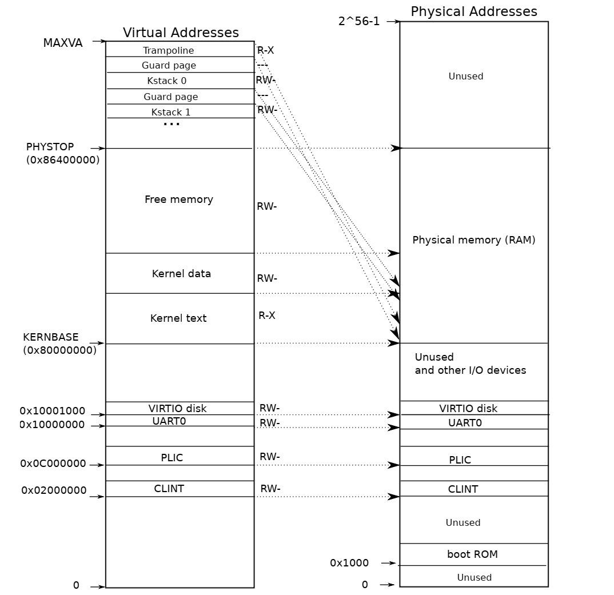
User address space:
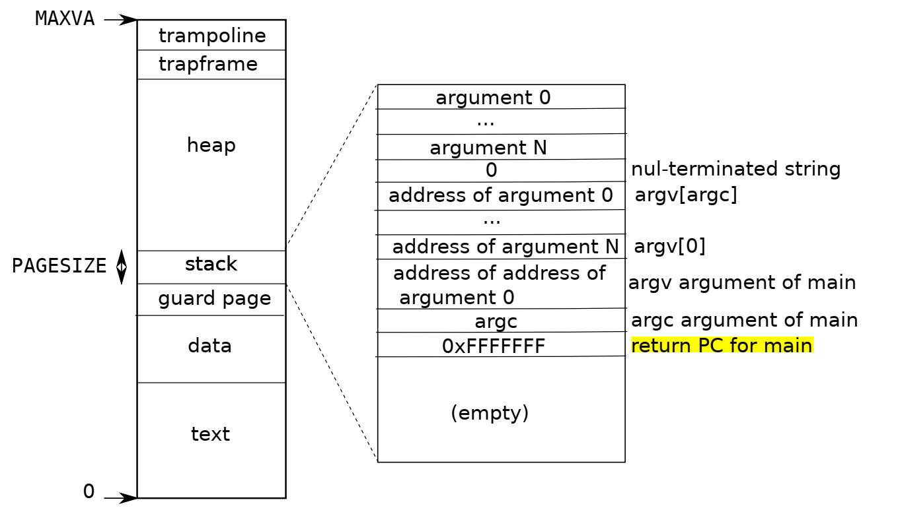
Key points:
- Free memory maps directly to a contiguous range of physical addresses; all user-process memory lives in this range.
- Trampoline is a piece of kernel code whose physical address is also reachable via the direct kernel-text mapping.
- Because kernel text and data are directly mapped to physical addresses, the kernel continues executing correctly after paging is enabled.
- In xv6, the user stack does not grow; it is fixed at one page.
- Each user process has a corresponding kernel stack (plus a guard page). xv6 limits
NPROCto 64, so 64 kernel stacks are allocated duringmain. - Kernel text is loaded at
0x80000000by early assembly startup code. - Below
0x80000000are memory-mapped I/O (MMIO) regions, including:- PLIC (Platform-Level Interrupt Controller)
- CLINT (Core Local Interruptor) — used only in M mode; so the maximum user virtual address in xv6 experiments is PLIC, not CLINT
- UART0 — handles display interaction
- VIRTIO — handles disk interaction
Address Translation
xv6 uses the Sv39 paging scheme of RISC-V:
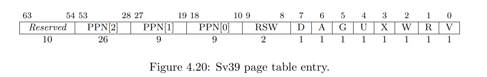
- The low 39 bits of a 64-bit virtual address are used.
- 39 = 9 + 9 + 9 + 12: three levels of page tables plus a 12-bit offset (2^12 = 4096 bytes per page).
- Each PTE is 8 bytes (64 bits): the top 10 bits are unused, the bottom 10 are flags, and the middle 44 are the PPN (Physical Page Number).
- Each page table occupies one page: 4096 / 8 = 512 PTEs per page table.
- After modifying a page table the OS must tell hardware to flush the TLB:
sfence_vma. - If the U bit is not set, the RISC-V kernel generally cannot access that page. Specifically, whether it can is controlled by the SUM bit in the
sstatusregister; by default SUM = 0, so access is denied.
The MMU hardware has two main parts: the TLB and the Translation Table Walk hardware.
When paging is enabled and the CPU issues a virtual address (VA):
- L1 cache (indexed by VA): each entry stores VA, permissions, and data. On a hit → return data immediately; on a miss →
- MMU TLB lookup: on a hit → get PTE directly; on a miss → walk the page table and update the TLB.
- L2 cache (indexed by PA): each entry stores PA and data. On a hit → return; on a miss →
- Main-memory access.
In xv6, walk() in kernel/vm.c performs the same walk in software. This is needed because PTEs must be installed before paging is enabled (as well as after), and you cannot let hardware walk a not-yet-populated page table without causing a page fault.
Software walks are also needed for copyin/copyout between kernel and user space: you must manually walk the user’s page table to find the physical address rather than simply loading it into satp.
Open Questions
- Why does the kernel-stack guard page have no physical memory backing, while the user-stack guard page does?
- In the labs, when should
panicbe used vs. returning an error value?
Function Calls
RISC-V Overview
RISC-V is the only open-source instruction set architecture (anyone can design boards for it). It originated from a UC Berkeley research project and is used by many companies. SiFive is one hardware vendor based on RISC-V.
RISC-V distinguishes a Base Integer Instruction Set — which all RISC-V processors must support — from optional Standard Extension Instruction Sets (e.g., single-precision floating point). Processors declare which extensions they support, and compilers use this information.
Calling Convention
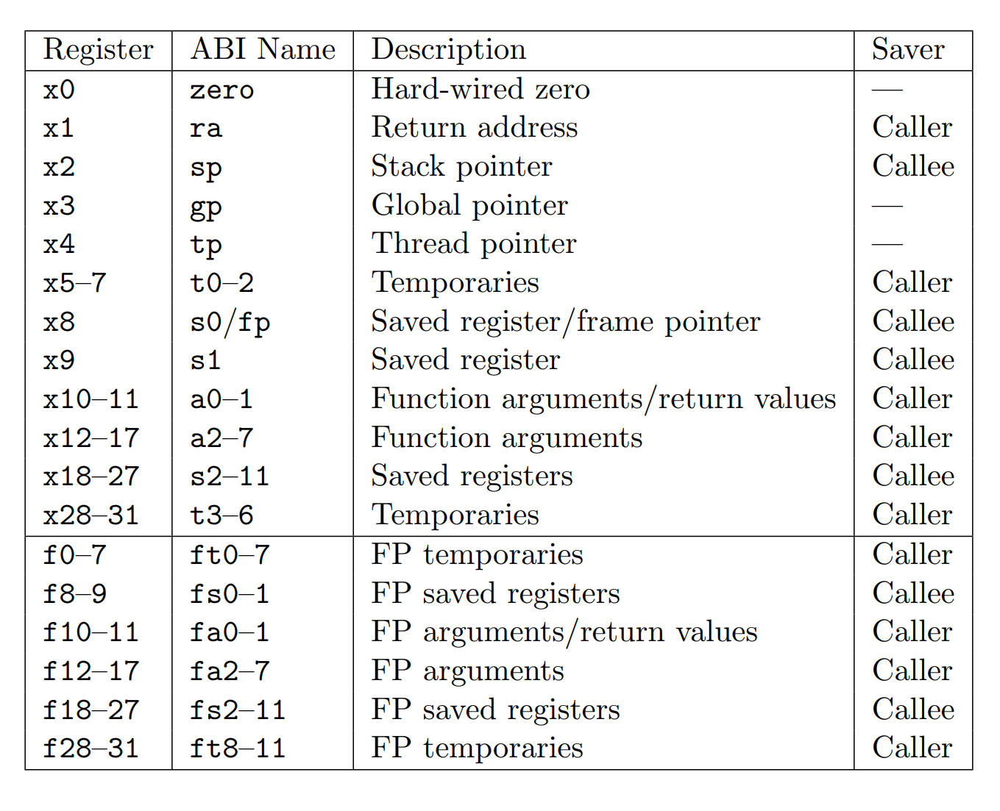
rais typically set topc + 4byJAL/JALRat the call site.
Stack Layout
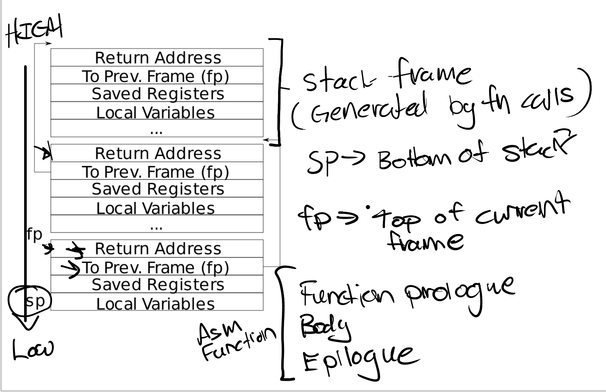
fpholds the top of the current stack frame; the pointer to the previous frame’s top is stored atfp - 16. This is the basis forbacktrace. When a function returns, hardware automatically reads Prev. fp and updatesfp.
System Calls
Full Flow
-
User code calls
write(int, const void*, int). The three arguments end up ina0,a1,a2. -
usys.plgeneratesusys.S, which contains syscall stubs:li a7, SYS_write # load syscall number into a7 ecall ret -
ecallperforms four steps:- Enters Supervisor Mode (needed to access control registers; trampoline and TRAPFRAME pages have U = 0).
- Disables interrupts.
- Saves PC to
SEPC. - Loads
STVECinto PC;STVECwas previously set to point touservecintrampoline.S.
-
uservecdoes the following:- Swaps
a0andSSCRATCH(SSCRATCHholds the base address of TRAPFRAME).SSCRATCHexists specifically so that, upon trap entry, we have a register-accessible pointer to where we can save all other registers without hardcoding an absolute address. - Saves all registers to TRAPFRAME (except SEPC, which is saved later in C code — the key point is that all general-purpose registers must be saved before entering C, since the compiler may overwrite any of them).
- Reads pre-stored values from TRAPFRAME: kernel page-table base address,
usertrap()address, etc. - Switches to the kernel page table. Since the trampoline maps at the same address in both user and kernel spaces, execution continues without interruption after the switch.
- Jumps to
usertrap().
- Swaps
-
usertrap()intrap.c:- Sets
STVECtokernelvec(inkernelvec.S), since we are now in the kernel and trap handling will differ. - Saves
SEPC(written by hardware at trap time) top->trapframe->epc. This is necessary because if the CPU context-switches to another process that also makes a system call (or an exception occurs),SEPCwould be overwritten. - If
scause == 8, the trap was caused by a system call:- Check whether the process has been killed.
- Increment
epcby 4. - Enable interrupts.
- Call
syscall().
- Sets
-
In
syscall.c, the core logic is:p->trapframe->a0 = syscalls[num](); -
The system call return value is now in
a0. Control returns tousertrap(), which runs a few more checks and then callsusertrapret(). -
usertrapret()(symmetric withusertrap()):- Disable interrupts (if
STVECwere already pointing back atuservec, an interrupt now would cause problems). - Set
STVECtouservec. - Update the pre-stored values at the top of TRAPFRAME.
- Configure
SSTATUSforsret: SPP = 0 (return to user mode), SPIE controls interrupt enable. - Write the saved
epctoSEPC. - Call
fn(TRAPFRAME, MAKE_SATP(p->pagetable))— i.e., jump touserretwitha0= TRAPFRAME address,a1= user page-table base.
- Disable interrupts (if
-
userret(symmetric withuservec):- Switch back to the user page table.
- Restore all registers from TRAPFRAME (including
a0, which now holds the syscall return value). - Swap
sscratchanda0— restoring SSCRATCH to the TRAPFRAME address for next time. - Execute
sret, which:- Enables interrupts.
- Returns to user mode.
- Loads
SEPCinto PC.
The system call is complete. The user program receives the return value in a0; from its perspective, the system call looked like a normal function call.
Notes
Why save registers to TRAPFRAME rather than the stack? Some languages have no stack (making sp invalid); others use non-standard stack formats the kernel cannot parse. As an OS, we cannot assume anything about the layout of user memory.
Real OSes optimize the trap path extensively. For example, memory-mapped file access lets user processes access files directly via virtual addresses without going through syscalls.
myproc() looks up a per-CPU array indexed by the current CPU’s hart ID, which uservec reads from TRAPFRAME and places in the tp register.
Open Questions
- Why does xv6 save caller-saved registers in the trapframe?
- Since
SEPCcan be overwritten by concurrent threads, could it be corrupted even in trampoline code (despite interrupts being off — what about exceptions or other syscalls)? - Could we swap
sscratchanda0back at the end ofuservec, making the TRAPFRAME argument tofnunnecessary? - Why does the kill-check happen where it does?
Page Faults
Dynamism via Page Faults
Virtual-to-physical address mapping provides two main benefits: isolation and abstraction. But page tables also enable dynamism: by writing a page-fault handler, the OS can react to faults at runtime. This enables many classic OS optimizations:
- Lazy allocation
- Zero-fill-on-demand
- Copy-on-write fork
- Demand paging
- Memory-mapped files
Hardware Support
When a page fault occurs:
SCAUSEis set to:- 12: instruction-fetch page fault
- 13: load page fault
- 15: store page fault
STVALis set to the faulting virtual address.SEPCis set to the address of the faulting instruction (as with all traps).- PTE flags include two RSW bits (reserved for software use by supervisor software).
Lazy Allocation
When a user process calls sbrk to grow the heap, no physical memory or page-table entries are allocated. Only p->sz is updated. Actual allocation happens on the first page fault. Lab note: code paths like unmap must handle pages that have not yet been physically allocated.
Zero-Fill-On-Demand
Compilers represent BSS (uninitialized / zero-initialized globals and statics) in an executable by recording only the size — not the all-zero contents — to keep the file small.
Normally, loading the executable into memory requires allocating pages of zeros for BSS. But since all those pages are identical (all zeros), we can initially map them all to a single read-only physical page of zeros. On the first write, a page fault fires; the handler remaps the faulting page to a fresh writable physical page.
Benefits: less physical memory at startup, faster exec.
Caveats: effectiveness depends on how read-heavy vs. write-heavy BSS actually is; each page fault carries non-trivial overhead (dozens of ld/sw for the trap path).
Copy-On-Write Fork
When fork is followed almost immediately by exec, copying all of the parent’s memory is wasteful. COW fork copies only the page-table structure and marks all parent and child PTEs read-only. On the first write by either side, a fault fires and the actual copy is made.
COW fork requires distinguishing fault reasons. RISC-V’s RSW bits in PTEs help.
Additional details to consider:
- How does the child find the parent?
- Does COW handle cascaded forks correctly?
- If the parent exits before the child, how are shared pages tracked? One approach: per-physical-page reference counts, decrement on release, actually free only when count reaches zero. Where should the count be stored?
Demand Paging
At exec time, allocate no physical pages at all; set V = 0 for all PTEs. On a fault, the OS can even handle OOM by evicting a page — the most common policy is LRU (using the PTE A bit; the OS clears it periodically). Pages with D (dirty) = 0 are preferred for eviction since they need not be written back.
Because this optimization also fires at exec time, its trade-offs are similar to zero-fill-on-demand. Also, since it is a “don’t allocate until accessed” strategy like lazy allocation, the OOM handling applies equally to lazy allocation if implemented with eviction.
In practice, OSes try to keep almost all physical memory in use as buf/cache, so new allocation nearly always requires eviction.
Memory-Mapped Files
Linux provides this via mmap. Typical implementation is lazy: rather than immediately loading the file into memory, the OS records the mapping between a virtual memory region and a file in a VMA (Virtual Memory Area) struct. On a fault within a VMA’s range, the kernel reads that portion of the file into memory.
Synchronization across multiple processes reading/writing the same file is a major concern.
Summary
Most of these optimizations exploit the ability to handle page faults lazily, saving memory and avoiding unnecessary work. The two core patterns are:
- Don’t-exist-until-accessed: defer allocation until the first access.
- Read-only sharing: map multiple consumers to the same physical page; copy on write.
These optimizations overlap heavily; in practice you don’t have to implement them as strictly separate mechanisms. The key insight is the lazy principle: what hardware support is strictly necessary, and how do you measure real-world effectiveness?
One more observation: some optimizations eagerly set up page-table entries (e.g., demand paging pre-installs PTEs with V = 0) while others (e.g., lazy allocation) do not. The difference is:
- Pre-installed PTEs carry per-page flag information (text vs. data vs. stack have different bits in xv6) and let the OS immediately detect invalid addresses.
- Without pre-installed PTEs, the OS needs alternative bookkeeping to detect invalid accesses.
Since page-table manipulation is already frequent, eagerly allocating the page-table structure (even without the backing physical page) is usually the better trade-off.
Interrupts
This section covers device interrupts (not timer or software interrupts).
Characteristics
Compared to system calls, interrupts have several distinguishing properties:
- Asynchronous: the interrupt handler has no relationship to the currently running process; system calls operate within the calling process’s context.
- Concurrency: interrupt generation and CPU execution are concurrent (and different hardware interrupts are concurrent with each other). Interrupt top and bottom halves are also parallel.
- Programmable devices: most hardware can be configured by writing to it before use.
Hardware
All devices connected to the motherboard send their interrupts to the PLIC (Platform-Level Interrupt Controller). The PLIC routes interrupts to a CPU core; if all cores are busy, the PLIC holds the interrupt. Concretely:
- PLIC notifies all CPUs of a pending interrupt.
- One CPU claims the interrupt; the PLIC stops sending it to others.
- After handling, the CPU notifies the PLIC.
- The PLIC discards the interrupt’s state.
The PLIC’s routing logic is programmable — for example, you can configure all cores to be notified but have only one claim.
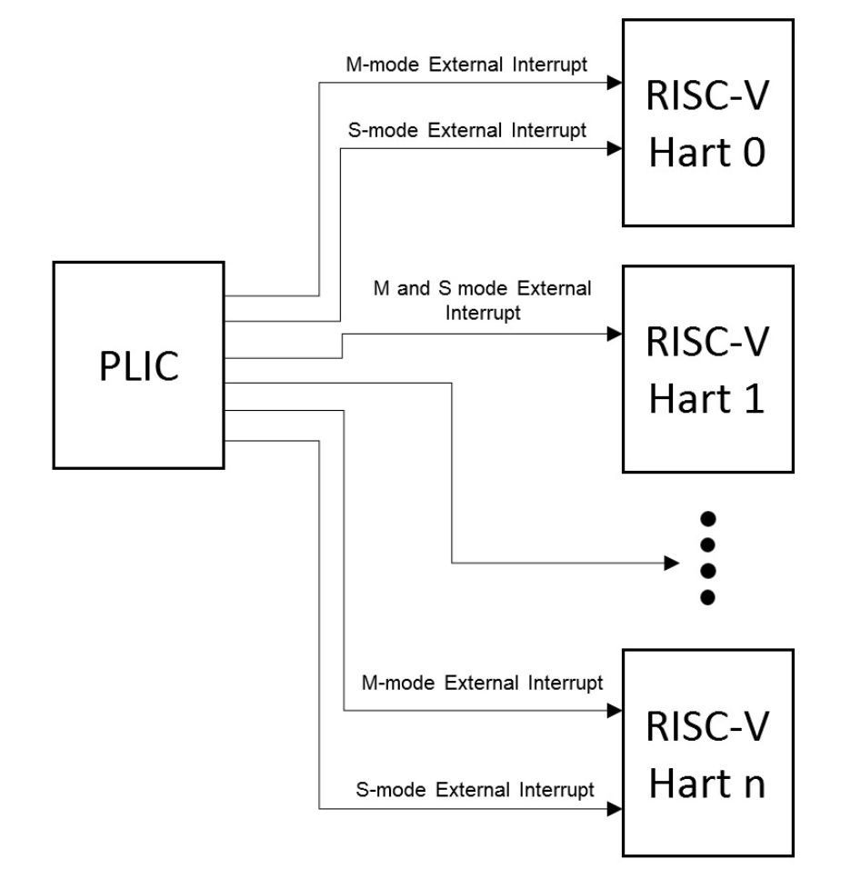
RISC-V provides per-core control registers:
- SIE (Supervisor Interrupt Enable): E bit for external interrupts, S bit for software interrupts (CPU-to-CPU), T bit for timer interrupts.
- SSTATUS: a single bit that enables/disables all interrupts.
- SIP (Supervisor Interrupt Pending): which interrupt type is currently pending.
- SCAUSE, STVEC: same role as in all traps.
Configuring interrupt handling requires configuring the device, the PLIC, and the CPU — three layers.
Drivers
A driver is the OS code that manages a device. In practice, driver code can be larger than the kernel itself.
Most drivers split into two parts:
-
Bottom half: the interrupt handler. When an interrupt fires and a CPU claims it, the CPU calls the interrupt handler. The handler runs independently of the current process.
-
Top half: the calling interface. For UART (Universal Asynchronous Receiver/Transmitter), this is mainly
uartputc(),uartgetc(), etc.UART: A UART chip sends data bit-by-bit over a serial line. In QEMU the emulated UART is connected to another emulated UART, which connects to the emulated display (a real terminal).
Typically drivers use an internal buffer shared between the top and bottom halves, decoupling the two.
Drivers program hardware via memory-mapped I/O: device address ranges are assigned by the board manufacturer. For example, the UART device in our QEMU board maps to 0x10000000–0x10001000:
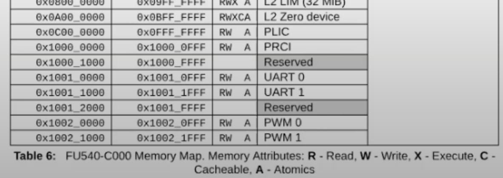
Within that range, the specific registers are defined by the UART model. QEMU simulates a 16550 UART:
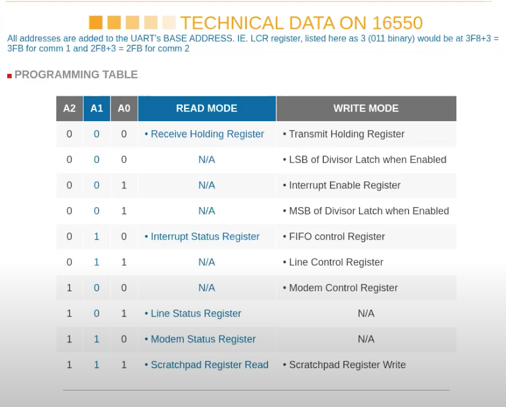
THR is the transmit holding register. After each write, the UART transmits the byte and then fires an interrupt indicating it is ready for the next one; writing before the interrupt causes data corruption. (Hardware may buffer internally, but keep this in mind.)
Initialization Flow
-
entry.Sruns in machine mode, jumps tostart.c. By writing0xfffftomedelegandmideleg, it delegates all exceptions and interrupts to supervisor mode. Then it setsSIEso this CPU accepts external, software, and timer interrupts. Finally, it initializes the timer.By default in RISC-V all traps are handled in machine mode; they can be re-delegated via MRET. The delegation registers (
medeleg,mideleg) allow lower privilege levels to handle specific trap types directly for performance. -
start.cusesmretto entermain.c. The first call isconsoleinit(), which includes:-
uartinit(): configures the UART chip — disables interrupts, sets baud rate, sets 8-bit character length, resets and configures FIFO, re-enables interrupts. After this the UART can generate interrupts, but since PLIC is not yet configured, the CPU cannot see them. -
Sets up
devsw[CONSOLE]:devsw[CONSOLE].read = consoleread; devsw[CONSOLE].write = consolewrite;
-
-
maincallsplicinit()after a few other inits. The PLIC is MMIO at0xC000_0000; writing to it configures the PLIC to accept UART0 and VIRTIO interrupts. -
plicinithart()runs on every CPU core, declaring interest in UART and VIRTIO interrupts and setting equal priority for all cores. Core 0 runsplicinit(); every core runsplicinithart(). Themainfunction uses an if/else to separate per-CPU-0 and per-core work. -
Finally,
scheduler()at the end ofmaincallsintr_on(), which sets the SSTATUS interrupt enable bit.
Top-Half Flow (Shell prints $ )
-
maincallsuserinit(), whichexecs the first user processuser/init.c.init.copens the console and duplicates its fd to create fds 0, 1, 2. -
initforks andexecs Shell. Shell callsfprintf()to write$to fd 2, ultimately reachingsys_write(), which processes one character at a time, callsfilewrite(). -
filewrite()checks the file type. Since the console was created withmknod, it isFD_DEVICE; for device files, it calls the device’s write function viadevsw[f->major].write, which isconsolewrite(). -
consolewrite()copies the argument in witheither_copyin(), then callsuartputc(). -
uart.cmaintains a circular buffer (buf, read pointer, write pointer) in a producer-consumer model.uartputc()checks whether the buffer is full (sleeps if so), writes the character to the buffer, then callsuartstart(). -
uartstart()(called by both top and bottom halves) drives the device: while the buffer is non-empty and the UART’s THR is not full, it writes a character to the THR (via the MMIO address mapped to the physical register). -
sys_writereturns. The UART hardware sends the character asynchronously and then fires an interrupt when done.
Bottom-Half Flow
-
An interrupt fires; the PLIC routes it to a CPU. If that CPU has
SIE.Eset, the CPU enters the trap handler (similar toecall: saves PC, disables interrupts, etc.). -
The trap handler calls
devintr(), which identifies this as a hardware interrupt and callsplic_claim(). The claiming CPU reads the interrupt number from a PLIC register (this read atomically claims the interrupt in hardware) and then calls the appropriate bottom-half handler — here,uartintr(). -
uartintr()is called either because new input arrived or because the previous output completed (room for more). It first loops to drain any input, then callsuartstart()to send the next buffered output character. Top and bottom halves are decoupled.
Input handling follows a similar pattern and is omitted here.
Polling
As interrupt handling becomes more complex, a very fast device can overwhelm the CPU. For example, a 1 Gbps NIC receiving maximum small packets can fire 1.5 million interrupts/second — one every microsecond.
Solutions:
- More work in hardware to reduce CPU load.
- Polling: for a slow device, interrupts are efficient; for a fast device, polling is better. Carefully designed drivers (like Linux’s NAPI interface for network cards) switch dynamically between the two.
Locks
Multi-Core Background
Why locks? After roughly year 2000, CPU clock frequencies plateaued, capping single-thread performance. Moore’s Law transistor counts kept increasing, but the gains went into more cores. To exploit this hardware, multi-threaded programming became mandatory. Locks are the most common tool for ensuring correctness in multi-threaded programs.
Race Conditions
A race condition is defined as: a memory location concurrently accessed by two or more threads where at least one access is a write.
When should you lock? A rough answer: whenever a race condition could occur — i.e., when a data structure might be read and written by multiple threads. But this rule is imperfect:
- Sometimes too coarse: even
printf, which shares no data, needs a lock to avoid interleaved output. - Sometimes too fine: sometimes a lock should be associated with an operation, not a data structure.
Invariants
From an invariant perspective, a lock exists to preserve invariants. For example, a linked list’s invariant includes “the head pointer points to the first node.” During a head-insert operation, this invariant is momentarily violated. A lock prevents the outside world from observing this inconsistent state.
Deadlock
To prevent deadlocks, related locks must be acquired in a consistent order. If two functions both use locks A and B, one must not acquire A first while the other acquires B first. This simple rule quickly becomes complex, with two unfortunate consequences:
- Finer-grained locks improve performance (ignoring lock overhead itself) but are harder to audit for potential deadlocks.
- More importantly, this breaks ideal modularity: we’d prefer a function to hide its internal locks, but ordering requirements force callers to know what locks a function holds.
The mathematical rule is simple, which is why deadlock-detection tools exist.
Development Practice
In practice, the common workflow is: start with coarse-grained locks, verify the multi-threaded code is correct and performance is adequate. If it is, there may be no need to refine. If not, incrementally fine-grain.
Spinlock Implementation
The most common spinlock implementation relies on a hardware-provided atomic test-and-set instruction.
In RISC-V, this is amoswap (atomic memory swap): takes address, register r1, and register r2; atomically swaps the value at address with r1, storing the old value in r2.
Implementation approaches for hardware atomicity:
- Shared memory controller: locks the address, lets one processor execute a few instructions, then unlocks.
- Shared bus: a bus arbiter executes multiple memory ops atomically.
- Cached: the cache coherence protocol ensures only one writer holds the cache line; that processor locks the cache line for the two operations.
xv6 acquire:
push_off(); // disable interrupts; uses a counter since locks can nest
if (holding(lk))
panic("acquire"); // not re-entrant
// on RISC-V this typically compiles to amoswap
while (__sync_lock_test_and_set(&lk->locked, 1) != 0)
;
// memory barrier: prevents reordering across this point
__sync_synchronize();
lk->cpu = mycpu();Notes:
- Interrupts must be disabled because concurrency isn’t only between CPUs — it’s also between an interrupt handler and normal code on the same CPU. If a lock is held when an interrupt fires and the interrupt handler tries to acquire the same lock, you get a deadlock.
__sync_synchronize()prevents the compiler or CPU from reordering instructions across this barrier (e.g., hoisting critical-section code beforeacquire). The same barrier appears inrelease.acquireis per-CPU: the subject that acquires a lock is a CPU, not a process.
Lock-Free Programming
More elegant solutions exist for avoiding race conditions without locks — these are called lock-free programs — but they are considerably harder to write.
The lock-free idea: do your work in a temporary location, then atomically commit to the visible state; retry if the commit fails.
For example, kalloc/kfree use a freelist. A lock-free approach might give each CPU its own list, only sharing with others when a CPU’s own list runs out.
Thread (Process) Scheduling
In xv6, a process is the same as a thread (no multi-threaded processes), so the terms are interchangeable below.
Why Multiple Threads?
- Hardware is trending toward more cores; you need multiple threads to utilize them.
- Computers genuinely run multiple tasks simultaneously (listening to music while browsing the web).
- Multi-threading can simplify program structure (e.g., the sieve of Eratosthenes pipeline).
Two types of parallelism:
- Running on multiple CPUs simultaneously.
- Time-sharing one CPU among multiple threads.
Other approaches exist (event-driven programming, state machines), but threads are generally the most convenient, programmer-friendly, and widely applicable method.
Design and Architecture
Switching from one thread and starting another is called scheduling. xv6 creates one scheduler per CPU.
Implementation challenges:
- Preemptive scheduling: in a system where user programs may be malicious, you cannot rely on them voluntarily yielding. A timer interrupt is used to forcibly reclaim control.
- Transparent context switching: saving and restoring state so each thread believes it has exclusive use of the CPU.
- Concurrency safety: multiple CPUs running schedulers simultaneously; locks must be designed carefully.
In xv6 (and most OSes), a timer interrupt fires to give the kernel control (pre-emptive), then the kernel voluntarily transfers control on behalf of the running thread (cooperative within the kernel). The flow: timer interrupt → usertrap() → yield() → sched().
The xv6 context switch goes through an intermediate scheduler thread:
- User process kernel thread → (via
swtch) → scheduler thread. - Scheduler thread → (via
swtch) → next user process’s kernel thread.
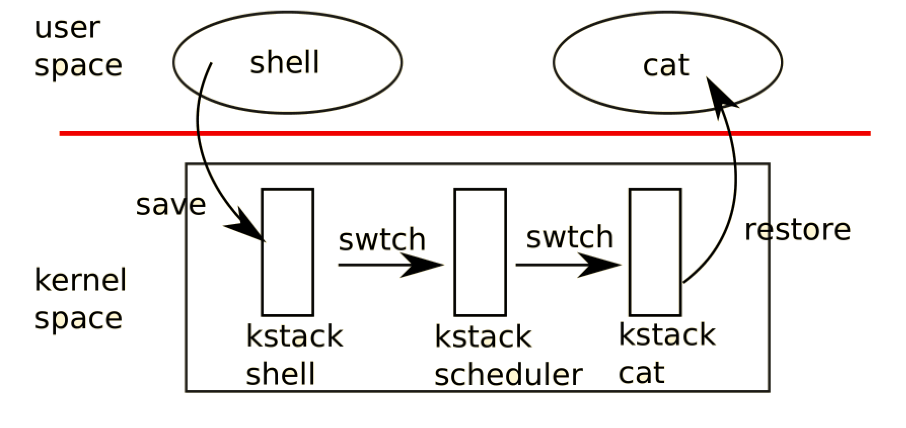
Detailed Flow
-
Timer interrupt →
usertrap()→yield().yieldacquires the current process’s lock, changes stateRUNNING → RUNNABLE, callssched():void yield(void) { struct proc *p = myproc(); acquire(&p->lock); p->state = RUNNABLE; sched(); release(&p->lock); } -
sched()runs sanity checks, then callsswtch(&p->context, &mycpu()->context). -
swtchsaves callee-saved registers,sp, andrato the old context, restores them from the new context, then executesret, which jumps to therastored in the new context — i.e., theswtchcall site insidescheduler():// round-robin scheduler for (p = proc; p < &proc[NPROC]; p++) { acquire(&p->lock); // ... if (p->state == RUNNABLE) { p->state = RUNNING; c->proc = p; swtch(&c->context, &p->context); // returns here c->proc = 0; } release(&p->lock); // ... }scheduler()never returns; every CPU enters it at the end ofmain()and loops forever. -
After
swtchreturns toscheduler,c->procis cleared to 0. -
Locks:
yield()acquiresp->lockat entry and releases it on exit;scheduler()acquiresp->lockbefore the switch and releases it afterward. These lock operations are cross-matched:scheduleracquires → switches into process → process (viayield) releases on the way back. This ensures atomicity of the state transition.An additional constraint: when switching threads, you must not hold any lock other than the process’s own lock. Consider a single-core system where P1 holds
uart_tx_lockand then the scheduler switches to P2. If P2 tries to acquireuart_tx_lock, it spins forever — and sinceacquiredisables interrupts, no timer interrupt can fire to switch back to P1. Deadlock. (The same analysis applies on multi-core systems.)
First Invocation
The scenario above covers most cases. But what happens when a process runs for the very first time?
-
allocproc()sets up a new process:p->context.ra = (uint64)forkret; // swtch into this process → start at forkret p->context.sp = p->kstack + PGSIZE; // sp = top of kernel stack -
userinit()allocates pages for initcode, setstrapframe->epc = 0,trapframe->sp = PGSIZE, and marks the processRUNNABLE. -
When
schedulerpicks this process and callsswtch, execution lands inforkret. -
forkretreleases the scheduler’s lock. On the first call, it also initializes the file system. Then it callsusertrapret()— not as a real return from user space, but to enter user space for the very first time.usertrapretrestorespcandspfrom the trapframe (epc = 0 for the first process, or the parent’s post-forkinstruction for forked children) and enters user mode. Faking a return is a common OS technique.
Design Notes
Why isn’t PC saved/restored during context switching? swtch is just a C function call. When swtch executes ret, it returns to the address in ra — no need to explicitly save/restore PC. This is also why only callee-saved registers are in the context: the C compiler handles caller-saved registers by pushing them to the stack before the call.
Why a separate context from trapframe? trapframe saves the registers of the user program; context saves the registers of a kernel thread. The two sets of state are different.
Where is the context stored?
- Each user process has a corresponding kernel thread; its context lives in the
procstruct. - Each scheduler thread has its own context but no associated process; its context lives in the
cpustruct.
Terminology: “Context switch” usually means switching from one (kernel) thread to the scheduler, though it can also mean a full user-process switch or even a user/kernel mode transition.
Sleep & Wakeup
Coordination
Some scenarios require waiting for a specific event or synchronizing between threads:
- Reading from a pipe when no data is available.
- I/O completion (e.g., waiting for a disk read to finish).
- A process calling
wait()for a child to exit.
Busy-waiting wastes the CPU when the event may take a long time. Coordination mechanisms let a thread yield the CPU and resume when the event occurs. Unix-style sleep & wakeup is the implementation we focus on.
Interface Design
Both sleep and wakeup need a channel to identify what to wait for / what to wake:
void sleep(void *chan) // broken_sleep
void wakeup(void *chan)The channel is just a number; sleep and wakeup don’t care what it represents:
void sleep(void *chan) {
p->chan = chan;
p->state = SLEEPING;
}
void wakeup(void *chan) {
for (p = proc; p < &proc[NPROC]; p++)
if (p->state == SLEEPING && p->chan == chan)
p->state = RUNNABLE;
}The Lost-Wakeup Problem
Consider this usage (omitting process locks):
int done;
uartwrite(buf):
for each c in buf
while not done
sleep(&tx_chan);
send(c);
done = 0;
uartintr():
done = 1;
wakeup(&tx_chan);The race: uartwrite checks done (false), decides to sleep, but has not yet changed state to SLEEPING. An interrupt fires, uartintr sets done = 1 and calls wakeup — but the process isn’t SLEEPING yet, so wakeup misses it. uartwrite then goes to sleep and never wakes up. This is the lost-wakeup problem.
We cannot release the condition lock after sleep or before sleep; the only solution is to pass the lock into sleep and let it release the lock atomically. The lock passed in is the condition lock — the lock protecting the condition checked in the while loop.
Additionally, sleep must call sched(), which requires holding the process lock. Acquiring the process lock must happen before releasing the condition lock; otherwise a wakeup could slip in between.
Correct Implementation
The correct sequence for sleep:
- Hold the condition lock.
- Check the condition in a
whileloop; not satisfied → callsleep. sleepacquires the process lock.sleepreleases the condition lock.sleepsets state toSLEEPING, recordschan, switches threads.sleep(on wakeup) releases the process lock.sleep(on wakeup) re-acquires the condition lock.- Return from
sleep; release the condition lock.
And for wakeup:
- Hold the condition lock.
- Modify the condition.
wakeupscans all processes:- Acquire the process lock.
- If state is
SLEEPINGandchanmatches → set state toRUNNABLE. - Release the process lock.
- Release the condition lock.
The lock acquisition order is always condition lock then process lock, so no deadlock.
void sleep(void *chan, struct spinlock *lk) {
struct proc *p = myproc();
if (lk != &p->lock) {
acquire(&p->lock);
release(lk);
}
p->chan = chan;
p->state = SLEEPING;
sched();
p->chan = 0;
if (lk != &p->lock) {
release(&p->lock);
acquire(lk);
}
}Other Coordination Primitives
Sleep & wakeup is general but has a minor wart: callers must expose the condition lock to the sleep interface, even though logically sleep shouldn’t need to know the condition. Semaphores avoid this by using a dedicated counter, but are less general. Java’s equivalent is Object.wait() / Object.notify().
exit
A process that wants to exit still holds resources needed to execute exit itself, so it cannot clean itself up entirely. The solution: let the parent clean up. Key code (simplified):
void exit(int status) {
// wake init in case parent has already exited
acquire(&initproc->lock);
wakeup1(initproc);
release(&initproc->lock);
acquire(&p->lock);
struct proc *original_parent = p->parent;
release(&p->lock);
acquire(&original_parent->lock);
acquire(&p->lock);
reparent(p); // re-parent children to init
wakeup1(original_parent);
p->xstate = status;
p->state = ZOMBIE;
release(&original_parent->lock);
sched(); // never returns
}And wait:
int wait(uint64 addr) {
acquire(&p->lock);
for (;;) {
for (np = proc; np < &proc[NPROC]; np++) {
if (np->parent == p) {
acquire(&np->lock);
if (np->state == ZOMBIE) {
freeproc(np);
release(&np->lock);
release(&p->lock);
return pid;
}
release(&np->lock);
}
}
sleep(p, &p->lock);
}
}Notable details in exit:
- Why wake
init? And why is it unsafe to hold another process’s lock when holdinginitproc->lock? - Recording
original_parentguards against a race where the parent also callsexitand reassignsp->parentto init, which would cause us to hold init’s lock unexpectedly. - Lock ordering: parent’s lock before child’s lock. This is why
waitreadsnp->parentwithout a lock — the parent field can only be written by the parent while holding the parent’s lock, so a racing write while we hold the parent’s lock is impossible.
If a parent exits without calling wait, its zombie children are re-parented to init, which calls wait in a loop. True permanent zombies are impossible in xv6.
kill
kill sets the target process’s killed flag to 1; if the target is SLEEPING, it sets the state to RUNNABLE. The process checks killed at safe points (beginning of each system call in usertrap, and at the end of usertrap) and calls exit voluntarily. Since these checks happen in the kernel (not user code), a malicious process cannot avoid being killed.
File System
Architecture
The file-system API we implement is a classic hierarchical-path-name API, but it is not the only way to build a storage system. Databases are another (their API is quite different). Modern databases generally sit on top of file systems; early databases often built their own FS directly on raw disks.
The classic layered file-system architecture:
- Disk (bottom)
- Buffer cache (block cache): block is the unit of FS disk operations; block cache caches blocks in memory
- Logging layer: for crash safety
- Inode cache: per-inode synchronization
- Inode: implements read/write
- File names and file descriptors (top)
Hardware and Drivers
Terminology:
- Sector: the smallest unit the disk drive can read/write (historically 512 bytes).
- Block: the OS-level unit, defined by the file system. In xv6, one block = 1024 bytes = 2 sectors. (Note: “block” and “sector” are sometimes used interchangeably; pay attention to context.)
Disk drivers use standard protocols such as PCIe or SATA. From the FS’s perspective, the driver API is simple: provide a block number and say read or write.
SSD random access: ~0.1–1 ms. HDD random access: ~10 ms.
Disk Layout
The FS must organize all data structures on disk so the file system can be reconstructed after a reboot. xv6’s layout:
- Block 0: boot sector (or unused). In xv6, QEMU loads the kernel directly via
-kernel, so block 0 is unused. - Block 1: super block — contains file-system metadata (e.g., log size).
- Blocks 2–31: log area.
- Blocks 32–44: inode area. Each inode is 64 bytes; 16 inodes per block.
- Block 45: bitmap block — tracks which data blocks are free. Bitmap, inode, and log blocks are collectively “metadata blocks.”
- Beyond: data blocks — store file and directory contents.
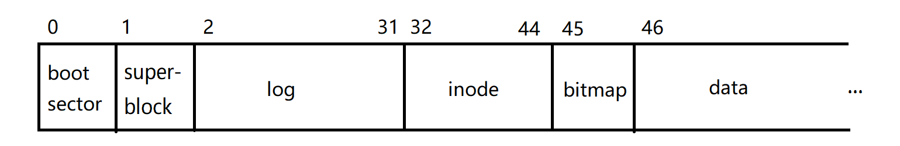
On-Disk Inode Structure
Each 64-byte disk inode contains:
type: file, directory, or other type; also indicates whether the inode is free.nlink: number of directory entries pointing to this inode.size: bytes of file data.- 12 direct block numbers: point to the first 12 data blocks.
- 1 indirect block number: points to a block containing 256 block numbers.
Maximum file size in xv6: 12 × 1024 + 256 × 1024 = 268 × 1024 bytes.
Directories store directory entries (dirent), each 16 bytes:
- 2 bytes: inode number of the file or subdirectory.
- 14 bytes: name.
The root inode has a fixed inode number (1 in xv6).
Path lookup: starting from the root, scan each directory’s data blocks to find the matching dirent, follow its inode, and repeat.
QEMU
make qemu compiles mkfs/mkfs.c into mkfs/mkfs, which generates fs.img containing the initial file system. QEMU uses fs.img via -drive file=fs.img.
create Flow
sys_open()withO_CREATEcallscreate().create()callsnameiparent()→ returns the parent directory inodedpand the new filenamename.dirlookup()confirmsnamedoes not already exist indp.ialloc()allocates a new inode (simple linear scan):- Use super-block metadata to find the inode range; iterate.
bread()fetches the block (efficient due to buf cache).bget()searches the cache; on miss, evicts an unreferenced block and returns it.breadchecks thevalidflag; if not set (evicted block), it callsvirtio_disk_rw()to read from disk.- Check
type == 0(free inode), clear thedinode, writetype. log_write(): records this write in the log and callsbpin()to pin the buffer (incrementrefcnt) so it is not evicted before the transaction commits.- Release the buffer lock.
iget(): analogous tobget, looks up or allocates an in-memory inode withvalid = 0(returns without reading the disk, and without a lock).
- Acquire the inode lock; write
major,minor,nlink; calliupdate()to persist changes. - If a directory, create
.and..entries. - Write the new
direntinto the parent directory.
Sleep Locks
Both buf and inode use sleeplock rather than spinlock:
struct sleeplock {
uint locked;
struct spinlock lk; // protects the sleeplock's state
char *name;
int pid;
};Reason: spinlock busy-waits and disables interrupts. For buf and inode, disk I/O (which relies on interrupts for completion) may be required. Holding a spinlock with interrupts disabled while waiting for an interrupt-driven I/O operation on a single-CPU system would deadlock. sleeplock uses sleep/wakeup and does not disable interrupts. The program can still guarantee no interrupt-driven corruption because all disk interaction goes through bread, the only entry point that touches disk data.
acquiresleep():
void acquiresleep(struct sleeplock *lk) {
acquire(&lk->lk);
while (lk->locked) {
sleep(lk, &lk->lk);
}
lk->locked = 1;
lk->pid = myproc()->pid;
release(&lk->lk);
}brelse() calls releasesleep() and implements LRU: moves the buf to the bcache.head.next position (most-recently-used).
Logging: Principles
Crash safety does not require preserving all recent writes; a crash that loses the last few bytes of a write is acceptable. What is not acceptable is leaving the system in an internally inconsistent state — e.g., an inode allocated but not linked into any directory.
The logging mechanism (borrowed from database transaction logs) guarantees:
- Atomic system calls: file-system calls are all-or-nothing.
- Fast recovery: no need to scan the entire FS on reboot (unlike scavengers, which check every inode and bitmap block).
- Efficiency (in implementations like Linux ext3).
Steps:
- Log write: when updating the FS, write to the log rather than the FS itself; record which FS block each log block corresponds to.
- Commit: when a file-system operation (possibly spanning multiple log writes) completes, write the count of log blocks to the log header. This single write is the atomic commit point.
- Install log: copy log blocks to their actual FS positions.
- Clean log: set the count in the log header to zero.
On reboot, if the header count > 0, redo the install step. Install is idempotent — repeating it causes no harm.
Two invariants:
- Write-ahead rule: all writes must be in the log before the commit record.
- Freeing rule: a transaction may not be removed from the log until all its writes are in the FS.
The commit’s atomicity comes from the fact that writing the header is a single-block (sector) write; disk hardware guarantees single-sector writes are atomic.
Logging: Implementation
xv6 log structure on disk (30 blocks total):
- Header block:
n(number of valid log blocks) +nblock numbers.
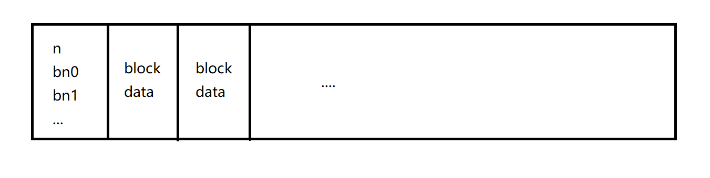
In memory:
struct logheader {
int n;
int block[LOGSIZE]; // LOGSIZE = 3 * 10; one call can write at most 10 blocks
};
struct log {
struct spinlock lock;
int start, size;
int outstanding; // number of FS syscalls in progress
int committing;
int dev;
struct logheader lh;
};Transactions are delimited by begin_op() / end_op():
void begin_op(void) {
acquire(&log.lock);
while (1) {
if (log.committing) {
sleep(&log, &log.lock);
} else if (log.lh.n + (log.outstanding + 1) * MAXOPBLOCKS > LOGSIZE) {
sleep(&log, &log.lock);
} else {
log.outstanding += 1;
release(&log.lock);
break;
}
}
}When code needs to modify a block, the sequence is:
bp = bread(...)
// modify bp->data[]
log_write(bp)
brelse(bp)log_write(): if the block is already in the log header (log absorption), no-op; otherwise, increment n, record the block number, and bpin the buffer.
end_op() decrements outstanding; if it reaches 0, calls commit():
static void commit() {
if (log.lh.n > 0) {
write_log(); // write blocks to log area on disk
write_head(); // the real commit: write n to the log header
install_trans(0); // write blocks to their FS positions
log.lh.n = 0;
write_head(); // clear the log
}
}Recovery
- The first time any process runs it goes through
forkret(), which callsfsinit(ROOTDEV)once (guarded by astatic int).fsinitmust run in a process context because disk reads needsleep. fsinitreads the super block and callsinitlog(), which initializes the in-memory log struct and callsrecover_from_log().recover_from_log()reads the log header from disk, loadsnand the block-number array into memory, then (ifn > 0) callsinstall_trans, completing any interrupted transaction.
bpin() / bunpin()
bget() can evict any buffer with refcnt == 0. All writes belong to a transaction; bwrite is always called by the logging layer. Therefore the logging layer must pin buffers (via bpin, which increments refcnt) to prevent eviction until the transaction commits. bunpin is called only in install_trans (for non-recovery use).
Concurrency Details
The log area is limited (30 blocks), leading to subtle constraints:
- The number of pinned buffers can reach 30, so
bcachemust have at least 30 entries. - Large operations like
filewriteare broken into loops of multiple sub-operations. begin_opchecks that the space reserved for all in-progress transactions plus this new one will not overflow the log.end_opwithoutstanding == 0commits all accumulated transactions together — this is called group commit.
Inode Cache
The inode cache mirrors the buffer cache: a large icache with a single lock, and an array of per-inode entries each with their own lock.
The key difference: iget() returns an inode without a lock (unlike bread, which returns a locked buffer). This is necessary because multiple processes must be able to hold references to the same file simultaneously (e.g., for pathname lookup).
Rules:
- Reading/writing an inode requires calling
ilock()first (may do a disk read ifvalid == 0) andiunlock()when done. - Inodes are write-through: modifications to the disk inode portion must be followed by
iupdate(), which callslog_write().
Real-World Considerations
- xv6 directory lookup is O(n) linear scan; production systems use on-disk balanced trees.
- Multi-disk file systems: RAID in hardware, or software-defined in modern systems.
- Dynamic add/remove of disks.
- Snapshots and incremental backups.
- Most production OSes abstract many resource types as files, with a per-file function-pointer table dispatching operations to inode-type-specific implementations.
ext3
FS below refers to the non-log disk region.
xv6’s Performance Problem
xv6 logging forces every system call to wait for the entire transaction — all writes to the log, header update, install to FS, and log clear — before returning. Other system calls must wait during commit() because begin_op checks committing. Each system call is synchronous with its disk writes.
Additionally, xv6 writes every block twice (to the log and then to FS). ext3 can partially optimize this.
ext3 Data Structures
On-disk log:
- Super block: global log info —
offset(start of the first uncommitted transaction) andsequence number. - Transactions (multiple), each containing:
- Descriptor block: block count, block numbers, sequence number.
- Data blocks: the actual updated data.
- Commit block: written after all data is in the log; contains the sequence number.
The log area (excluding the super block) is a circular buffer.
In memory, an open transaction contains:
- Its sequence number.
- Pointers to in-memory (block-cache) blocks it has modified.
- Handles for each system call participating in it.
At any moment there is at most one open transaction in memory, though multiple committed transactions may be awaiting install to the FS.
How ext3 Improves Performance
By default ext3 creates a new transaction every 5 seconds, batching all system calls within that window. A kernel thread writes committed transactions to the log; another writes from the log to the FS. Benefits:
- Async system calls: programs return immediately; I/O happens in the background.
- I/O concurrency: CPU and disk can work simultaneously.
- Amortization: the fixed overhead of descriptor and commit blocks is shared across many calls; disk head seek time is amortized.
- Write absorption: multiple writes to the same block within a transaction collapse into one.
- Disk scheduling: sending 1000 write requests at once lets the driver sort them by track position, far more efficient than 1000 separate writes.
- Transaction concurrency: one open, several committing, several installing. System calls don’t wait for earlier transactions.
The main complexity introduced: when the current open transaction commits, ext3 copies all modified blocks in memory (the transaction works on its own copies going forward). Copy-on-write avoids unnecessary copies.
fsync
For applications that need synchronous guarantees (databases, word processors), Unix provides fsync(fd), which forces all data related to that file descriptor to disk before returning.
Transaction API
start() marks the beginning of a file-system call and returns a handle. Any block the call reads or writes is registered with get(handle, ...). stop(handle) marks the end. When all handles in a transaction have called stop, the transaction can commit.
Commit Flow
Every 5 seconds:
- Block new file-system calls (they wait for the new transaction).
- Wait for all in-progress calls in the current transaction to call
stop. - End the current transaction; copy modified blocks (COW).
- Open a new transaction; wake waiting calls.
- Write the descriptor block to disk.
- Write data blocks.
- Write the commit block.
Why must steps 1–2 complete before opening a new transaction? Consider: T1 contains an in-progress create(x) that hasn’t yet allocated an inode. ext3 opens T2. An unlink(y) in T2 frees an inode. create(x) uses that inode. T1 commits; T2 crashes before committing. On recovery, T1’s changes are replayed but T2’s are not — two files share the same inode. T2’s atomicity is violated because one of its effects (the inode free) survived while its commit did not.
This is the classic cross-transaction dependency problem from database theory: T1 used data modified by T2 but committed before T2 — if T2 rolls back, T1’s state is corrupt.
Recovery Flow
- Read the super block; find the log start.
- Scan forward: stop when a commit block is not followed by a descriptor block, or a descriptor block is not followed by matching data and a commit block.
- Re-apply all valid transactions to the FS; clear them from the log.
Two disambiguation problems:
- Distinguishing block types: descriptor and commit blocks start with a 32-bit magic number. If a data block happens to start with the magic number, its first 4 bytes are replaced with zeros in the log and a flag is set in the descriptor block; on install the zeros are replaced with the magic number.
- Identifying the correct commit block: each block carries a transaction sequence number; stale blocks from a previous rotation of the circular log have a lower sequence number.
Further Optimizations
- Can the commit block be merged into the descriptor block?
- ext4 writes data and commit blocks together for better disk scheduling, and uses a checksum in the commit block to detect partial writes.
- ext3 data modes (configurable in Linux):
- Journaled: file content also goes through the log.
- Ordered (default): only metadata (inodes, directory blocks) go through the log; file content is written directly to the FS, but always before the metadata commit. This avoids seeing stale file content via a new inode.
- Writeback: no ordering guarantee; fastest but risks stale content visibility.
User Programs and Virtual Memory
Virtual Memory Primitives
This 1991 paper argues that just as the kernel uses VM and page faults (for COW, etc.), user programs should have the same power: controlling page accessibility and registering custom handlers. The authors survey several applications and identify these OS-level primitives:
- TRAP: handle page faults in user space (register a handler with the OS).
- PROT1: reduce the accessibility of one page (e.g., set to read-only or no-access).
- PROTN: reduce the accessibility of N pages at once (amortizes TLB flush overhead — a significant cost).
- UNPROT: increase accessibility of one page.
- DIRTY: return a list of pages dirtied since the last call.
- MAP2: map multiple virtual addresses to the same physical address.
Unix Interfaces
Modern OSes (including Unix-family) provide these primitives:
- TRAP:
sigaction()+SIGSEGV. - PROT1, PROTN, UNPROT: all via
mprotect(). - DIRTY: no direct interface; see Linux pagemap documentation.
- MAP2: multiple calls to
mmap().
mmap() is the most important VM-related system call:
void *mmap(void *addr, size_t length, int prot, int flags, int fd, off_t offset);Arguments:
addr: desired virtual address (NULL= let the OS choose); actual address returned.length: size of the mapping.prot:PROT_EXEC,PROT_READ,PROT_WRITE,PROT_NONE.flags:MAP_PRIVATE(writes don’t propagate to file on disk),MAP_ANONYMOUS(no backing file — allocates anonymous memory; similar tosbrkbut more flexible and POSIX-standard).fd: file descriptor.offset: start offset within the file.
munmap(): removes a mapping.
mprotect(): changes permissions on a virtual memory range; addr must be page-aligned, and the change applies to all pages covered by [addr, addr+len).
sigaction(): registers a handler for a signal (e.g., SIGSEGV for page faults):
int sigaction(int signum, const struct sigaction *restrict act, struct sigaction *restrict oldact);Implementation
How does the OS know what file a virtual region maps to? The OS creates a VMA (Virtual Memory Area) object for each contiguous mapped region. Pages within a VMA share the same permissions and are backed by the same object (file or anonymous memory). In Linux (linux/mm.h, vm_area_struct):
unsigned long vm_start; /* inclusive */
unsigned long vm_end; /* exclusive */
pgprot_t vm_page_prot; /* access permissions */
unsigned long vm_flags;
struct vm_operations_struct *vm_ops;
unsigned long vm_pgoff; /* offset within file */
struct file *vm_file; /* mapped file, if any */
// ...VMAs provide the metadata needed to handle page faults correctly; a single PTE cannot carry enough information.
How does the OS hand page-fault handling to a user handler? The overall approach (the same as xv6’s sigalarm lab):
- Page fault → enter kernel.
- Upcall to user space; run the handler.
- Handler calls
mprotect()to change PTE permissions. - Handler returns to kernel.
- Kernel returns to the original user process.
Security: the handler runs in the same user address space, so the worst it can do is crash its own process.
Applications
-
Memoization / cached tables: map a virtual address space for lookup results; on the first access (page fault),
mmapa page, compute all results for that page, and cache. On OOM,munmapone page andmmapanother. -
SVM (Shared Virtual Memory): build a large virtual shared memory across machines. Pages not in local memory are initially inaccessible; on fault, fetch the page from the remote machine and invalidate all other copies.
-
Concurrent checkpointing: mark all pages read-only, start a background checkpoint thread copying pages. If the main program writes a page first (fault), the handler copies it immediately. This enables concurrent checkpoint without pausing the program. Incremental checkpointing uses DIRTY to copy only changed pages.
-
Persistent storage, extended addressability, data-compression paging.
-
Concurrent GC (garbage collection):
- Basic copying GC: split heap into from-space and to-space; pause, forward all reachable objects to to-space, free from-space.
- Baker’s real-time incremental GC: forward roots, then mark from-space inaccessible. Each object access checks if it’s in from-space; if so, forward it. Allocations forward a few objects each time. Problems: per-access check overhead; no natural place for a background GC thread.
- VM-based concurrent GC: after forwarding roots, set all occupied from-space pages inaccessible (unscanned). On fault, the handler scans all reachable objects on that page and forwards them, then marks the page accessible. A background GC thread can concurrently scan unscanned pages (the user thread has no permission to access them). Concurrency requires a global lock around
scan()calls. See Baker’s implementation. - Generational GC: young objects die soon; young objects tend to point to old objects. GC should run frequently on the young generation. The hard part: finding old-to-young pointers. Solution: set old generation to read-only; on write fault, record the dirty page. At GC time, check dirty pages for young-generation pointers. (DIRTY makes this even simpler.)
The pattern is consistent: use page faults for any situation where a background thread must run concurrently with the main thread but must not interfere with data the background thread is working on.
Microkernel
No source code explored for this section; consult “Operating Systems: Design and Implementation” and Minix source.
Monolithic Kernels and Their Problems
xv6 models Unix, a monolithic kernel. The core idea: the OS should provide powerful abstractions, so it includes VM, process scheduling, system calls, signals, interrupts, hardware drivers, file system, etc. Benefits:
- Abstraction and portability: high-level abstractions hide hardware complexity.
- Resource management: the OS has global visibility over all hardware and processes.
- Subsystem cooperation: all subsystems are in one program; sharing data is simple.
- Security: strict isolation between user programs and hardware.
But problems stem from the fundamental issue: because the OS does everything, if a new need arises the OS must handle it; the user is powerless if it doesn’t.
- Growing code base → more bugs; formal correctness proofs are infeasible. Embedded systems often don’t need all this functionality.
- User programs are severely constrained by OS design decisions (e.g.,
waitonly on your own children). - Extensibility: all subsystems are in one program; replacing or customizing one is hard.
- Tightly coupled subsystems may mean low modularity; large codebases are aesthetically unsatisfying.
Linux and others have responded: loadable kernel modules, IPC-like subsystems in macOS, hybrid kernels (Windows).
Microkernels and Their Challenges
A microkernel implements only threads and IPC; everything else runs as user-space servers. It is essentially a client-server architecture, with user processes as clients and FS/VM/driver processes as servers.
This reflects a clean answer to the question from the start of the course: what must an OS do? Isolate mutually untrusting programs. So even a microkernel needs address spaces and threads.
Additional advantages:
- A crashed server can be restarted without rebooting.
- Multiple OSes can run as services on top of one microkernel.
Challenges:
- What is the minimal kernel API?
- IPC is on the critical path for everything; performance is critical.
- Separated services have fewer opportunities for cross-component optimization (e.g., shared page cache).
- Can a monolithic OS (Linux) be ported to run on a microkernel without a full rewrite?
L4 Microkernel
Notable microkernels: QNX (Blackberry QNX in phones and automotive systems), L4 (widely used in embedded systems, RF control in phones). As of 1997, L4 had:
- 4 abstractions: threads, address spaces, IPC, and tasks.
- 7 system calls.
- 13,000 lines of code.
An address space is a set of address mappings; a thread is an execution abstraction associated with an address space, a UID, a page-fault handler, and an exception handler; a task is a set of threads sharing an address space.
The 7 system calls provide:
threadcreate: create a task or thread.IPC: send, recv, and many variants.mapping: map a physical page into your own or another task’s address space. Mapping into your own address space is likemmap; mapping into another’s requires permission. This enablesfork:threadcreatefor a new task.- IPC message mapping parent’s memory into the new task.
- IPC
Startmessage to the new task with PC and SP.
- Register as another task’s pager (page-fault handler): L4 packages page faults as IPC messages to the pager. A shared pager effectively provides memory management as a service.
- Hardware access: privileged tasks can map hardware registers into their address space, providing a driver foundation.
- Interrupt handling: L4 packages interrupts as IPC messages to interested tasks, also for drivers.
L4 scheduling is similar to xv6 (not discussed further).
Slow IPC
A naive IPC implementation (like Unix pipes):
- P1 calls
send(P2_UID, msg_ptr). - Kernel copies message to a kernel buffer, records it as from P1.
- P1 returns.
- P2 calls
recv; kernel copies the buffered message to P2’s memory and returns P1’s UID.
For a typical request-response cycle (two IPC transactions):
- 4 system calls = 8 mode switches, each involving a TLB flush.
- 4 data copies.
- On single-core: at least 2 context switches = 4 full context switches.
This was the original L4 IPC implementation, and its terrible performance caused many researchers to dismiss microkernels.
Fast IPC
Jochen Liedtke’s 1993 paper “Improving IPC by Kernel Design” introduced several optimizations. The core change: synchronous instead of asynchronous mode.
- P2 (a server) is already waiting in
recv. - P1 calls
send→ enters kernel. - Kernel copies P1’s data directly into P2’s memory.
- Immediately starts P2 running (P2 returns from its
recv), skipping the scheduler.
Additional optimizations:
- Zero-copy via registers: for small messages (tens of bytes), use registers instead of memory — no copy at all.
- Page mapping: for large messages, include a mapping in the IPC message — no copy at all.
- RPC optimization: replace two pairs of
send/recvwith onecall()(P1 sends and waits for reply) and onesendrecv()(P2 replies to one call and waits for the next).
Combined, these optimizations yielded a 20× speedup.
Linux as a Service
The microkernel community has long wanted to compete with monolithic kernels in all domains. Two obstacles:
- Reimplementing all monolithic functionality as microkernel services is enormous work.
- Compatibility with the vast body of Linux/Unix software.
A practical solution: run a monolithic OS (Linux) as one large service on top of L4. Most of Linux runs unchanged, except it can no longer directly modify page tables. Each Linux process runs as a separate L4 task. A library translates Linux system calls (fork, exec, read, write) into RPC calls to the Linux task. L4 handles scheduling of all tasks; the Linux task still runs kernel threads internally for handling its own system calls, but it can no longer schedule user processes directly.
Under the AIM Multiuser Benchmark, L4-Linux was only a few percent slower than native Linux.
Virtual Machines
Overview
A Virtual Machine (VM) emulates a complete physical machine and can run an OS with applications. Multiple VMs share one physical machine, managed by a Virtual Machine Monitor (VMM, also called hypervisor), which sits directly on hardware (or as a loadable kernel module on a host OS). In either case we assume the VMM has full privilege.
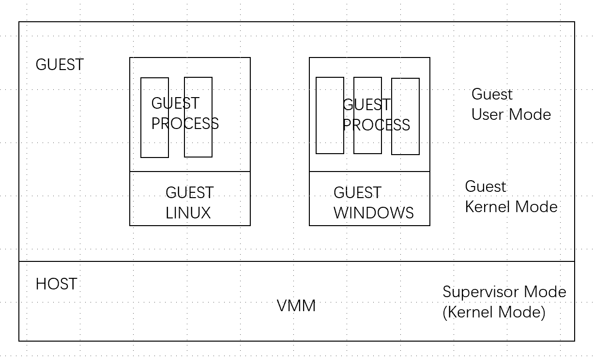
Three main uses:
- Multi-tenancy: cloud services (sharing one physical machine among many users).
- Kernel development: convenient debugging environment.
- Advanced features: checkpoint, migrate, monitor.
Why we study VMs:
- Cloud computing (ECS, etc.) requires understanding how VMs isolate untrusted guest OSes.
- VMs offer a different abstraction from processes; studying VM memory allocation and scheduling gives new insight into OS design.
- VMs are influencing OS and hardware design: e.g., Intel VT-X; RISC-V guarantees that any privileged instruction in user mode triggers a trap.
Implementation approaches:
- Full software emulation: simulate registers as variables. Highly portable; extremely slow (every guest instruction becomes multiple host instructions).
- Direct execution with trap-and-emulate: run most instructions directly; trap on privileged ones. Fast, but requires careful handling.
- Hardware support (VT-X / SVM): trap-and-emulate still has overhead from frequent traps; Intel VT-X adds hardware to run privileged instructions at near-native speed.
Trap-and-Emulate
- All guests run in user mode from the VMM’s perspective. Any privileged instruction traps to the VMM, which reads the cause and emulates the instruction by updating in-memory virtual control registers.
- To track guest privilege level: when the guest executes
sret, set its virtual mode to user; onecall, set to kernel. - Each VM has its own set of virtual state in VMM memory, analogous to how an OS maintains per-CPU/per-process state.
- Before returning from a trap, write the virtual SEPC to physical SEPC, so
sretjumps to the correct guest instruction (or to the guest’s trap handler forecall). - Shadow page tables: the VMM cannot use the guest’s page table (guest physical addresses are not the same as host physical addresses; isolation must be maintained). The VMM maintains a guest-physical → host-physical mapping. For each guest page table, it builds a shadow page table mapping guest-virtual → host-physical. When the guest modifies SATP (CR3 on x86), the VMM installs the shadow page table instead.
- Guest direct PTE modifications don’t trap immediately. But
sfence.vmais a privileged instruction, so the VMM can intercept it and rebuild the shadow page table. - Device emulation: three options:
- Trap on MMIO access: set shadow PTEs for device MMIO pages to invalid; accesses fault to the VMM, which emulates the device (e.g., disk reads become reads from an image file). Fully transparent to the guest; very slow.
- Paravirtualized devices: guest knows it’s in a VM; writes I/O commands to a shared memory queue; VMM processes them asynchronously. Fewer traps; decoupled I/O.
- Pass-through: modern NICs support partitioning into multiple sub-NICs; each guest interacts directly with its sub-NIC at near-native speed.
VT-X
VT-X eliminates trap overhead by providing an extra set of control registers per CPU, allowing privileged instructions to execute at hardware speed in the guest:
- Intel calls host mode root mode and guest mode non-root mode.
- The VMM creates a VMCS (Virtual Machine Control Structure) in memory, fills in configuration and initial register values, and invokes a special instruction:
VMLAUNCH: root → non-root; creates a new VM from a VMCS pointer.VMCALL: non-root → root; guest-to-VMM trap.VMRESUME: root → non-root; return from VMM to guest.
- Device interrupts (especially timer) default to trapping to the VMM, enabling multi-VM scheduling.
- EPT (Extended Page Table): the VMM sets up an EPT for each VM. The MMU automatically performs two-level translation: guest-virtual → guest-physical (via guest page table) → host-physical (via EPT).
Dune
Dune is a research project that allows ordinary Linux processes to use privileged instructions directly (without system calls) by leveraging VT-X. A Dune process is like a VM with its own guest supervisor mode and guest user mode. Use cases include sandboxing untrusted apps/plugins in a browser.
Another use case: GC. During concurrent GC, the program may modify already-scanned objects. With Dune, the GC can check PTE dirty bits directly using ordinary load/store instructions — instead of the slow /proc/pid/pagemap approach available in normal Linux.
Networking
Background
- Every layer’s packet (except the application layer) carries a type/protocol field to indicate which module should handle the payload.
- MAC address: first 24 bits = manufacturer ID, last 24 bits = per-device ID.
- In Linux,
tcpdumpinspects packets of any type. - Ethernet is a LAN communication protocol.
- ARP packets are encapsulated directly in Ethernet frames; the ARP payload also contains source and destination MAC addresses (because ARP does not depend on the underlying protocol header).
- The OS socket layer maintains a table mapping sockets to file descriptors, and per-socket queues. UDP/TCP use incoming packet fields to find the right socket and enqueue the payload.
Packet Processing Flow
Although the protocol stack appears synchronous, the implementation uses multiple concurrent actor threads. Resource contention between them can cause the livelock problem discussed below.
- NIC receives a frame, validates it, identifies it as an IP packet → fires an
rxinterrupt. - The
rxinterrupt handler copies the packet into a memory queue. - An IP processing thread reads the queue and decides:
a. Deliver to UDP, then to a socket queue; an application reads it later.
b. Forward: place the packet in the
txqueue for an egress NIC. The NIC fires atxinterrupt when the previous packet is sent; thetxinterrupt handler sends the next packet.
Actors present: rx interrupt handler, tx interrupt handler, IP processing thread, application threads.
DMA
Copying packets from NIC to memory in the rx interrupt handler is CPU-intensive. Modern NICs (e.g., Intel E1000) use DMA via ring buffers:
- The NIC driver allocates a packet buffer in memory and an array of packet pointers (the ring — a circular queue).
- The driver tells the NIC the ring’s address.
- When a packet arrives, the NIC uses DMA to copy it into the buffer at the ring head and advances the head.
- The IP processing thread reads from the ring.
Details (buffer full handling, how the thread knows a buffer is ready) are straightforward to implement. Cache coherence between DMA and CPU caches is a subtlety.
Modern NICs also support:
- Multi-queue: multiple rx/tx rings; packets are distributed by rule (useful for VMs).
- Hardware checksumming and other protocol offloads.
Receiving Livelock
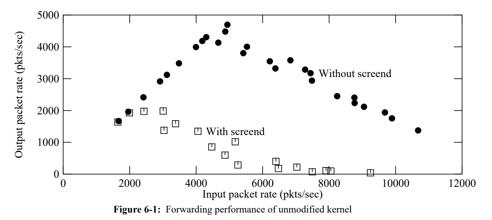
The graph shows router throughput (y) vs. input rate (x):
- Linear rise: CPU handles every packet immediately; throughput equals input rate.
- Plateau around 5000 pps: CPU bottleneck (10 Mbps network supports ~10–15 kpps; software processes ~5000 pps max).
- Performance drops beyond the peak: this is receiving livelock.
Receiving livelock: each arriving packet triggers an interrupt; each interrupt requires CPU time to copy the packet to memory. Under high load, interrupts arrive so fast that the CPU never gets to run the IP processing thread. Throughput collapses.
Livelock is a general phenomenon. It occurs whenever two concurrent related threads (often a producer and a consumer) have unequal priority, causing one to starve the other and reducing overall throughput. It is called livelock (not deadlock) because the system can potentially recover on its own.
Why doesn’t UART or disk I/O suffer from livelock? Because their interrupt handler and the processing of that interrupt are synchronous — each interrupt is fully handled before the next. The network uses a separate processing thread, enabling the producer-consumer decoupling that creates livelock risk (though the decoupling has benefits for bursty traffic).
Solution
Disable the NIC’s interrupts when the first interrupt fires (rather than copying the packet in the handler), and wake the IP processing thread. The IP processing thread runs in a loop, pulling up to a quota (e.g., 5 packets) per iteration and processing them. When the NIC is empty, re-enable interrupts and sleep.
Under high load: NIC and CPU run fully concurrently (NIC receives, CPU pulls from the ring — effectively polling). Under low load: the interrupt-driven wake-up pattern dominates. The system automatically switches modes.
The quota is critical: without it, the processing thread could spin copying packets indefinitely while never processing them, worsening livelock.
Linux’s NAPI uses this approach.
Meltdown
Overview
Meltdown is a micro-architectural attack described in a 2018 paper that exploits CPU implementation details to break OS isolation and read kernel memory from user space. It relies on:
- (At the time) Most OSes map the kernel page table into every user process’s address space for fast system calls.
- Speculative execution.
- Cache timing.
Meltdown has been patched in most OSes and CPUs, but studying it shows how difficult it is to fully verify the correctness of increasingly complex CPUs, and that similar vulnerabilities may remain undiscovered.
Speculative Execution
Speculative execution is a micro-architectural feature (not documented in the architecture specification):
r0 = <something> // 1
r1 = valid // 2 — load from memory (hundreds of cycles)
if (r1 == 1) { // 3
r2 = *r0 // 4
r3 = r2 + 1 // 5
} else {
r3 = 0
}- The load at line 2 takes many cycles; the CPU continues executing rather than waiting — this is out-of-order / speculative execution.
- At line 3,
validis not yet available → branch prediction: the CPU guesses (e.g., predicts theifbranch) and executes lines 4–5 speculatively. - If the prediction was wrong, the CPU rolls back the speculative results via register renaming and other mechanisms.
Key detail: if r0 is a virtual address with a valid PTE but insufficient permissions, the CPU does not raise the page fault immediately during speculative execution. It waits until the instruction is retired (its outcome is final). “Retired” means:
- An instruction is retired when it is confirmed to execute and its effects are made architecturally visible, or when it is confirmed not to execute (rolled back).
- Instructions retire in order, so a later instruction cannot retire before an earlier one.
Therefore, at line 4, the CPU performs the load (even to a privileged address) and places the value in a temporary (renamed) register — it doesn’t raise the page fault yet because the branch at line 3 hasn’t retired. Furthermore, Intel CPUs (at the time) did not check PTE permissions before loading during speculative execution; AMD did check, and thus were not vulnerable to Meltdown.
Flush and Reload
Micro-architecture features are supposed to be transparent, but are not perfectly so: we can detect whether data is in cache by measuring access time. The flush-and-reload technique:
- Flush address
xfrom all caches (clflushon x86, or by reading enough other data to evict it). - Call
f(). - Record time (
rdtsc— reads the CPU cycle counter). - Load from address
x. - Record time again.
- If the elapsed time is small (e.g., < 50 cycles),
xwas in cache →f()must have accessedx.
The Meltdown Attack
// flush
clflush buf[0]
clflush buf[4096]
// expensive instruction to trigger speculative execution and delay retirement
<divide, etc.>
// Meltdown core
r1 = <target kernel virtual address>
r2 = *r1 // load: possible violation, but not yet retired → no page fault yet
r2 = r2 & 1 // extract lowest bit of the secret byte
r2 = r2 * 4096 // multiply by page size (> one cache line) to separate the two options
r3 = buf[r2] // load buf[0] or buf[4096] into cache depending on the secret bit
// eventually: retired — page fault from "r2 = *r1" is raised
<handle page fault> // register a SIGSEGV handler; continue execution
// reload
a = rdtsc
r0 = buf[0]
b = rdtsc
r1 = buf[4096]
c = rdtsc
// if b-a < c-b, buf[0] was cached → the secret bit is 0; otherwise it's 1Due to the complexity of modern CPUs and OSes, the attack succeeds with a relatively low probability. In some scenarios the throughput is only about 10 bytes/second.
Fixes
Software fix: stop mapping the kernel page table into user processes. This is called KAISER (in Linux: KPTI, Kernel Page Table Isolation). System calls now require a page-table switch, but Intel’s PCID (Process Context Identifiers, similar to RISC-V ASID) avoids flushing the TLB on the switch, keeping the performance penalty to about 5%.
Hardware fix: Intel modified the CPU to check PTE permissions before performing the speculative load.
With a hardware fix in place, the software fix is unnecessary. Linux can query which hardware fixes are present and skip KPTI accordingly.
RCU (Read-Copy-Update)
Modern computer performance depends on multi-core parallelism. But many operations share kernel data structures, so they are not fully concurrent. We explore this with a singly linked list example.
Read-Write Locks
A simple improvement over spinlocks: read-write locks. API: r_lock/r_unlock, w_lock/w_unlock. The internal counter n:
n == 0: unlocked.n == -1: one writer holds the write lock.n > 0:nreaders hold the read lock.
Acquiring the read lock:
r_lock(l):
while 1:
x = l->n
if x < 0:
continue
if CAS(&l->n, x, x + 1):
returnAcquiring the write lock:
w_lock(l):
while 1:
if CAS(&l->n, 0, -1):
return(CAS = Compare-And-Swap, similar to test-and-set.)
Problem 1: writer starvation — a continuous stream of readers can block writers indefinitely (addressable with additional mechanisms).
Problem 2: cache contention — multiple CPUs trying to increment n simultaneously all load n into their caches. Only one succeeds at CAS; the winner must then invalidate n in every other CPU’s cache, forcing them to re-read from memory before retrying. With m CPUs, the cost of all acquiring the read lock is O(m²).
The root cause: “parallel reads” still require a write to shared memory. We want reads to truly not write any shared state.
RCU
Assume one writer (protected by a spinlock) and multiple readers. Without any synchronization, problems include:
- In-place update to a struct field: readers see a half-old/half-new value.
- Insert a new node: if the head pointer is updated before the new node’s
nextis set, readers crash. - Delete a node: a reader currently traversing it may access freed memory.
RCU’s core techniques:
-
Never update in place. To update node E2 in
Head → E1 → E2 → E3: copy E2 to E2’, update E2’, set E2’→next = E3, then commit with one atomic write: E1→next = E2’. Readers see either E2 or E2’ — never a partial state. This limits RCU to data structures that support an atomic commit-write (e.g., singly linked lists; doubly linked lists don’t work directly). -
Memory barriers ensure the data writes precede the commit write:
e = alloc() e->val = xxx e->next = E3 // barrier E1->next = e // commit write -
Deferred reclamation. After commit, old E2 may still be in use by readers. RCU imposes two constraints:
- Readers must not hold a pointer to RCU-protected data across a thread switch (cannot hold a reference while yielding the CPU).
- Writers wait until every CPU has gone through at least one thread switch before freeing E2 — at that point, no reader can still hold a reference. Simplest implementation: briefly run the writer thread on each CPU; each execution constitutes a thread switch.
Linux RCU API
For readers:
rcu_read_lock(): set a per-CPU flag disabling voluntary scheduling (not interrupts). Per-CPU state avoids shared writes.rcu_read_unlock(): re-enable scheduling.rcu_dereference(p): marks the pointer dereference as RCU-protected; on most architectures, compiles to nothing.
For writers:
synchronize_rcu(): wait until every CPU has had at least one thread switch (blocking).call_rcu(fn, x): register a callbackfn(x); returns immediately. RCU internally tracks per-CPU thread switches and callsfn(x)once the grace period has elapsed.rcu_assign_pointer(pa, p): inserts a memory barrier to ensure the commit write comes last.
Example read:
rcu_read_lock()
e = head
while (e) {
e = rcu_dereference(e)
look at e->x ...
e = e->next
}
rcu_read_unlock()Example insert:
acquire(lock)
old = head
e = alloc()
e->x = ...
e->next = head->next
rcu_assign_pointer(&head, e)
release(lock)
synchronize_rcu()
free(old)Summary
RCU achieves high-concurrency reads by not requiring any shared write during reads, and enables writer-reader concurrency by deferring reclamation until a grace period — after all current readers have passed a safe point.
RCU is a major success in Linux and a significant contributor to its scalability. But it is not a silver bullet:
- Requires data-structure support for atomic commit writes.
- Readers cannot yield/sleep while holding an RCU reference.
- Makes writes slower.
- Does not guarantee all readers see the new value immediately after a write.
- Requires frequent thread switches and the ability to observe them.
Other synchronization primitives exist (e.g., sequence locks allow in-place updates without reader locks, but are more complex and more restrictive). Some mechanisms perform better under high load, worse under low load. In distributed systems, the complexity grows further. Synchronization is a vast and ongoing field of research.
原始笔记写于 2022 年 2 月至 5 月，学习 MIT 6.S081 课程期间。
简介
平衡的艺术
除了一般的性能、稳定性要求之外，操作系统需要在许多矛盾的需求间取得平衡。包括：
- security（permission system, access control system） 和 共享（sharing） 和 程序员的自由
- 接口需要简单方便，易于记忆和使用 和 接口需要功能足够强大和全面
- 需要满足在多种机器上使用，包括大型服务器和小型嵌入式机器
优秀的操作系统，如Unix，往往精心选择提供一些简单的接口，这些接口功能独立，趋向于相互交互，从而可以方便地完成更多任务。当然，这样的接口在你并不熟悉它的时候可能会显得比较奇怪。见下段。
fork, exec, wait
从理论上，fork 会复制整个内存内容，它会返回两次。
exec 会使用目标程序的内容替代当前进程的内存，因此不会返回。但是，exec 会保留当前的文件描述符表。
wait 会等待任何一个子进程结束，可以得到其 pid。如果调用时没有子进程，则会立刻返回 -1 表示错误。Unix 的风格就是 exit(0) 表示正常，但对于一般函数，表示错误的往往是 -1 。
一方面，思考：为什么要将 fork 和 exec 拆开？
fork 和 exec 的间隙，提供了重定向的可能（或者说提供了非常简单的实现的可能）：在 fork 之后，exec 之前，修改文件描述符表。
另一方面，由于很多情况下，fork 之后 就是 exec，完全复制一份内存再立刻替换掉显得有些浪费。经典的优化是 copy-on-write fork。这种方式会消除 fork 的几乎所有的明显的低效，而只拷贝执行exec所需要的内存（对于内存实行懒拷贝）。
其他
-
QEMU是一个模拟器，也可以说是一个虚拟机监管器（Virtual Machine Monitor, VMM）。它可以模拟硬件。
-
文件描述符本质上对应了当前进程的一个表单（ file-descriptor table）。表单的key是文件描述符，value是inode。这个表单在fork中会得到继承。
-
Unix最早的用途是给多个用户分时复用机器，用户通过Shell与机器交互
-
陷入内核在 RISC-V 中对应的指令是 ecall。这个特殊的指令将控制权转给内核。之后内核检查进程的内存和寄存器，得到参数，从而选择执行什么动作。
-
open会返回当前进程未使用的最小文件描述符序号。因此如果 close 了 stdin，再 open 一个文件的话，它一定会替代 stdin 的 0 描述符。
组织结构
操作系统的必要性
如果操作系统的目的仅仅是抽象硬件，使得上层应用的编程更容易，那么操作系统的种种功能完全可以通过库的形式出现，而事实上，确实有部分嵌入式系统是这么实现的。这说明，操作系统在大部分场景的必要性，需要通过其他方面来论述，这就包括了：隔离与防御。
如果操作系统的功能仅仅以库的形式出现，这就说明对底层的封装不是必须的：用户可以使用库，也可以不使用库直接控制硬件。而操作系统的一大意义就是通过将用户程序和底层硬件强制隔离（通过抽象成文件操作等），从而限制用户程序的自由，保护系统。而保护系统这个目标，显然在大部分场景下，即：
- 程序之间相互不信任
- 可能存在恶意的或者有bug的程序
是必须的。这就说明了操作系统这个形式的必要性。
当然，操作系统的隔离并不只是隔离硬件与用户程序，还包括隔离一个程序与另一个程序等等。
硬件支持
这种强制隔离只靠操作系统在软件层面是不能实现的。大部分的硬件架构，都支持两大隔离、保护方式：
- kernel/user mode。RISC-V 支持三级模式，还有一级 machine mode。另外在 RISC-V 中 kernel mode 称为 supervisor mode。
- 虚拟内存（page table形式）
至于为什么这两部分是必须需要硬件支持的，别的功能为什么不寻求硬件支持，可能有复杂的证明和权衡。
硬件支持了不同模式，还需要支持从一个模式切换到另一个模式。在 RISC-V 中，有一个 ecall 指令，支持从 user mode 转到 kernel mode. 具体来说，ecall 有一个数字参数，表示想要调用的 system call，具体对应关系定义在了 kernel/syscall.h，例如：
- #define SYS_fork 1
- #define SYS_exit 2
- #define SYS_exec 7
如果在 user mode（在硬件中有 bit 指示）尝试执行 privileged instructions，指令不会得到执行，而且会通过 trap 进入操作系统的控制。
宏内核与微内核
一些概念：
- 在 user mode 下运行的程序只能执行 user-mode instructions，这也称为该进程目前在 user space 中运行
- 在 kernel/supervisor mode 下运行的程序可以执行 privileged instructions，这也称为该进程目前在 kernel space 中运行，也就是在 kernel 中。
- 内核有时候也被称为可被信任的计算空间（Trusted Computing Base），在一些安全的术语中也被称为TCB
操作系统具有多个子模块，包括文件系统，虚拟内存，进程管理等等。这些模块是否都应该在 supervisor mode 下运行，即是否都应该加入 kernel，不同的实现有所区别。
宏内核（Monolithic kernel）：全部的操作系统基本功能模块运行于内核。宏内核的优点是各个模块易于协作共享，性能高，而且设计起来也比较简单，不需要考虑哪些部分要放在内核，哪些部分不要。缺点是由于有大量运行于 supervisor mode 下的代码，出现 bug 的几率更大，而在 supervisor mode 下出现的错误可能是致命的，只能依靠重启。
微内核（Micro kernel）：在kernel mode中运行尽可能少的代码。在这种设计下，内核往往只有非常少的一些模块：IPC（Inter-Process Communication） 或 Message passing；非常少的虚拟内存的支持（可能只支持了page table）；分时复用CPU的一些支持。微内核中一般通过消息来实现传统的系统调用：
- 假设我们需要让 Shell 与文件系统交互，比如 Shell 调用了 exec，那么 Shell 会通过 IPC 发送一条消息给内核
- 内核会查看这条消息并发现这是给文件系统的消息，于是把消息转发给文件系统
- 文件系统会完成它的工作之后会通过 IPC 系统向内核回复消息，告知 exec 的结果
- 最后内核再将这条消息发送给Shell
可以看到，现在，对于任何跨模块的交互，都需要 2 次用户空间<->内核空间的跳转，而明显宏内核只需要一次。因此，微内核的性能是其主要的问题。
而且，正如之前所述，在一个类似宏内核的紧耦合系统，各个组成部分，例如文件系统和虚拟内存系统，可以很容易的共享 page cache。而在微内核中每个部分之间都很好的隔离开了，这种共享更难实现，使得微内核的性能更难提高。
出于历史原因大部分的桌面操作系统是宏内核，如果你运行需要大量内核计算的应用程序，例如在数据中心服务器上的操作系统，通常也是使用的宏内核。大多数的Unix操作系统实现都是宏内核。
微内核，包括 Minix，Cell，QNX，L4 等，在嵌入式系统中得到广泛应用。
QEMU的使用
QEMU如何进行对硬件的模拟？QEMU为每个 CPU core，都写了一个 for 循环。对于读取到的指令，操作其程序中的变量而非实际的寄存器。
QEMU类似 Bochs，速度比 Bochs 快但没有内置的 gdb。因此需要通过其提供的 remote GDB debugging stub 连接 gdb 进行调试。
启动QEMU的指令：
qemu-system-riscv64 -machine virt -bios none -kernel kernel/kernel -m 128M -smp 3 -nographic -drive file=fs.img,if=none,format=raw,id=x0 -device virtio-blk-device,drive=x0,bus=virtio-mmio-bus.0- -machine virt：指定qemu模拟的硬件，virt 表示 generic virtual platform，并不是一个具体的机器型号，但一般可以满足虚拟的要求，包括一个RAM，一个带有启动程序的ROM，一个磁盘等
- -kernel：将在QEMU中运行的程序，这里是
kernel/kernel - -m：虚拟机内存大小
- -smp：CPU核数
- -drive file=：指定使用某个磁盘镜像文件，这里是
fs.img
页表
地址空间
地址空间（address space）可以理解为一个进程可以使用的虚拟地址的范围及其结构，这个结构包括了一个进程自己的 text, data, stack 等。让各个进程有自己的地址空间，是实现隔离性的一种方式。
xv6 中，有两种地址空间的分布：内核地址空间 和 用户地址空间。
kernel address space 与 物理内存 的映射关系：
user address space：
注意几点：
- free memory 直接映射到的一段物理地址，就是所有剩下的内存，所有用户进程所占用的内存事实上就是这一段空间
- trampoline 是一段内核代码，它指向的地址其实从 kernel text 也可以直接映射找到
- 正是由于 kernel text 和 kernel data 直接映射到物理内存，所以开启页表后程序内核还能继续顺序执行
- xv6 中的 stack 不会扩展，只有固定的一个页表大小
- 每一个用户进程都对应一个 kernel stack（和一个 guard page），xv6 中最大进程数 NPROC 为 64，所以实际上 xv6 在 main 中初始化时就已经建立好了 64 个 kernel stack
- kernel text 是由之前的汇编启动代码等加载到 0x80000000 的
- 0x80000000 下面是一些内存映射I/O（MMIO），包括：
- PLIC（Platform-Level Interrupt Controller，平台级中断控制器）
- CLINT（Core Local Interruptor，核心本地中断器）：仅在 M mode 中使用，所以实验中用户进程的最大虚拟地址可以到 PLIC 而非 CLINT
- UART0（Universal Asynchronous Receiver/Transmitter）：负责与显示器交互
- VIRTIO：负责与磁盘交互
地址翻译
首先，xv6 对应的架构是 RISC-V 中的 Sv39 分页机制：
- 64 位虚拟地址中的低 39 位被使用
- 39 = 9 + 9 + 9 + 12，表示三级页表和 12 位（2^12 = 4096) offset
- PTE 每条占据 8 bytes，即 64 位。其中，高 10 位未使用，低 10 位是各个 flags，中间 44 位是 PPN
- 每个页表占据一页，4096 / 8 = 512，故每个页表有 512 个 PTE
- 修改页表后，os 需要指示硬件清空 TLB：sfence_vma
- U 位如果没有设置，一般情况下 RISC-V 的内核无法访问该页。准确来说，在这种情况下是否可以访问是由 sstatus 寄存器中的 SUM 位决定的，而一般情况下 SUM 位为 0，因此无法访问。
MMU 硬件主要包括两个部分：TLB 和负责 Translation Table Walk 的硬件部分
启用页表后，cpu 发出一个 va，会经过：
- L1 cache 使用 va，每个条目都保存了 va，perm 和 data。若 va，perm 均满足，则可直接返回；否则，
- va 发至 MMU，进行 TLB 查询；若成功，则直接获得 PTE；若失败，则 walk 获得 PTE，并更新 TLB
- 使用 pa 查询 L2 cache，L2 cache 每个条目都保存了 pa 和 data，若 pa 满足，则返回；否则，
- 使用 pa 至主存查询，返回
xv6 中，kernel/vm.c 中的 walk 函数也实现了 MMU 的walk 功能。需要软件实现一遍的原因是，在启用页表之前，就需要安装好一些 PTE；并且在启用之后，也需要安装其他 PTE. 换句话说，必须在硬件默认进行的 walk 之前，先软件 walk 一遍，安装好需要的 PTE，才能防止出现 page fault。
另外，在 kernel 和 用户空间 之间进行 copyin, copyout 时，也需要自己通过提供的用户进程的页表找到物理地址，而不能直接把用户进程的页表填入 satp。
问题
为什么 kernel stack 的 guard page 是不分配物理内存的，而用户地址空间里的 stack 下的 guard 是分配物理内存的？
实验中，panic 和 返回错误值分别表示什么？
函数调用
RISC -V 介绍
RISC-V 是唯一一个开源的指令集（意味着任何人都可以为其开发主板）。RISC-V来自 UC-Berkly 的一个研究项目，被许多公司选中支持。SiFive 就是一家基于 RISC-V 的硬件厂商。
RISC-V 区分了 Base Integer Instruction Set 和 Standard Extension Instruction Set。前者包含了所有的常用指令，如add，mult 等，是所有基于 RISC-V 的处理器都必须支持的部分。而各个处理器可以选择性地支持Standard Extension Instruction Set 的部分或全部。例如，一个处理器可以选择支持 Standard Extension for Single-Precision Float Point。这样，每个处理器可以声明自己支持哪些指令，而编译器可以根据这个信息来编译代码。
调用约定
- ra 一般在调用时由 JAL，JALR 等设置为 pc + 4
栈结构
- fp 的值是当前栈帧的顶部，而在 fp - 16 的位置存放着指向前一个栈帧顶的指针。这也是实现 backtrace 的原理。显然，当一个函数返回时，硬件会自动读取 Prev. fp 的值并更新 fp。
系统调用
流程
-
用户调用实际上会进行系统调用的函数 write(int, const void*, int)，于是像一般的函数一样，此时三个参数分别在 a0, a1,a2 中
-
usys.pl 产生的 uys.S 包含了 syscall stubs，如下：
li a7, SYS_write # 将系统调用的编号写入 a7 ecall ret -
ecall 会做三件事：
- 进入 Supervisor Mode（一是为了操作各个控制寄存器，二是 trampoline 和 TRAPFRAME 两个页的 U 位都是 0，必须进入 S Mode 才能访问）
- 关闭中断
- 保存 PC 至 SEPC
- 将 STVEC 装入 PC，STVEC 提前指向了 trampoline.S 中的 uservec，因此开始执行 uservec
-
uservec 做的事情如下：
-
交换 a0 和 SSCRATCH（sccratch 内提前写为 TRAPFRAME 的起始地址）。SSCRATCH 寄存器存在的目的主要就是由于刚进入 trap 处理流程时，所有寄存器都需要保存，所以必须有一个地方能够存放 TRAPFRAME 的基地址，才能进行（除非硬编码TRAPFRAME的绝对地址？但这个只是 xv6 的选择，硬件需要提供灵活性）。而一般指令都不能直接使用控制寄存器，所以说又需要一条交换指令。
-
保存各个寄存器的值到 TRAPFRAME. 这里 xv6 没有保存SEPC，而是将保存的动作推迟到了之后的 c 代码中。这里的重点是必须保存所有通用寄存器，因为一旦进入 c 代码，你就无法控制编译器到底会使用那些（覆盖哪些）
-
从 TRAPFRAME 中获取写好的内核页表基地址，usertrap() 地址等信息
-
修改页表为内核页表。由于 trampoline 代码在内核和用户空间的 map 是相同的，所以在切换页表后仍然可以执行，所以只能、必须在这里进行修改。
-
跳转到 usertrap() （c 函数）
-
-
trap.c 中的 usertrap() 主要做了如下几件事：
- 将 STVEC 改为 kernelvec.S 中的 kernelvec，因为现在已经进入内核，处理 trap 的流程会不同
- 保存 SEPC（在 ecall 时由硬件写入了发生 trap 时的 PC 值）至 p->trampframe->epc。此处需要保存的原因是，当该进程正在处理 trap 时，CPU 可能会切换到执行另一个进程，那个进程可能也进行了系统调用（或者其他会导致 SEPC 被更改的事情发生了，如异常），于是 SEPC 就被覆盖了。
- 若 scause == 8，表示进入 usertrap 的原因是系统调用。若是，进行：
- 检查是否被 kill
- epc += 4
- 开启中断
- syscall()
-
现在进入了 syscall.c 中的 syscall()，主要的内容只有一句：
p->trapframe->a0 = syscalls[num](); -
现在 a0 中保存了系统调用的返回值，执行流程回到了 usertrap() 中，又经历了一些检查后，调用了 usertrapret()
-
usertrapret() 做了如下几件事，可以看出和 usertrap 有一定的对称性：
- 现在正在 kernel 中，如果 STVEC 的值已经切换回了uservec，此时发生中断将有问题，因此先关闭中断
- 设置 STVEC 为 uservec
- 更新 TRAPFRAME 开头的那些值，以便下次访问时正确
- 之后会用到的 sret 指令的行为由 SSTATUS 控制：SPP 位为 0 指示希望切换到 User Mode，SPIE 位则控制了是否要打开中断。因此，修改这些位。
- 将保存的 epc 写入 EPC
- fn 是 userret 的指针，调用 fn(TRAPFRAME, MAKE_SATP(p->pagetable))，其实就是跳转至 userret 的时候让 a0 为 TRAPFRAME 地址，a1 为用户页表基地址
-
进入 userret，显然会和 uservec 有一定对称性：
- 换回用户页表
- 将 TRAPFRAME 中保存的寄存器值恢复，注意系统调用的返回值 a0 也在此时写入了
- 交换 sscratch, a0，这样 SSCRATCH 的值就又回到了 TRAPFRAME
- sret。sret 是进入用户空间的唯一方法，根据之前设置过的控制位，它做了如下几件事：
- 打开中断
- 回到 User Mode
- 将 SEPC 装入 PC
至此，一次系统调用就结束了，用户程序会在 a0 得到系统调用的 返回值，因此在它看来系统调用和普通的函数调用没有区别。
其他
为什么要把寄存器放在 TRAPFRAME 中而不是栈中？因为首先有的编程语言可能根本没有栈，那么 sp 就是一个无效的值；其次可能有的栈的格式内核可能无法理解（比如，以堆中的一些小块链表作为栈）。作为操作系统，我们不能假设用户内存的某个部分是什么样子的。
可以看到，系统调用的过程是比较复杂的，事实上真正的操作系统会对这块进行许多优化。例如，有的使用了**内存映射文件（memory-mapped file access）**机制，使得用户进程可以直接用虚拟地址访问文件，而不需要用系统调用读写。
myproc() 实际上会查找一个根据当前 cpu id 索引的数组，这个 hartid 是在 uservec 中从 TRAPFRAME 中读取并放在 tp 寄存器中的。
问题
为什么 xv6 在trapframe 中保存了 caller saved 的寄存器？
SEPC 可能会由于多线程被覆盖，那不是在 trampoline 的代码中就有可能切换后被覆盖了吗（即使中断被关了，但异常或者其他系统调用呢？）
是否可以在 uservec 的最后把 sscratch 和 a0 交换回去，这样就不需要 fn 的参数为 TRAPFRAME 了？
检查是否被 kill 的原因？
缺页中断
动态性
此前，我们知道使用虚拟地址 - 物理地址的映射，有两个主要的好处：
- 隔离
- 抽象
事实上，由于我们可以在 page fault 时编写 page fault handler 来做一些操作，页表映射实际上有一定的动态性。利用这一点，有了许多操作系统的常用优化，包括：
- lazy allocation
- zero-fill-on-demand
- copy-on-write fork
- demand paging
- memory mapped files
硬件支持
为了实现这些功能（并且能同时实现），硬件层面也有配合。当 page fault 发生时：
-
SCAUSE 会被写为：
- 12：指令执行引起的缺页中断
- 13：load 引起的缺页中断
- 15：store 引起的缺页中断
-
STVAL 会被写为引发缺页中断的 va
-
SEPC 会被写为引起缺页中断的指令的地址（这点是所有 trap 通用的、一样的）
-
PTE 标志位有两个 RSW 位（保留位），可以被 supervisor software (os) 使用
lazy allocation
没什么好说的，当用户进程调用 sbrk 扩大 heap 时，不分配实际的内存和页表，只是扩大 p->sz，而等到出现了缺页中断时再去分配。实验中，要注意比如 unmap 等对于这种还没有实际分配的页的处理。
zero-fill-on-demand
我们知道，编译器编译出可执行代码时，对于 BSS 区域（未初始化或初始化为0的全局变量或静态变量），只需要记录这个区域的大小，而不需要把内容（全是0）记在可执行文件中，以减小文件大小。
理论上，当把文件载入内存时，需要为这个BSS区域分配若干页的全0的页，但既然这些页都是0，内容相同，那么我们一开始就可以只分配一个物理页，内容全0，而把所有BSS区域的虚拟地址都映射到这个页。将这个页设为只读，所以一旦有指令试图写，就发生缺页中断（当然，可能需要改代码，因为可能原来的逻辑是发现标志位不对就直接抛错，就像在 lazy allocation lab 中的 copyin 等调用的 walkaddr 那样，并没有进入 trap），然后再把写的这页重新映射到一个新的物理页。
这么做的好处是：启动时使用的物理内存小了，而且 exec 启动更快
坏处是：这个优化不知道实际有多少情况是 BSS 区域写少读多的，实际效果不清楚，而且每次缺页中断开销并不小，包括了 trap 的几十个 ld，sw
copy-on-write fork
这个也很好理解。由于我们调用 fork 后面往往跟的就是 exec，fork 过来的父进程的内容往往全部浪费了，所以非常需要优化。方法是，fork 时，只复制页表结构，并将父进程和子进程的页表的 PTE 位都设为只读。一旦父进程或者子进程试图写某个地址，就发生缺页中断，这时候再进行实际的 copy。
可以发现，COW fork 的逻辑会更为复杂，而且我们已经看到这么多需要缺页中断识别的情景，我们需要分辨各个情况的方法。比如，RISC-V 提供了标志位的两个 RSW 位作为支持。
还有一些可以考虑的细节：
如何找到父进程？
对于级联的 fork 能否正确处理？
以及，父进程如果先于子进程退出会发生什么？一种方法可能是对每个物理页设置一个引用数，每次释放只是将 count - 1，直到 count == 0 才能真正释放。那么，这个计数值又应该记录在哪里？
demand paging
在 exec 时，直接不分配任何物理页，所有 PTE 的 V 位设为 0。这么做的话对于 OOM（out of memory）的情况，会有更好的处理：可以把某个页换出去，把需要的页装入内存。最常用的策略是 LRU，具体可以使用 PTE 的 A 位判断，当然操作系统需要每隔一段时间 clear 这个标志位；另外，一般选择 D（dirty）位为 0 的页换出，因为如果这个页被写过，有一定的可能性它会被再次写，那么就需要再把它换回来。
一方面，由于这个优化也发生在 exec 时，所以优缺点和 zero-fill-on-demand 类似；
另一方面，由于这个优化和 lazy allocation 一样，也是总结部分说的 ”先不存在型“，所以实际上上面对 OOM 的处理，lazy allocation 也可以做。
在实际的操作系统中，由于我们不想闲置物理页，所以事实上绝大部分内存都用于 buf/cache 了，因此一般来说一旦要使用新内存，就需要替换出去一些。
memory mapped files
Linux 中提供这个功能的函数叫 mmap。一般 mmap 的实现也是 lazy 的，不是直接将文件载入内存，而是先记录某段虚拟内存和某个文件的映射关系。这个信息通常在 **VMA（Virtual Memory Area）**结构体中，这样当发生位于VMA 记录的地址范围的缺页中断时，内核可以读取这部分文件内容并载入内存。
显然，这个优化会面对不少多个进程读写同一个文件的同步问题。
总结
可以看到，这里的大部分优化都是利用 page fault 时可以进行处理而在这里或那里 ”lazy“，以节约内存、节约可能不必要的操作、提高反应速度等。具体的，可以：
- 让某个东西先不存在，直到真的 access
- 让某个东西只读，从而在多个需要这些内容的地方共享之，直到发生写
另外，这些优化之间的关系是很多重叠的，具体实现的时候并不一定要分的非常清，就比如 demand paging 和 lazy allocation，如果后者也实现替换，而提前分配 PTE，其实基本上就被后者包括了。重点是 lazy 的思想，对于硬件需要如何做出哪些充分必要支持的分析证明，以及实际效用的衡量。
另外思考：为什么前面有的优化里要先设置页表结构，而有的，如 lazy allocation 则没有？只分配页表结构，而不分配实际内容，与不分配页表结构的区别在于：
- 前者包括了页标志位的信息，所以在这里由于从文件中读取的各个部分（text，data，stack）标志位是不同的（虽然 xv6 对于 text 和 data 好像没区分标志位），而像 lazy allocation 都是 heap。
- 如果先创建了页表结构，可以分辨出哪些 va 是绝对不正确的，而如果没有页表结构，那么需要更多的检查
当然，没有页表结构缺失的信息（如上面说的标志位，va 是否合法），应该也可以通过其他地方记录后判断。不过对于大部分情况，页表的使用频率很高，先分配一个页表结构并没有很大开销，还可以避免不少复杂度，因此先 eager 分配页表是个不错的选择。
中断
这里我们讨论的是外设中断，不包括时钟中断和软件中断。
特点
中断和系统调用相比，有几个特点：
- asynchronous：当中断发生时，interrupt handler 和当前正在这个 CPU 上运行的进程没有任何联系，而系统调用则是在当前进程的语境下进行的
- concurrency：中断的生成和 CPU 的运行是并发的（当然，各个硬件中断之间也是并发的）。另外，之后会了解到的，中断处理的 top 和 buttom 部分也是并行的。
- program device：大部分硬件可以对其进行写入以修改其行为，在使用一个硬件之前，需要进行配置等
硬件
所有连接到主板的设备，产生的中断都到达 PLIC（Platform-Level Interrupt Controller）。PLIC 会将中断路由到某个 CPU 核，而如果当前所有 CPU 都在处理中断，PLIC 就会保留中断直到有一个 CPU 核可以处理。具体来说：
- PLIC 会通知所有 CPU 有一个待处理的中断
- 其中一个 CPU 会 claim 这个中断，则 PLIC 就不会再把这个中断发给别的 CPU 处理
- CPU 处理完该中断后，会通知 PLIC
- PLIC 不用再保存该中断的信息
事实上，PLIC 的功能是分发中断，但具体的分发逻辑是可编程的，比如，配置 PLIC 使所有核都可以收到中断信息，但只有一个核会 claim 该中断。
，硬件方面，RISC-V 的有许多相关的寄存器（每个核都有各自的一份控制寄存器）：
-
SIE（Supervisor Interrupt Enable）：其中 E 位针对外部设备中断；S 位针对软件中断（软件中断可能由一个CPU核触发给另一个CPU核）；T 位针对定时器中断。
-
SSTATUS（Supervisor Status）：除了通过 SIE 来单独控制特定的中断，还可以通过 SSTATUS中的一位控制所有中断。
-
SIP（Supervisor Interrupt Pending）：发生中断时，处理器可以通过查看这个寄存器知道当前是什么类型的中断。
-
SCAUSE，STVEC 等的作用就和之前说的所有 trap 类似。
可以预见，为了配置处理中断，需要配置设备，需要配置 PLIC，还需要配置 CPU，需要进行几个层面的配置。
驱动
驱动（driver）就是管理设备的代码，也是操作系统的一部分。在现实中，驱动代码加起来可能比内核更大。
大部分驱动都分为两部分：buttom 和 top：
-
buttom 部分通常是 interrupt handler，当一个中断发生，被 PLIC 发送到了某个 CPU 核，并且该 CPU 核 claim 了该中断，接下来 CPU 就会调用 interrupt handler 对该中断进行处理。注意到，这里的 interrupt handler 部分的运行和当前进程是无关的，这正是上面所说的中断的特点之一。
-
top 部分是调用的接口。对于 UART（Universal Asynchronous Receiver/Transmitter，通用异步收发传输器） 来说，主要就是 uart.c 中的 uartputc()，uartgetc() 等。
UART：UART 芯片通过串口发送数据bit，在线路的另一侧会有另一个UART芯片，能够将数据bit组合成一个个Byte。它的功能主要是传输。QEMU 中，模拟的这端 UART 芯片会连到另一个模拟的 UART 芯片，这个 UART 则连到了模拟的显示器，模拟的显示器使用了实际的终端进行输出。
通常来说，驱动代码中会有一块 buf，top 和 buttom 都对这块 buf 进行读写，就可以实现二者的解耦。
驱动代码对于硬件的编程是通过 memory mapped I/O 进行的。各类设备对应的地址区间是由主板制造商决定的，例如，我们的操作系统通过阅读 QEMU 模拟的主板的手册，可以知道 UART设备对应的物理地址是在 0x10000000 到 0x10001000 之间：
这规定了连到该主板上的 UART 类型的设备是通过这段地址访问的，但是这段地址中，究竟用到了哪些地址，各个地址代表什么硬件的寄存器，这是由某个具体的 UART 设备决定的。比如，我们的 QEMU 模拟的是 16550 型号，它的手册如下：
可以看到，THR 是一个用于保存数据的寄存器，每次写入后， UART 将该份数据（具体大小看硬件细节）传输完毕后，会发出一个中断，这时候才能写入下一个数据，否则可能会造成覆盖。当然，硬件内部可能也实现了一个缓冲队列等，但这里要有这个意识。
初始化设置流程
-
entry.S 在 machine mode 下跳到了 start.c，通过向 medeleg 和 mideleg 寄存器写入 0xffff，设置了所有中断和异常可以由 supervisor mode 处理。接着，设置了 SIE 寄存器，使得该 CPU核可以接受外部、软件和定时器中断。最后，初始化定时器。
RISC-V 默认的所有 trap 都需要在机器模式下处理，当然机器模式处理程序可以使用 MRET 指令将陷阱重定向回适当的模式级别。为了提高性能，RISC-V 提供了异常中断委托机制，用 medeleg 和 mideleg 寄存器（Machine Trap Delegation Registers）来指定某些异常和中断类型可以直接由某一较低的模式来处理。
-
start.c 使用 mret 来到 main.c，最先进行的就是 consoleinit()，其中有：
-
uartinit()：配置 UART 芯片，具体来说是关闭中断，之后设置串口的传输速率，设置字符长度为 8 bit，重置并设置 FIFO，最后再重新打开中断。运行完这个函数之后，UART 就可以并可能生成中断了。但是回想我们之前对配置的说法：配置了 UART，配置了 CPU核，但我们还没有配置 PLIC，所以目前中断不能被CPU感知。
-
设置好 UART 后，就将设备数组 devsw 的内容设置好：
devsw[CONSOLE].read = consoleread; devsw[CONSOLE].write = consolewrite;
-
-
上面说到还需要配置 PLIC，事实上 main 确实在其他几个 init 之后就调用了 plicinit()。PLIC与外设一样，也占用了一个I/O地址（0xC000_0000）。函数通过写这个地址，配置 PLIC 接受 UART0 和 VIRTIO 的中断。
-
plicinit() 之后是 plicinithart()。plicinithart() 用于声明当前的 CPU 核对来自于UART和VIRTIO的中断感兴趣，并且还设置所有 CPU 核的优先级别相同（应该是影响 PLIC 的分发逻辑）。plicinit() 是由0号CPU运行，而每个CPU的核都调用 plicinithart()，main 中有 if-else 的结构来完成这个根据 CPU 核不同操作不同的逻辑：
if(cpuid() == 0){ // ... } else { // ... } -
到这里，我们完成了各级的中断设置，所以只需要最终打开 SSTATUS 中的中断总控制位即可。main 最后的 scheduler() 中调用了 intr_on()，intr_on() 设置了 SSTATUS，打开了中断。
top 部分流程
下面看看 shell 如何从调用 write() 到显示器实际打印出 ‘$ ’ 两个字符。
-
main() 中调用了 userinit()，userinit() exec 了第一个用户进程 user/init.c，首先获得 3 个文件描述符：
if (open("console", O_RDWR) < 0) { mknod("console", CONSOLE, 0); open("console", O_RDWR); } dup(0); // stdout dup(0); // stderr. 现在文件描述符 0 1 2 都指向 console -
之后 fork，exec 了 Shell，Shell 调用 fprintf() 向文件描述符 2 打印提示符“$ ”，最终来到系统调用 sys_write()，并且每次都是 write 一个字符。sys_write() 完成了参数检查，并调用 argfd() 获取了当前进程语境下该文件描述符对应的 struct file 的指针，最后调用 file.c 下的 filewrite()。
-
filewrite() 首先会判断文件描述符的类型。之前我们调用 mknod() 生成的文件描述符属于设备（f-> type == FD_DEVICE），而对于设备类型的文件描述符，调用这个设备对应的 write 函数，方法就是用 f->major 去 index devsw 数组并调用其中的 write 函数指针。这里我们调用到的是 console.c中的 consolewrite()。
-
consolewrite() 先通过 either_copyin() 将参数复制进来，之后调用 uart.c 中的 uartputc() 。uartputc() 才负责实际将字符写入给UART设备。可以说，consolewrite() 是我们的 UART 驱动的 top 部分。
-
uart.c 有几个全局变量，包括一个 buf，还有一个读指针，一个写指针，构成了一个循环队列，uart.c 下的主要函数运作逻辑是生产者 - 消费者模式。例如，我们调用的 uartputc() 首先检查 buf 是否已满，若满则 sleep；若不满，则向 buf 写入这个字符，然后调用 uartstart().
-
uartstart() 这个函数非常重要，top 部分和之后会说明的 buttom 部分都调用了它。它负责通知设备执行操作。具体逻辑是：在 buf 不空，UART 的 THR（transmit holding register）不满的情况下，向 THR 写入该字符（写入了 va 直接映射的 pa，pa 连接到了 THR 寄存器）。
-
发送完成后直接返回，最终从 sys_write 返回，而当 UART 设备实际将该字符送至另一端后，将会发出中断提示完成。
buttom 部分流程
- 当一个中断发生，PLIC 会将其路由给一个特定的 CPU 核，并且如果这个 CPU 核设置了SIE寄存器的 E 位（响应外部中断），则会发生和 ecall 类似的过程，包括保存 PC，关闭中断等，最后进入 trap handler。
- trap handler 调用 devinter()，该函数检查 trap 原因为硬件中断还是定时器中断，这里是硬件中断。之后，调用 plic.c 下的 plic_claim() 。plic_claim() 中，当前CPU核会告知 PLIC 自己要处理中断（==这里如何向 PLIC claim 有点看不懂，只是读了一个物理地址，硬件是如何防止其他 CPU 也handle 这个中断呢？硬件不能检测到读寄存器这个行为吧？而且读的物理地址根据 hartid 不同了，但事实上 PLIC 并不需要知道哪个核 claim 了吧？==），并将中断号返回。得到中断号后，我们调用对应中断的 bottom handler，这里是 uartintr()。
- uartintr() 被调用有两种可能，一种是表示有输入到达，一种是表示上一次输出结束，可以接受更多输入。因此，它先循环处理到达的输入，然后调用 uartstart() 已处理更多的输出。这里，我们没有输入到达，所以直接来到 uartstart()，处理下一个很可能已经被写入 buf 的 ‘ ’ 字符。可以看到，top 部分和 buttom 部分解耦了。
对于输入导致的中断处理流程不必赘述。
轮询
随着中断处理越来越复杂，如果一个设备在高速的产生中断，处理器将会很难跟上。假设我们安装了一个千兆网卡，这个网卡收到了大量的小包，而网卡每秒可以生成1.5Mpps，这意味着每一个微秒，CPU都需要处理一个中断。
解决方案是，一方面，硬件内进行更多的工作，减轻CPU的处理负担。
另一方面，可以使用 polling。显然：对于一个慢设备，中断效率高；对于一个快设备，轮询效率高。因此一些精心设计的驱动可以在 polling 和 Interrupt 之间动态切换（例如 Linux 对于网卡的 NAPI 接口）。
锁
多核背景
为什么需要锁？根本原因是，自 2000 年左右，CPU的时钟频率就没有再怎么增加，因此 CPU 的单线程性能达到了一个极限，而由于市场等的需要，CPU 的性能还需要提高，晶体管的数量还在按照摩尔定律增长，而方法就是增加 CPU 核的数量。
那么，为了利用这样的硬件，多线程编程变得必须。而锁是保证多线程程序正确性的一种最常见的方法。
竞态条件
race condition 的定义是：一个内存地址被两个及以上的进程并发访问，而至少有一个操作是写操作。
什么时候需要锁？一个粗糙的答案是：当有可能发生 race condition 的时候，从代码层面说，就是同一个数据结构可能被多个进程读写的时候。但是，这条规则并不完善，特别是，有时锁应该和操作而不是数据关联：
- 有时太粗糙：printf 输出，虽然没有共用数据，但不加锁会让输出可能交替。
- 有时太精细：有时锁不应该
不变性
从不变性（invariant）的角度来说，锁存在的目的是保持不变性。例如，从逻辑上一个链表的 invariant 包括：头指针指向第一个结点等。但是当头插法进行的时候，这个 head 的指向有一小段时间是不正确的，那么为了让外界看不到这种错误的状态，我们就需要加锁。
死锁
为了防止死锁，我们需要为相关联的锁进行排序。例如，如果两个函数都用到了 A，B（锁），那么它们加锁的顺序不能是一个 A 先 一个 B 先。但是，这条简单完善的规则很容易变得复杂，这导致了两个无奈：
- 理论上，锁加的越精细，性能会越好（此处不考虑加锁和释放的消耗），但是锁多了过于复杂，人力难以检查潜在死锁
- 更重要的，这是对模块化的理想世界的根本破坏。理论上，我们希望把锁放在函数的内部，但这个顺序的要求，需要我们知道函数内部使用了什么锁。
但这条规则从数学上挺简单的，所以查了下果然有死锁检测程序
开发实践
可以看到，说清之后，我们发现锁的使用是很难完美的。一般开发的流程是：先使用 coarse-grained lock 完成开发，测试是否可以使用多线程并且性能达标。如果可以，那么也许并不需要着急地重构细化锁。
自旋锁实现
自旋锁的实现==其实有多种方法==，但是最常见的方法是依赖于一个特殊硬件指令的原子性，这个指令会保证一次 test-and-set 操作的原子性。
在RISC-V上，可以使用的指令是 amoswap（atomic memory swap）。这个指令接收 3 个参数，分别是 address，寄存器 r1，寄存器 r2。这条指令会先锁定住 address，将 address 中的数据保存在一个临时变量中（tmp），之后将r1中的数据写入到地址中，之后再将保存在临时变量中的数据写入到r2中，最后再对于地址解锁。
对于这个指令，不同处理器的具体实现各不相同。一种可能的实现是==？没咋懂==：
- 多个处理器共用一个内存控制器，内存控制器可以支持给一个特定的地址加锁，然后让一个处理器执行几条指令，然后再解锁。
- 如果内存位于一个共享的总线上，那么需要**总线控制器（bus arbiter）**来支持。总线控制器需要以原子的方式执行多个内存操作。
- 如果处理器有缓存，那么缓存一致性协议会确保对于持有了我们想要更新的数据的cache line只有一个写入者，相应的处理器会对 cache line 加锁，完成两个操作。
xv6 acquire 实现：
push_off(); // 关闭中断，但使用的是“栈”，因为可能有多个嵌套锁，所以关需要记录层数
if(holding(lk))
panic("acquire");// 不可重入
// 核心 C 函数，在 RISC-V 上一般编译出来使用的就是 amoswap
while(__sync_lock_test_and_set(&lk->locked, 1) != 0)
;
// 内存屏障（memory barrier），也叫同步指令，指示编译器和处理器，禁止越过这里重排序。
__sync_synchronize();
lk->cpu = mycpu();补充：
- 需要关闭中断的原因是：并发不止是不同CPU之间的并发，还可能是 同一 CPU上中断和普通程序之间的并发。例如，中断程序可能也想要获取同一个锁，如果允许在持有锁的时间内获取中断，则会发生死锁。
- 重排序只保证在单线程情况下不改变结果。这里的 __sync_synchronize() 是防止，例如，acquire() 之后的 critical section 中的内容重排序。同样地，release() 中显然也需要放一个屏障。
- 从最后一句可以看到，acquire 准确说是某 CPU 去获取某个的锁，主语是 CPU。
lock-free
除了加锁，还有更为精妙的方法来解决 race condition 的问题，这样的程序叫做 lock-free program，但编写起来也更为困难。
For “lock-free”, the idea is that you do your work somewhere else and then attempt to atomically commit this work to “visible state”, and retry if you fail.
例如，对于 kalloc，kfree 使用的 freelist，也许可以让每个 CPU 有一个自己的链表，这样直到自己的链表不够了，才需要和其他 CPU 的链表交互。
线程（进程）调度
首先，xv6 是不支持一个进程包括多个线程的，因此下面所说的线程和进程其实是同一个东西。
多线程
首先，为什么需要多线程（进程）？这是一个老生常谈的问题：
- 硬件必然是往多核发展，需要多进程来利用硬件
- 计算机确实需要多进程来完成任务，如听歌的同时上网
- 某些时候，多线程可以让程序的结构变得简单优雅，比如之前的素数筛实现
其次，通过上面的作用我们也发现了，多线程其实有两种并行：
- 多个 CPU 上分别运行
- 同一个 CPU 可以在多个进程间切换
再次，实际上还有一些其他的方式可以支持在一台计算机上运行多个任务，包括 event-driven programming 和 state machine。在所有的支持多任务的方法中，使用线程可能并不是最有效的方法，但是多线程技术基本上是最方便、对程序员最友好、且可以用来支持大量不同任务的方法。
思路与框架
停止一个线程的运行并启动另一个线程的过程通常被称为线程调度（Scheduling）。实现上，xv6 为每个 CPU 都创建了一个线程调度器（Scheduler）。
先来看看多线程在实现上有哪些难点：
- 想要切换，肯定要先从用户程序拿到控制权，执行用于线程调度的内核代码。在用户程序有可能是恶意的情况下，显然不能依赖用户程序自己主动出让控制权。这被称为 pre-emptive scheduling，而与之相反的是voluntary scheduling，后者一般只在一些互相信任的环境下会考虑使用，比如一些嵌入式的场景。
- 其次，到底如何进行线程调度，并且让这个切换的过程对用户程序保持透明，使其觉得自己正在独占 CPU？可以想象到，肯定会涉及到对当前线程状态的保存、对将要运行的线程的状态的恢复。
- 最后，多个 CPU 可能会同时进行线程调度，如何设计锁以避免并发冲突？
在 xv6 以及大部分 os 中，是通过定时器中断，以 pre-emptive scheduling 的方式让内核拿到控制权；而接下来内核则以 voluntary scheduling 的方式，代表正在运行内核代码的该线程，主动让出控制权给调度器：定时器中断，来到 usrtrap() 中，发现是定时器中断引发的 trap，于是调用 yield()；yield() 最终调用 sched()。
对于 xv6 来说，实际上线程切换不是简单地从一个用户进程的内核来到另一个用户进程的内核，而是（这里的线程理解为一段有状态的代码）：
- 第一个用户进程的内核线程，通过 swtch 切换到调度器线程
- 调度器线程通过 swtch 切换到第二个用户进程的内核线程
如图：
流程
-
定时器中断，进入 usertrap()，进入 yield()。yield() 先获取当前进程的锁，然后修改当前进程状态：RUNNING -> RUNNABLE，最后调用 sched()：
void yield(void) { struct proc *p = myproc(); acquire(&p->lock); p->state = RUNNABLE; sched(); release(&p->lock); } -
sched() 先进行了好几个些合理性检查，如果发现异常就 panic。然后，调用 swtch(&p->context, &mycpu()->context)，进入到位于 swtch.S 中的 swtch()
-
swtch 的第一个参数是 old context，第二个参数是 new context。它将当前的 callee-saved 寄存器，sp，ra 保存至 old，并从 new 中恢复这些寄存器至当前 CPU 硬件中。最后，调用 ret，返回到 ra 所指示的位置继续执行。这里，ra 是 new context 中保存的 ra，也就是传入的 mycpu()->context，即调度器线程中。准确来说，就是位于 proc.c 的 scheduler() 的 swtch() 语句，从该函数调用中返回出来：
// 简单的轮询调度（round robin） for(p = proc; p < &proc[NPROC]; p++) { acquire(&p->lock); // ... if(p->state == RUNNABLE) { p->state = RUNNING; c->proc = p; swtch(&c->context, &p->context); // 从这个 swtch() 返回出来 c->proc = 0; } release(&p->lock); // ... }scheduler() 函数就是一个永远不会返回的函数。在 main() 函数的末尾，每个 CPU 上的内核都会进入该函数。该函数负责一轮轮遍历所有的进程，选择一个，通过 swtch 运行该进程；当该进程像上面那样，由于定时器中断等原因，再次调用 swtch 的时候，就会从 scheduler() 里的那一行 swtch 里返回。
-
接下来关注一下 swtch 切换附近的其他处理，包括状态的修改和锁的使用。观察 3 里的代码，在调度器实际切换到用户进程之前，设置了
c->proc = p，指示当前 cpu 正在运行的进程为 p。而现在，因为我们已经停止了该进程的运行，所以从 swtch 出来后，就要将 c->proc 设置为 0。 -
锁的使用更为有趣。观察到，yield() 的开始获取了锁，结束释放了锁；而 scheduler() 中，遍历到某进程就会获取锁，遍历下一个之前就会释放锁（中间可能，也可能没有，调用 swtch 运行该进程）。但是，这俩对 acquire() 和 release() 是“交叉”地匹配的！考虑这样一个完整的情况：scheduler() 获取了某进程的锁，并判断可以运行，于是调用 swtch；假设该进程之前就由于定时器中断而进入到 yield()，进入到 sched()，那么它将会从 sched() 的 swtch 中返回出来，然后根据调用栈，返回到 yield()，而在 yield() 中，sched() 的下一句就是释放锁。而将时间往回推一点，当这个进程在遇到定时器中断进入 yield() 后获取了锁，实际会在切换到 scheduler()，从其中的 swtch 返回后，释放锁。正是这样的“交叉”的锁的获取和释放，保证了进程切换的原子性。
除了这一点，线程切换时还有一个有关锁的限制必须满足：除了该进程的锁，不能持有任何其他锁。假设我们在一个单核计算机上，进程 P1 持有了一个 uart_tx_lock，而后切换到调度器，调度器线又切换到了进程 P2。此时，如果 P2 也想获取这个锁。由于锁正被 P1 持有，P2 的 acquire() 会卡在循环里，而且由于 acquire() 开头就会关闭中断，所以也没有任何机会由于定时器中断而切换回 P1 以释放锁，这就是死锁。当然，多核的情况死锁依旧无法避免：只要在每个核上模拟这个过程即可。复习一下，为什么 acquire() 需要在一开始就关闭中断？因为普通程序与中断程序之间也有并发，如果在临界区被中断了，中断程序如果也尝试获取该锁，就会发生死锁。
首次调用 swtch
上面分析的情况确实是大部分的情况。当然，调用 sched() 的可能不是 yield()，还可能是 sleep() （还有 exit()，但是 exit() 比较特殊），但它们调用完 sched() 的前后都会获取/释放进程的锁，所以都差不多。
最大的问题显然出现在，当某个进程首次开始运行时会发生什么？一个进程从何处开始运行？它调用 swtch 会发生什么？
- main() 中，如果当前 CPU 是 0，会调用 userinit() 运行第一个用户进程，而后才是 scheduler()。userinit()，以及 fork，都会调用 allocproc()。allocproc() 会找到一个 UNUSED 的进程，初始化好一个用户进程的地址空间，然后重点来了：
p->context.ra = (uint64)forkret; // 也就是说，一旦 swtch 到该 context，就会从 forkret() 开始运行
p->context.sp = p->kstack + PGSIZE; // sp 初始化为当前进程的 kstack 的顶部- allocproc() 返回到 userinit()，userinit() 先分配了 initcode 所需要的页面并加载之；然后，将 trapframe 中的 epc 和 sp 均设置好：epc 为 0，sp 为 PGSIZE。最后，设置了 p->state = RUNNABLE。
- 从userinit() 返回，就来到了 scheduler()。当 scheduler() 遍历到该进程，发现是 RUNNABLE，就会调用 swtch，于是来到 ra 所指示的 forkret() 中
- forkret() 首先释放调度器之前获取的锁。如果不是第一次调用（如果是第一次，需要初始化文件系统），就来到最后的usertrapret()。这个函数在讲中断时讲过，一般作用是 trap 中返回。不过，该进程其实才刚刚运行，根本没出过内核，所以这里是一个假的返回用户态，其实是第一次进入用户态。（伪造返回的方法在 os 中很常见。）usertrapret() 会从 trapframe 中恢复 pc，sp 以及许多其他寄存器，由于 userinit() 设置过了 epc 为 0，所以最终能跳到用户的第一个指令中，开始执行。当然，如果是 fork 的话，fork 会复制父进程的 trapframe，所以会从调用 fork 的后一句开始执行。
细节讨论
为何线程调度的过程中（除了进入内核时会保存）没有保存、恢复 pc？要知道，swtch() 其实就是一个普通的 c 函数的调用。所以，当 swtch 最后执行 ret 指令，就是普通 c 函数调用返回，就是从 ra 寄存器获取返回地址然后加载入 pc，因此没必要保存 pc 了。这也是为什么切换的时候 context 只需要保存 callee-saved 的寄存器值的原因，因为 c 编译器会在调用前把 caller-saved 的寄存器的值保存到栈上。对比之前伪装成普通 c 函数调用的系统调用，它就需要保存所有寄存器。
trapframe 不是已经保存了更多的寄存器吗，为什么还需要一个 context？因为，trapframe 中保存的是用户程序运行时的寄存器，而 context 中保存的则是某进程在内核的寄存器状态，二者不相同。
context 应该保存在哪？我们知道，每一个内核线程（这里指一段程序）都有一个 context 对象，内核线程实际上有两种：
- 每一个用户进程有一个对应的内核线程，它的 context 应该保存在和进程一一对应的地方，例如 proc 结构体中。当然，trapframe 也是和进程一一对应的，但是出于让代码更清晰的目的，没必要把 context 嵌套在trapframe 中。
- 每一个调度器线程也有自己的 context，但是它却没有对应的进程，而是和 CPU 一一对应。所以，调度器线程的 context 保存在 cpu 结构体中。
术语理解：context switching（上下文切换）
- context switching 通常指的是从一个线程（指内核代码部分）切换到另一个线程（指调度器代码部分），因为在切换的过程中需要先保存前一个线程的寄存器，然后再恢复之前保存的后一个线程的寄存器，而这些寄存器都保存在 context 对象中。
- 有时，context switching 也指从一个用户进程切换到另一个用户进程的整个过程。
- 偶尔，context switching 是指从用户空间和内核空间之间的切换。
Sleep & Wakeup
Coordination
有些场景需要等待一些特定的事件，或者不同的线程之间需要交互，例如：
- 试图从 pipe 中读取数据，但是当前又没有数据，就需要等待一个 pipe 非空的事件
- I/O时，例如执行读磁盘的进程，就需要等待读磁盘结束的事件
- 一个进程调用 wait() 等待任何一个子进程退出，就是在等待另一个进程产生的事件
如何等待一个特定事件呢？显然，可以 busy-wait。但是，如果可以估计到这个事件需要较久才能发生，甚至是不知道什么时候发生，那么 busy-wait 就太浪费 CPU 了。在这种情况下，我们希望让出 CPU，并在事件发生时恢复执行。
Coordination 就是有关让出 CPU，并直到等待的事件发生再恢复执行的工具。有很多不同的 Coordination 的实现方式，这里我们关注的是 Unix 风格的 Sleep&Wakeup 这种实现。
函数接口
我们先来思考，对于 sleep 和 wakeup，我们希望这两个函数的接口长什么样？
首先，由于 sleep 是要等待一个特定的事件，而 wakeup 也是一个特定的事件发生时才被调用，所以，这两个函数有必要知道某个 sleep 正在等待什么以及某个 wakeup 是试图唤醒等待在什么上的 SLEEPING 进程。所以，二者都需要传入一个 channel，所以我们的第一版接口时这样的：
void sleep(void *chan) // broken_sleep
void wakeup(void *chan)channel，表示希望等待什么或者需要唤醒等待在什么上的进程，但是，对于 sleep 和 wakeup 来说，并不需要知道到底这个 “事件” 是什么含义：sleep 和 wakeup 只是需要知道一串数字而已。例如：
// 演示 chan 的匹配
void sleep(void *chan) {
// chan 记在当前进程结构体内
p->chan = chan;
p->state = SLEEPING;
}
void wakeup(void *chan) {
// 遍历所有进程，唤醒所有 chan 和传入的 chan 相同的进程
for(p = proc; p < &proc[NPROC]; p++) {
if(p->state == SLEEPING && p->chan == chan)
p->state = RUNNABLE;
}
}lost wakeup 问题
像上面那样，是不是就可以了呢？先来看一下使用情景（略去进程的锁）：
int done;
uartwrite(buf):
for each c in buf
while not done
sleep(&tx_chan);
send(c);
done = 0;
uartintr():
done = 1;
wakeup(&tx_chan);观察上面的伪代码，有什么问题？首先可以发现的是，done 没有锁保护，存在并发的读写。如何为 done 加锁？uartintr() 的锁很好加：在开头获取，在结尾释放。但是 uartwrite() 呢？考虑：
- 在整个 for 循环外加，结束了释放：肯定不行，这样就没法收到中断了
- 在每个 for 遍历的开始加，在处理完一个字符后释放：也不行，原因同上
通过上面的分析，我们发现不能让 release() 放在 sleep() 后面。那么，在 for 遍历的开始加，在 sleep() 之前释放呢？也不行，因为这样可能出现已经释放了锁，但还没有进入 sleep()，此时进程状态还没有变为 SLEEPING。如果此时发生中断，调用 wakeup 的时候就不会发现该进程需要被唤醒，从而产生了 lost wakeup 问题。
总之，不能在 sleep() 后释放，也不能在 sleep() 前释放，那么答案只有一个了：需要将锁传递给 sleep()，让它负责释放锁。明确一下，这里传递的锁，应该是负责保护 sleep 条件（也就是 while 循环检查的条件）的锁，称为 condition lock。
还有一个问题：sleep() 中由于会调用 sched()，按照上一章讲的，是一定要获取当前进程的锁的。那么，获取当前进程的锁和释放 condition lock，顺序应该是怎样的？如果是先释放 condition lock，那么如果在释放了该锁和获取进程锁之间发生了中断，wakeup 就有机会获取进程锁并修改 condition，造成 lost wakeup 问题。因此，需要先获取进程锁。
正确实现
总结一下，我们目前得到的正确 sleep() 的顺序是：
- 获取 condition lock
- while()，检查是否符合 condition。不符合，调用 sleep()
- sleep() 获取进程锁
- sleep() 释放 condition lock
- sleep() 修改、设置进程状态为 SLEEPING，记录 chan，进行线程切换
- sleep()（被唤醒并运行时）释放进程锁
- sleep()（被唤醒并运行时）重新获取 condition lock
- 退出 sleep()，释放 condition lock
wakeup() 则是：
- 获取 condition lock
- 修改 condition
- 调用 wakeup()，wakeup() 遍历所有进程：
- 获取进程的锁
- 如果进程状态为 SLEEPING 且 chan 匹配，就将进程状态改为 RUNNABLE
- 释放进程的锁
- 退出 wakeup()，释放 condition lock
检查一下有没有问题：首先，不要陷入误区：发生在该次 sleep() 调用之前的 wakeup，本来就不可能负责唤醒该进程。lost wakeup 问题是指，在进程 p 检查完了 condition，决定进入 sleep，到真正修改进程状态为 SLEEPING 之间，发生了wakeup 的遍历进程并发现 p 并不处于 SLEEPING 状态。在现在的情况下，有可能吗？
最后，获取锁的顺序一致，都是先 condition lock，后进程锁，不会死锁。
最后看一下代码：
void sleep(void *chan, struct spinlock *lk) {
struct proc *p = myproc();
// 释放锁。注意有可能 condition lock 和 p->lock 正好相同
if(lk != &p->lock){
acquire(&p->lock);
release(lk);
}
p->chan = chan;
p->state = SLEEPING;
sched();
p->chan = 0;
// 重新获取该锁
if(lk != &p->lock){
release(&p->lock);
acquire(lk);
}
}其他 coordination
可以看到，sleep&wakeup 机制很通用，但有一点不可避免的瑕疵：需要向 sleep 接口提供 condition lock 这个信息，而从一开始的逻辑功能上，是没有用到这个信息的。换句话说，sleep&wakeup 机制本不需要知道是根据什么条件进行的 sleep 和 wakeup，但是现在却不得不泄露这个条件的一部分信息。
除了 sleep&wakeup 之外，还有一些其他的更高级的 coordination 实现方式。例如：semaphore。它的接口就没有那么复杂，调用者不用告诉 semaphore 有关锁的信息。因为定制了 up-down 计数器，所以 semaphore 可以在不向接口泄露数据的同时处理 lost wakeup 问题。semaphore 更简单，但不那么通用。
Java 中sleep&wakeup 的接口：
- sleep：java.lang.Object.wait()
- wakeup：java.lang.Object.notify()
猜测：wait() 和 notify()，channel 就是当前这个对象的地址，锁就是每个 object 自带的锁（位于对象头中）。
exit
一个进程想要退出，肯定有很多清理步骤，例如：释放用户内存，释放 page table，释放 trapframe 对象，修改进程状态等等。但是，当它执行 exit() 的时候，它仍然持有了运行代码所需要的一些资源。所以我们不能完全依靠一个进程自己完成最后几个清理步骤，而我们的办法是：让该进程的父进程来清理。具体怎么做呢？直接看代码（略去非重点）：
void exit(int status){
//（1）唤醒 init
acquire(&initproc->lock);
wakeup1(initproc);
release(&initproc->lock);
//（2）记录父进程，防止出现父进程和当前进程同时 exit
acquire(&p->lock);
struct proc *original_parent = p->parent;
release(&p->lock);
//（3）先获取父进程的锁，再获取自己的锁
acquire(&original_parent->lock);
acquire(&p->lock);
// 将自己的子进程的父进程设置为 init 进程
reparent(p);
// 唤醒父进程
wakeup1(original_parent);
//（4）xstate 是返回值，设置为 exit 的参数
p->xstate = status;
p->state = ZOMBIE;
// 释放父进程的锁
release(&original_parent->lock);
// 在 ZOMBIE 状态下调用调度器，并永远不会再返回
sched();
}既然是依赖于父进程清理，我们来看一下 wait()：
int wait(uint64 addr){
//（1）获取当前进程（父进程）的锁
acquire(&p->lock);
for(;;){
for(np = proc; np < &proc[NPROC]; np++){
//（2）寻找自己的子进程（不加锁）
if(np->parent == p){
//（3）获取子进程的锁
acquire(&np->lock);
if(np->state == ZOMBIE){
// 如果设置了 addr，这里还会把 np->xstate 复制到 addr 指示的位置
freeproc(np); // 完成最后的一些清理
release(&np->lock);
release(&p->lock);
return pid;
}
release(&np->lock);
}
}
//（4）带着父进程的锁 sleep
sleep(p, &p->lock);
}
}最后，由于有提到把子进程的父进程设置为 init 进程，看一下 init()：
for(;;){
pid = fork();
// 子进程执行 shell
// 父进程，即 init， 进入循环
for(;;){
wpid = wait((int *) 0);
if(wpid == pid){
// shell exit，重新 fork，exec
break;
} else if(wpid < 0){
// 错误
} else {
// wait() 返回的 pid 不是 shell 进程的，
// 说明是一个由于父进程退出而设置了 init 为父进程的进程退出了，什么也不用做
}
}
}其实通过代码，大致逻辑已经清晰了，下面关注一些细节。主要是 exit() 中：
-
==为何要在这里唤醒 init 呢？另外，为何说在持有了其他进程的锁时，不能持有 initproc 的锁呢？==
-
先获取父进程并记录，这是为了防止父进程同时也在 exit 的情况。在这种情况下，如果不在一开始记录，父进程可能在退出的时候，将本进程的 parent 改为 init 进程，这会导致后面 wakeup1() 以及释放锁的时候，其实是 init 进程的，由于并没有持有 init 的锁，于是发生错误。而现在这样，虽然有可能出现对一个已经退出的进程，或是一个错误的进程调用 wakeup1()，==但是没有什么问题==。
-
获取锁顺序约定：先获取父进程的，再获取子进程的。这也解释了为什么 wait() 的（2）中，检查 np 的 parent 时不加锁：本来这种共享的数据是需要加锁的，但是 np 有可能是当前进程的父进程，会导致死锁。而这里正好不加锁也可以，是因为：任何进程的 parent 字段只可能被一个进程（其父进程）写，并且改写的时候需要父进程的锁。所以，我们担心的情况，也就是已经验证 if 为 true 后，np 的 parent 被另一个进程改写，这种情况是不可能发生的。==（但是 == 比较两个 64 位的值，是原子的吗？）==
另外，调用 wakeup1() 的时候需要持有父进程的锁，是因为父进程 sleep 的时候传入的锁就是它自己的 p->lock。==修改当前进程状态的时候，为什么需要继续持有父进程的锁？好像没必要吧==
-
exit() 退出时的状态数字会被保存在 p-> state 中，会在父进程的 wait() 中，根据需要复制到提供的 addr 里
另外，注意到在 wait() 中，sleep() 所释放的锁正是当前进程的锁，这就是 sleep() 中使用 if 特殊处理的情况。
最后思考一下，如果某个子进程 exit() 了，但是它的 parent 没有，且知道将来也没有调用 wait() 会发生什么呢？很简单，当父进程退出的时候，它的子进程（其中就可能包括之前就已经变成 zombie 的）会被交给 init。因此，永远处于 zombie 状态是不可能的。事实上，Unix - like 的操作系统的表现和 xv6 几乎一样，除了他们会提供 signal 机制，其中的 SIGCHID 的 handler 一般会用于实现类似 wait() 的功能，当然，也可以选择忽视该信号。
kill
kill 某个进程的实现还是很好猜的：由于不确定到底什么时候一个进程可以安全结束，kill() 应该将该进程的 killed 标志位设置为 1；如果进程状态是 SLEEPING，设置为 RUNNABLE。而当进程在一个安全的位置的时候，会去主动检查该标志位并主动退出。例如，在 usertrap() 的系统调用的开始，以及在 usertrap() 整个结束的时候，都并没有持有锁，也没有正在比如文件系统操作的过程中，因此可以安全地自己 exit()。
除此以外，我们需要考虑一下一些场景下期望的行为，例如：当一个正在while 循环下 sleep() 的进程，如果被 kill，是否应该在保证没有正在进行的重要操作时退出？比如，当正在 sleep() 中等待键盘输入时。答案是是的，所以上面指出了，kill 需要将进程唤醒，然后进程可以在 sleep() 的下一句检查是否 killed。当然，我们能控制的主要是内核的代码，因此这些地方主要是系统调用的一些实现中。
这些检查的位置都是在内核中，系统调用、定时器中断都会检查，不依赖用户程序检查，所以说不会有恶意程序不退出的情况（中断可以用 acquire() 关掉，但是想要恶意至少要系统调用吧）。不过，由于 xv6 没有考虑权限问题，存在可以随便 kill 另一个进程的情况。在实际的多用户操作系统中，至少会检查 kill 目标的 userid 是否和当前进程相同。
现实世界
进程可以具有优先级，但是这个机制并没有那么简单：
- 首先，我们一般希望在有偏好的同时保持一定公平性
- 其次，需要解决 **lock convoy（锁封护）和priority inversion（优先级反转）**等问题。例如，当进程间共享一个锁（比如某个硬件 buffer 的锁），而低优先级的一个进程持有了这个锁，就会让很多高优先级的进程等待。
wakeup() 中遍历所有进程，这肯定是低效的做法。Linux 等许多操作系统会维护一个称为 wait queue 的列表，记录下等待在某个 channel 上的进程。这个数据结构也被称为 rendezvous point，Rendez，condition variable；sleep&wait 也被称为 wait&signal。另外，signal 还有 signal 和 broadcast 之分（notify 和 nofityAll）。xv6 只实现了遍历并唤醒所有等待的进程的功能，这种方式也被称为 thundering herd。
文件系统
整体架构
我们即将实现的文件系统 API 是典型的提供层级路径名的文件系统 API，但不是唯一构建一个存储系统的方式。例如，数据库也能持久化的存储数据，但是数据库的 API 就完全不同。虽然现代数据库通常是在文件系统之上实现的，但是早期数据库通常直接基于磁盘构建自己的文件系统。这是因为早期操作系统自带的文件系统性能不够，且写入不同步，导致数据库的 ACID 不能保证。
经典文件系统的 API 非常相似，但是内部实现可能非常不同。不过，基本都有类似下面的整体分层架构：
- 最底层：磁盘
- 其上：buffer cache（block cache）。block 是文件系统操作磁盘的单位，block cache 是内存中对 block 的 cache
- 其上：通常是 logging 层，为了保证持久性
- 其上：xv6 有 inode cache 层，为了向单个 inode 提供同步操作
- 其上：inode 本身。实现了read/write
- 其上：文件名、和文件描述符等操作的实现
硬件与驱动
存储设备的相关术语：
- sector：是磁盘驱动可以读写的最小单元，以前一般是 512 字节
- block：是 OS 视角的操作存储设备的单位，由文件系统定义。一般一个 block 对应一个或者多个sector，例如xv6 中block 的大小是 1024 字节，由于模拟用的硬件 sector 是 512 字节，因此一个 block 对应两个 sector。不过，有时候磁盘上的 sector 也称为 block，因此要注意上下文。
磁盘驱动通常会使用一些标准的协议，例如**PCIE（PCIe，Peripheral Component Interconnect Express）或SATA（Serial Advanced Technology Attachment）**与磁盘交互。对于文件系统来说，只需要使用驱动提供的 API：一般就是提供 block 编号，并指定 read/write 即可。磁盘驱动会通过读写设备的寄存器，驱动设备完成实际工作。
最常见的存储设备类型是 SSD（Solid State Disk，固态硬盘）和 HDD（Hard Disk Drive，机械硬盘）。SSD 通常是0.1到 1 毫秒随机访问一个 disk block，而 HDD 通常是 10 毫秒。
磁盘布局
FS 的一大工作就是将所有的数据结构以一种能够在重启之后重新构建文件系统的方式存放在磁盘上。这就要求 FS 对在它视角里的磁盘——一个巨大的 block 数组——进行布局，赋予各个 block 以意义和结构。xv6 采取的是一个简单而常见的布局结构（下面的具体数字和结构是针对 xv6 的）：
- block 0：要么没有用，要么被用作 boot sector 来启动 OS。回想《x86汇编语言：从实模式到保护模式》中，第一个 block 就是用汇编写的，功能就是将操作系统的其他部分从磁盘读取到内存。而这个 sector 本身是由 BIOS 在完成基本初始化后固定读取的。QEMU 启动的时候，我们通过 -kernel 指定了内核的镜像文件，而 QEMU 会将它载入到内存。因此，我们不需要考虑 boot sector
- block 1：super block，用于包含文件系统的大量元信息。例如，log 区多大
- block 2 - block 31：log 区
- block 32 - block 44：inode 区。一个 inode 是 64 字节，所以一个 block 包含了 16 个 inode
- block 45：bitmap block。记录各个数据 block 是否空闲。bitmap block，inode blocks 和 log blocks 统称为 metadata block
- 往后都是数据 block。数据 block 实际存储了文件的内容和目录的内容
如图：
磁盘 inode 结构
磁盘上 64 字节的 inode，具体结构如下：
- type 字段：指示该 inode 是文件，目录还是其他类型。也负责指示是否空闲
- nlink 字段：表示有多少文件名指向了该 inode
- size 字段：表明了当前文件数据占据多少字节
- 12 个 direct block number：每个都包含一个 block 编号，指向了构成文件的前 12 个 block
- 1 个 indirect block number：指向一个 block，该 block 包含了 256 个block number
因此，xv6 文件中最大可以是 12 * 1024 + 256 * 1024 = 168 * 1024 字节。
接下来看一下一种特殊的文件：目录。我们知道文件系统的一大特性就是层次化的命名空间（hierarchical namespace）。但是在实现上，一个目录的数据本质上是许多 directory entries，称为 dirent，每个 dirent 16 个字节：
- 前 2 个字节包含了目录中文件或者子目录的 inode 编号
- 后 14 个字节包含了文件或者子目录名
通常 root inode 会有固定的 inode 编号。例如，在 xv6 中，是 1.
因此，查找某个路径表示的某个文件很容易理解：从第一个目录开始，遍历每个目录的数据 block，查找名字符合给定子目录的 dirent，然后通过对应的 inode 重复这个过程，直至找到。当然，实际过程不太可能会采用效率低下的线性查找。
QEMU
首先，make qemu 会先编译 mkfs/mkfs.c 得到 mkfs/mkfs，然后用该程序，通过命令行指示希望在系统启动时就创建好的文件，产生一个 fs.img。然后，qemu 正式启动时通过 -drive file=fs.img 以使用该镜像启动 xv6。
create 流程
- sys_open() 中传入参数 mode 带有 CREATE 选项，就会调用 sysfile.c 下的 create()
- create() 先调用 fs.c 下的 nameiparent()，nameiparent() 是对 namex() 的简单封装，最终返回所创建文件所在目录的 inode（dp），并将 path 最后的所要创建的文件名放入 name，返回
- 回到 create() 中，接着调用 fs.c 下的 dirlookup()，遍历目录下文件，确认 dp 目录中没有 name
- 此时为该文件创建 inode 了，调用 fs.c 下的 ialloc()。ialloc() 算法依旧简单而低效：
- 从 superblock 中的元数据得到 inode 的范围，遍历所有可能的 inode 编号
- 调用 bio.c 下的 bread() 获得所在块，这里并不低效，因为虽然很多个 inode 共用一个 block，但是我们有 buf cache。这样写结构会更清晰。bread() 先调用 bget()，遍历 buf 并寻找给定 blockno 的块是否在内存中；若不在，驱逐一个 refcnt 为 0 的块，并将该块的元数据（blockno，dev 等）修改后返回。回到 bread()，bread() 检查该 buf 的 valid 字段（表示数据是否已经从磁盘加载），如果 bget() 是通过驱逐得到的，就需要调用 virtio_disk_rw() 实际进行读取
- 检查 type 是否为 0，若是，清空该 dinode（dinode，磁盘上的 inode，因为xv6 中内存中的 inode 会比磁盘上的多保存一些信息），写入 type
- 调用 log.c 下的 log_write()，这个核心函数就是用作事务控制，由于上一步中修改了某个 block（buf），调用 log_write() 会将这次写入记录在 log 中，并调用 bpin()，通过对 refcnt++ 而保持该 buf 在内存中，不被 evict
- 至此写入已经结束，释放掉 bread() 中就获取的 buf 的锁
- 最后调用 fs.c 下的 iget()，因为我们刚刚只是写到了 buf 中，现在需要得到一个内存中的 inode。而 iget() 就类似于 bget()，也是先找；没有就找个空位，填上 inode 的一些元数据，valid 置为 0，返回一个没有读取磁盘数据的 inode（但是和 bget() 不同，没有锁）
- 回到 create() 中，获取 inode 的锁，然后写入 major，minor，nlink，调用 iupdate() 将变化更新到 block
- 如果创建的是目录，还需要创建 . 和 …
- 最后将新建的 entry 写入父目录
sleep lock
注意到 buf 和 inode 用的都是 sleeplock 而不是一般的 spinlock。sleeplock：
struct sleeplock {
uint locked; // Is the lock held?
struct spinlock lk; // spinlock protecting this sleep lock's state
// For debugging:
char *name;
int pid;
};这是因为，我们的 spinlock 实现一方面是忙等待，对于 buf 和 inode 这两个都可能发生磁盘 I/O 的结构不合适；另一方面，磁盘 I/O 需要依赖中断机制完成，但是 spinlock 会关闭中断，这样如果只有一个 CPU 的话会死锁。因此，新定义一个 sleeplock，一方面，它使用 wait 等待；另一方面，它不关闭中断。（当然，这样就需要程序能够保证中断不会造成保护的数据的不一致状态。事实上确实可以，因为在读取磁盘内容前，都是通过 bread() 的，而这是唯一一个和磁盘交互的，因此不会发生中断写入数据和读取 buf 同时发生的情况。）
这里内部的一个 spinlock 是用于保护 sleeplock 的 locked 状态的。看一下 acquiresleep()：
void acquiresleep(struct sleeplock *lk) {
acquire(&lk->lk);
while (lk->locked) {
sleep(lk, &lk->lk);
}
lk->locked = 1;
lk->pid = myproc()->pid;
release(&lk->lk);
}相应的有 releasesleep()。程序还有一个经常调用的是 brlease()，使用 releasesleep() 释放的同时，负责实现 LRU 算法，即把 buf 放到 bcache.head 的 next（这是一个双循环队列），表示最近使用过。
logging 原理
首先我们要明确 crash safety 是什么。crash safefy 并不是所有已经执行的内容都要全部保存，就是说，比如写入文件时 crash 了，我们是可以容忍丢失了一小部分数据。重点是，要保证系统的一致性状态不会被破坏，例如，一个 inode 被分配了但没有写入任何目录，这是不可容忍的。
文件系统保证系统一致性的一个经典方法来源于数据库界的 logging 机制。该机制的优点是：
- 首先，它可以确保文件系统的系统调用是原子性的
- 其次，它支持快速恢复（Fast Recovery）。这是说在重启之后，不需要做大量的工作来修复文件系统。这里的快速是相比另一个早期的方案：scavenger 来说。scavenger 通过读取文件系统的所有 block，检查各个 inode，bitmap 是否是一致的，并作出可能的修复
- 最后，logging 机制可以被实现地很高效，例如在 Linux 的 ext3 中
logging 机制的思想和步骤是：
（将磁盘的一部分划为 log 区域）
- log write：当需要更新文件系统时，我们不更新文件系统本身，而是写入 logging 区域。例如，当我们想写入 block 45 时，我们实际将数据写入到 log 中，并记录这个更新应该写入到 block 45
- commit op：之后在某个时间，当文件系统的操作（可能包含多个写入）结束了，就在 log 的某个位置记录属于同一个文件系统的操作的个数，例如 5。
- install log：真正执行这个写入操作，其实就是将 log 区域记录的 block 数据依据对应的 block 号写入文件系统相应部分
- clean log：一旦实际地写入了文件系统，就可以清除 log，也就是将属于该文件操作的个数设置为 0
在重启的时候，文件系统会查看 log 的 commit 记录值。如果大于0的话，说明 log 中存储的 block 需要被写入到文件系统中。
验证正确性：其实核心就是 commit op 写入本次操作一共修改的 block 数量这个原子操作。在这之前 crash，相当于系统调用没发生过；在这之后，即使 crash 也能在下次重启时完成。有可能实际已经 install 了，但是没有 clean，但 install 是幂等的（idempotence），所以不要紧。（这里的原子操作是指，因为 commit 操作本身只会写一个 block （对磁盘来说是 sector，磁盘会提供单个 sector 的写入原子性）
这里显示了所有基于 log 的文件系统都遵守的两个原则：
- write ahead rule：在写入 commit 记录之前，要求所有的写操作已经都在 log 中
- freeing rule：在从 log 中删除一个事务之前，要求所有写操作已经都在文件系统中
logging 实现
xv6 中磁盘上 log 的结构：一共 30 个 block，第一个 block 是 header block（commit record），内容包含：
- n：表示接下来 n 个 log block 编号有效
- n 个 log block，每个就是一个 block 编号，表示 header block 后的第 i 个 block 的数据是属于哪个 block 的
在内存中的一份（block data 当然在 bcache 中）：
struct logheader {
int n;
int block[LOGSIZE]; // 3 * 10, 10 表示一个 FS 系统调用最多能写的 block 数
};
struct log {
struct spinlock lock;
int start;
int size;
int outstanding; // how many FS sys calls are executing.
int committing; // in commit(), please wait.
int dev;
struct logheader lh;
};由于我们需要记录一次系统调用包含了几个写 block，所以我们需要一个方法界定什么时候开始计数，什么时候结束并写入 n。xv6 中使用 begin_op() 和 end_op() 标记：
void begin_op(void) {
acquire(&log.lock);
while (1) {
if (log.committing) {
sleep(&log, &log.lock);
} else if (log.lh.n + (log.outstanding + 1) * MAXOPBLOCKS > LOGSIZE) {
// this op might exhaust log space; wait for commit.
sleep(&log, &log.lock);
} else {
log.outstanding += 1; // 重点是这里，表示又有一个 FS 系统调用正在进行
release(&log.lock);
break;
}
}
}当我们需要写入时，最终调用的都是log.c 下的 log_write()。往往是这样的：
- bp = bread(…)
- modify bp->data[]
- log_write(bp)
- brelse(bp)
log_write() 工作很简单：
- 如果写入的 block 在 log.lh 的 block 数组里已经有记录，就是 log absorbtion 情况，什么都不用做
- 如果没有写入，就是 n++，然后在 block 中记录编号，并 pin() 住 block
最后看下 end_op()，在简单情况下，只有一个 FS 系统调用正在执行并调用了 end_op()，这时会进行最终的 commit：
static void commit() {
if (log.lh.n > 0) {
write_log(); // 将 block 写入磁盘 log 区
write_head(); // 真正的 commit：将 n 写入 log 区（也负责写 block number 数组）
install_trans(0); // 将 block 写入磁盘实际位置
log.lh.n = 0;
write_head(); // 清除掉 log 区的 n
}
}其中 write_head() 中的 bwrite() 就是对 virtio_disk_rw() 的简单封装，就是真正的 commit point。
恢复过程
-
schedule() 中讲过，进程首次运行都会来到 forkret()，其中就有：
static int first = 1; if (first) { first = 0; fsinit(ROOTDEV); }由于 static int，fsinit() 只执行一次，这里由于 fsinit() 必须要在进程的环境下执行（例如磁盘读取需要调用 sleep()），所以不能放在 main() 中
-
fsinit() 读取 super block 后，调用 initlog()，首先用 super block 中读到的数据，例如 log 区从哪个 block 编号开始（start），log 区大小（size）初始化内存中的 log 结构。接着，调用 recover_from_log()
-
recover_form_log() 也很简单，和 commit() 后半段类似，只不过一开始要从磁盘读取 log head 区域，将 n 和 block number 数据读到内存的 log 结构中。
bpin(), bunpin()
回到一开始提出的分层的架构。处于下层的 buffer cache 是不知道上层的 logging 的。bget() 中一旦发现 refcnt == 0，就说明这个块没有用了，可以放置另一个 block 的缓存，这个 evict 过程并不负责任何写入磁盘。事实上，所有写入都属于某个事务，bwrite() 都是由 logging 层的函数调用的。也因此，我们一定要在 logging 层的函数中对 buffer cache 提供的 refcnt 这个可以说是接口的东西进行仔细的控制，以保证 buffer cache 不会将我们需要的块不小心驱逐出去，这样数据会直接丢失。
事实上：
- bpin() 由且只由 log_write() 调用
- bunpin() 由且只由 install_trans() 调用（且是在 recovering == 0 时）
其他地方也有直接修改 refcnt 的，但是这两个应该是就是提供给 logging 层使用的接口。
细节讨论
由于磁盘上的 logging 区大小有限（默认是 30），这会引发一些细节问题。
首先，由于写入 logging 之前需要将 block 在 buffer cache 中 pin 住，因此显然 bcache 的 最大 buf 数量需要大于等于 30
其次，总有一些文件操作是有可能超出限制的，例如 filewrite()，此时就用一个 while 循环分解成多个文件操作。
最后，由于 xv6 支持并发的文件系统调用，因此必须让几个并发的调用可能写入的总 block 数不超过 log 区域大小，否则应该 sleep() 等待。在 commit() 时，我们把所有已经结束的事务一起 commit，这也被称为 group commit。体现在代码中，包括：
-
log.outstanding 表示正在进行的 FS 系统调用数量
-
MAXOPBLOCKS 表示一个 FS 调用最多可以写几个 block，默认为 10
-
begin_op() 中的检查：若
log.lh.n + (log.outstanding + 1) * MAXOPBLOCKS > LOGSIZE则 sleep。这里的检查逻辑比较奇怪，这是因为 xv6 并不是限制一次 commit() 最多包含 3 个 FS 操作，而是允许更多个。例如，同时开始了 3 个事务，其中两个都是写了 1 个 block 就结束了，此时 outstanding 变为 1；在第三个事务继续的过程中，如果又发生了一个事务，此时就需要检查 n 加上已有事务最大可能修改的 block 数量，再加上本事务最大可能修改的 block 数量，要求不超过 LOGSIZE。如果没超过，完全可以再进行一个事务。但是 log.lh.n 是每次调用 log_write() 都会增加的，这样其实有可能重复算了 n 和某个事务的 reserved space（也就是 MAXOPBLOCKS） -
end_op() 中会对 outstanding 减 1，并且当 outstanding == 0 时进行 commit()；否则，唤醒可能正在 begin_op() 中等待的进程
这里还有一些问题：log 区只有 30，如果三个事务同时开始，都写满了 10 个 block，这样实际 log 不是需要加上一个 log header 的 block，也就变成 31 了吗？
inode cache
xv6 中 inode cache 层和 buffer cache 层很类似，也是有一个大的 icache（和一个大的锁）和一个数组的 inode（各自有锁）。内存中的 inode 结构是磁盘中的 inode 数据加上 lock, link 等 xv6 需要的数据。
最大的区别在于，inode 解耦了【持有引用】和【持有锁】。bread() 返回的时候就是返回一个带有锁的 buf，但是 iget() 返回的时候并不带有锁。这是必须的，因为我们希望能够在多个进程中持有同一个文件的引用，而且 pathname lookup 等功能也需要同时持有多个 inode 的引用。
引用可以被多个进程同时持有，但是读写不行。因此，xv6 要求读写 inode 之前调用 ilock() 持有锁，并在读写结束后用 iunlock() 释放锁。也正是因为实际的读写必然是在 ilock() 之后的，所以不像 bread() 返回的时候就要保证数据从磁盘读取了，iget() 并没有读取磁盘数据；可能的磁盘读写是推迟到 ilock() 中进行的。
另外，inode 是 write-through 的（就是变化需要写到磁盘），所以代码中修改 inode（的 dinode 部分）之后，需要调用 iupdate()，iupdate() 会调用 log_write() 以记录这次写入。
现实世界
- xv6 中在文件夹中查找是最基本的线性查找，实际可能需要在磁盘实现平衡树以保证 log 级别的速度
- 如何在多个磁盘上构建一个文件系统。硬件解决方案是 RAID（Redundant Array of Independent Disks，独立磁盘冗余阵列），但现在趋势是尽量在软件中实现
- 在上一条基础上，最好能够支持动态移除或者加入磁盘硬件
- snapshot 和 incremental backup 功能
- 实际的 OS 往往将很多种资源都抽象成文件的形式。因此，对于每个打开的文件，一般有一个 function pointer table，用操作（eg. read()）去查表，从而执行该 inode 对于该种操作的实现
ext3
下面用 FS 表示除 log 区以外的磁盘文件系统区域。
xv6 的问题
xv6 的 logging 性能太差了，因为：xv6 中所有系统调用，例如 write，都需要在整个事务完成之后才能返回。这包括了：
- 将所有更新了的 block 写入 log
- 更新 header block
- 将 log 中的所有 block 写到文件系统区域中
- 清除 header block
这之后才能从系统调用中返回。这样做不仅非常耗时，而且其他系统调用在这个过程（commit() ）中也不能对内存中的 FS 相关数据，即 struct log 结构，有任何修改：
- begin_op() 中会先获取 log.lock，并检查是否正在 committing，是的话 sleep()
- end_op() 中设置 committing 为 1，完成后再设为 0（当然用到锁）
- log_write() 在修改 log 前需要获取 log.lock
每个系统调用需要等待它包含的所有写磁盘结束，也就是说，系统调用和磁盘写操作是同步的。
另外，xv6 中，每个 block 都进行了两次磁盘I/O。虽然这是有原因的，但是 ext3 可以一定程度上优化这个情况。
ext3 数据结构
ext3 的磁盘 log 区域结构如下：
- 开头一个 super block：记录全局的 log 信息具体包括：
- offset：log 区中第一个还未写入 FS 的事务的起始位置
- sequence number：该事务的序列号
- 接着有多个事务，每个事务包含：
- descriptor block：记录了接下来 n 个 data block 是属于本事务的，以及各个 data block 的编号，以及本事务的序列号
- data block：实际需要用 log 更新的数据
- commit block：当更新从内存完全写入 log 区，最后会再写一个 commit block，标志事务的结尾，包含本事务的序列号
除了 super block，磁盘 log 区域是一个循环队列，当最新的事务写入的 block 到达 log 区域末尾，会回到开头重复利用空间。
在内存中，一个事务会包含：
- 该事务的序列号
- 一系列该事务修改的 block 的指针，指向的是内存中 block cache 的 block（后面会提到，可能一个磁盘上的 block 有多个内存中的 block）
- 一系列属于该事务的 handle（系统调用）
这个在内存中的事务被称为 open transaction。ext3 中，log 区域可能会有多个还未写入 FS 的事务，但是同一时刻，只有一个内存中的 open transaction。
ext3 如何提升性能
默认情况下，ext3 每 5 秒钟都会创建一个新的 transaction，这个 transaction 会包含5秒钟内的文件系统调用，每个文件系统调用都是异步的。一个内核线程会负责将内存中已经结束的事务写到 log 区，也有线程会负责从 log 区将事务写入 FS 区。这个方案的优点包括：
- 异步的文件系统调用使得程序相应速度大大提高
- I/O concurrency：CPU 和 磁盘I/O 可以同时进行就被称为 I/O concurrency，也是异步调用带来的好处
- 在多个文件系统调用之间分摊（amortize）了事务的固有损耗，包括：写每个事务的 descriptor block 和 commit block；在一个机械硬盘中查找 log 区的位置并等待磁碟旋转
- 容易触发大量 write absorbtion
- disk scheduling：一次性的向磁盘的连续位置写入 1000 个 block，要比分1000 次每次写一个不同位置的磁盘 block 快得多。一方面，我们可以通过向 log 中连续位置写入大量 block 来获得更高的效率；另一方面，当我们向 FS 分区写入包含在一个大的事务中的多个更新时，虽然这些更新的位置可能是随机不连续的，但是当我们将大量的写请求同时发送到驱动，驱动就可以调度这些写请求，从而提高效率 。例如，在一个机械硬盘上，驱动可以对这些写请求根据轨道号排序；甚至在一个固态硬盘中，这么做也能稍微提升性能
- 事务的并发（一个 open 的，若干结束在向 log 写的，若干在向 FS 写的（以及若干在清除的）），使得系统调用不需要等待事务的提交和写入 FS。相比之下，xv6 中同一时刻只有一个事务，很多系统调用都需要等待事务的提交和写入 FS
当然，高效的同时肯定会引入更多复杂性。例如，允许并发的事务，那么就需要解决某个文件系统调用正在更新某个 block，而这个 block 又正在 commit 进入磁盘的情况。ext3 的做法是，当结束当前的 open transaction 时，在内存中拷贝所有相关的 block，之后该事务的 commit 是基于自己的这些拷贝进行的。可以想到，OS 会用 copy-on-write 来避免不必要的拷贝。
fsync
由于异步调用，文件系统调用返回的时候并不能保证实际在磁盘上完成了更新。这对数据库，文字处理软件等部分功能是不合适的，因此所有 Unix 系统都提供了一个 fsync 文件系统调用，用于进行同步的文件操作，该文件系统调用接受一个 fd 作为参数。实际上的实现方式，可能是在 ext3 异步架构的基础上，用类似 flush 的方式，将所有与该文件相关的 block 都从内存或者 log 区写入 FS。
文件系统调用格式
事务都需要知道一个文件系统调用的开始和结束。ext3 中，使用 start() 标识一个文件系统调用的开始。start() 会返回一个 handle，handle 可以唯一的标识当前的文件系统调用。之后，当文件系统需要读写一个 block，需要调用 get()。get() 传入参数包含 handle，这样可以记录该文件系统调用使用到了哪些 block。最后，当文件系统调用结束时，会调用 stop()，也传输 handle，这样 ext3 就知道该文件系统不会再访问更多 block。
当一个事务内的所有文件系统调用都 stop() 了，就可以 commit() 了。commit() 的时候，之前提到需要拷贝本次事务用到的 block，其实就是拷贝本次事务内包含的所有系统调用用到的 block，通过 get() 已经记录好了。
commit 流程
其实经过上面的介绍，大概流程已经清楚了。每隔 5 秒，当前的 open transaction 就要开始 commit：
- 首先，阻止新的文件系统调用。正好在这段时间开始的文件系统调用需要等待
- 等待包含在当前事务内的文件系统调用结束
- 当前的事务结束，（这里不考虑 COW）拷贝所有更新的 block
- 开启一个新的 open transaction，并唤醒第一步中等待的文件系统调用进程
- 向磁盘写入 descriptor block，包括本次事务更新了几个 data block，以及它们的编号
- 写入 data block
- 写入 commit block
第 1，2 步是个细节问题。在 T1的所有的文件系统调用都结束之前，ext3 为什么不先开启一个 T2 事务，并让 T2 中的文件系统调用开始执行呢？
看一下没有这个限制条件可能会带来的错误的场景。假设 T1 只包含了一个 create(x) 文件系统调用，创建了文件 x。在 create() 已经开始但还没分配 inode 之前，ext3 发现 5 秒已经到了，并开启了一个新事务 T2。很快，一个文件系统调用，unlink(y) 开始了（属于 T2），并且释放了一个 inode。之后，create() 正好使用了这个刚刚释放掉的 inode。接着，create() 结束了，T1 也结束了，并写入了 log。但是在 T2 结束前，系统崩溃了。重启时，会将 T1 的修改写入 FS 区，但是 T2 就完全像没发生过一样。这样的后果就是有两个文件都用了同一个 inode。或者说，T2 的原子性被破坏了，因为 T2 的一部分变化（释放了 inode）生效了但另一部分没生效。
其实这个问题和数据库的事务问题也是相通的。T1 使用了 T2 修改过的内容，但是却早于 T2 提交。这样当 T2 回滚的时候，T1 使用的数据就是错误的了。
recovery 流程
- 系统启动，读取 super block ，知道了 log 的起始位置
- 系统一直往下扫描，直到：
- 某个 commit block 之后的一个 block 并不是 descriptor block
- 某个 commit block 之后是 descriptor block，但是根据 descriptor block 找到的并不是一个 commit block
- 这时停止扫描，并认为最后一个有效的 commit block是 log 的结束位置。之后，回到 log 的最开始位置，并将所有事务提交到 FS 区，并清除这些事务的 log
这里有两个细节问题：
Q：如何区分 descriptor block，commit block 和 data block？A：通过在 descriptor block 和 commit block 开头用一个 32 位魔数标记。如果 log 系统发现某个将要写入的 data block 正好也是以该魔数开头，会将之替换为 32 位全 0 开头，并在 descriptor block 中为该 data block 设置一个标志位。写到原位置之前，若发现有该标志位，则会将对应 data block 开头的全 0 替换为魔数再写入。
Q：如何确认某个 commit block 确实是某个事务的 descriptor block 对应的，还是正好重复利用到了某个之前事务的空间，正好也有个 commit block？A：每个 descriptor block 和 commit block 都有事务序列号。
更多优化
还有更多 ext3，ext4 或者可能的优化：
- 是否可以省略 commit block，而在 descriptor block 中包含完成 commit 的信息？
- ext3 中，data block 和 commit block 的写入是分开的。这是因为，如果一起提交的话，就像之前 disk scheduling 所说的一样，磁盘可以无序的执行写操作，所以磁盘可能会先写 commit block 之后再写 data block。ext4 一起提交 data block 和 commit block 以进一步提升性能，并通过在 commit block 中增加校验和来避免上面的问题
- ext3 中 3 种文件内容的写入模式：journaled data，ordered data 和 writeback，可以在 Linux 中配置：
- journal data：就是对于文件内容也先写入 log
- ordered data：最流行的模式，它将 metadata block，例如 inode，目录 block，写入到 log 中，而文件的内容会直接写到文件系统的实际位置中，这样大大提高了速度，也引入了新的复杂性。例如，需要先写入文件内容到磁盘中，再 commit 包含了修改了的 inode。否则，可能会看到某个已经删除的文件的内容
- writeback：就是不保证写入顺序，也就可能会发生上面的问题
用户程序利用虚拟内存机制
虚拟内存 primitives
这篇 1991 年的论文主要内容是，正如内核使用虚拟内存和缺页中断机制，可以实现 COW 等功能，用户程序也应该能享受这个便利，通过管理虚拟内存页的 accessibility 和自定义 handler 来实现或者优化一些功能。作者通过考察多个应用，总结出几个 OS 应该考虑提供的几个虚拟内存相关的 primitives（这里是指系统调用 api）：
- TRAP：能够在用户态处理缺页中断（向 OS 注册 handler）
- PROT1：即 protect 1，降低一个页的 accessibility，例如设置成只读或不能读写
- PROTN：一次性降低多个页的 accessibility。一次性改可以降低一次中断的开销，更重要的是由于修改页表项之后需要 flush TLB 以去除错误的缓存，这个开销是比较大的
- UNPROT：增加一个页的 accessibility
- DIRTY：返回一个页的链表，其中包括所有从上次调用和这次调用之间变 drity 的页
- MAP2：将多个虚拟地址映射到同一个物理地址
Unix 接口
部分受到这篇论文的推动，现在的 OS 基本都以某种形式提供这些 primitive 的功能。以 Unix 系列 OS 为例：
- TRAP：对应 sigaction() 和 SIGSEGV
- PROT1，PROTN 和 UNPROT 都可以通过 mprotect() 实现
- DIRTY：没有直接的实现，放上关于可以查看 page 是否 dirty 的文档作为参考
- MAP2：通过多次调用 mmap() 即可
首先介绍虚拟内存相关的系统调用中最重要的一个系统调用：mmap()。其接口如下：
void *mmap(void *addr, size_t length, int prot, int flags, int fd, off_t offset);各个参数含义：
- addr：想映射到的虚拟地址，如果为 NULL 表示不指定特定地址。最终映射到的地址会通过返回值返回
- len：想要映射的地址段长度
- prot：protection bits，包括：PROT_EXEC, PROT_READ, PROT_WRITE, PROT_NONE
- flags：指示这个映射的模式，特别是更新是否写回磁盘，更新对其他进程是否可见。一般使用的是 MAP_PRIVATE，表明更新文件不会写入磁盘，只会更新在内存中的拷贝。另外，还会用到的是 MAP_ANONYMOUS，说明没有”源“文件需要被映射，因此相当于申请物理内存并映射到指定地址。类似 sbrk() 的功能，只是更加灵活而且通用。（mmap() 是 POSIX 标准内的）
- fd：文件描述符
- offset：从文件的哪里开始映射
munmap()：对应 mmap()，用于移除一段内存地址的映射关系。
mprotect()：修改某段虚拟内存的权限：
int mprotect(void *addr, size_t len, int prot);虽然传入的是 addr 和 len，但是实际我们知道改权限是一个 page 一改的，因此它内部会计算一下这段地址有哪些 page，并修改所有涉及的 page。要求 addr 是 page-aligned 的。
sigaction：用来为某个 signal 注册 handler：
int sigaction(int signum, const struct sigaction *restrict act, struct sigaction *restrict oldact);如何实现
我们想要知道，OS 如何实现这些系统调用？主要是两大方面：
- m 相关的系统调用，如何知道哪块虚拟内存的映射是对应什么文件？
- sig 相关的系统调用，如何将对信号的处理交给用户程序？
对于第一点，OS 会为每块 map 的连续虚拟内存地址创建一个 VMA（Virtual Memory Area）对象。属于同一个 VMA 对象的虚拟内存有相同的 permission，而且肯定是 backed by 同一个对象（文件，匿名内存）。例如，在 Linux 的 linux/mm.h 下有一个 vm_area_struct，可以看到其包含的部分信息有：
unsigned long vm_start; /* VMA start, inclusive */
unsigned long vm_end; /* VMA end , exclusive */
pgprot_t vm_page_prot; /* access permissions */
unsigned long vm_flags; /* flags */
struct vm_operations_struct *vm_ops; /* associated ops */
unsigned long vm_pgoff; /* offset within file */
struct file *vm_file; /* mapped file, if any */
// ...因为想要处理缺页中断，光靠基本的一个页表项无法记录更多的信息（像之前，实现一个功能就得用掉一个 bit 之类的），需要 VMA 来记录信息，帮助内核识别如何处理缺页中断。
对于第二点，其实我们在 trap lab 中实现的 sigalarm() 就是一种方式。Linux 的整体思路是一样的：
- 缺页中断，来到内核
- 通过 upcall 到用户空间，运行 handler
- handler 会调用 mprotect() 来修改 PTE 的权限
- handler 返回到内核
- 内核返回到用户空间，继续执行之前的用户进程
Linux 中 handler 并不需要像 xv6 中 sigalarm() 那样调用 sys_sigreturn() 来返回，这里的 upcall 机制资料不多，具体实现不清楚。
这里显然需要讨论下安全性问题。由于 handler 也是在同一个用户空间运行的，因此最坏的情况就是导致该进程自己崩溃，而不会影响其他进程。
应用举例
可以用到虚拟内存机制的应用有：
-
缓存表：对于一些费时并且可能多次调用的函数，可以构建一个缓存表缓存结果，其中参数 i 的函数返回值对应 tb[i] 中的值。每次调用前，先查找缓存表。第一次查找，由于缓存表还不存在，会发生缺页中断。在 handler 中 mmap() 创建缓存表，申请一个页，然后计算整个页的函数运算结果，下次查找时如果没有缺页中断，就说明能找到值。如果发生缺页中断并且用尽了物理内存，就可以 munmap() 再 mmap() 替换掉一个页。
-
SVM（Shared Virtual Memory）：每个计算机有自己的一个内存，构建出了一个大的虚拟的共享内存。如果一个处理器想要写一个页，它需要先获取该页的最新版，并且要求其他处理器 invalidate 它们对该页的缓存。很显然，对于每个处理器，除了它自己的内存是可以直接访问的，对于实际映射到其他处理器内存的虚拟内存地址，都应该先设置为不可访问。当想要写一个这样的页的时候，发生缺页中断，在 handler 中从其他处理器中获得最新的 copy 并要求其他处理器都 devalidate 该页。
-
concurrent checkpoint：checkpoint 就是保存一个程序的某一时刻程序（可写的）内存的全部信息，因此这项工作耗费大量时间并且似乎要求程序暂停。利用虚拟内存机制可以让主要的保存内存信息的步骤和程序运行并发：将所有页设为只读，然后开启 checkpoint 线程，copy 完一页后可以设为可读写；如果程序提前视图写入某个只读的页，发生缺页中断，就在 handler 中 copy 该页即可。一个变种是 incremental checkpoint，就是只记录和上次 checkpoint 不同的数据，因此需要 DIRTY。
-
persistent store, extended addressiblity, data-compression paging
-
concurrent GC：
- 首先基本的 copying GC 的思路是：将 heap 分为两个（逻辑上的）部分，from-space 和 to-space。一开始对象都在 from-space，开始 GC，暂停程序，将 root 都 forward 至 to-space，然后从 root 出发，搜索所有可达对象并 forward 至 to-space。完成后整个 from-space 变为整块可用空间，继续程序
- Baker 提出了一种 real-time（不需要暂停程序）的，incremental（这里指是分批次完成而不是一下子完成）的 GC 机制：开始 GC，将 root 都 forward 至 to-space，然后设置整个 from-space 为不可访问。每次访问一个对象，先检查是否是在 from-space 区域：如果是，需要 forward；每次 new（这里没有特别的东西，就是通过 new 这个操作分批次而已），也 forward 一些。这个方案的两个问题是：1，每次访问对象都要检查，开销大，而且编译器需要负责在每个访问对象的时候插入检查；2，希望可以有一个后台的 GC 线程来 forward。
- 利用虚拟内存机制可以解决这两个问题：首先同样 forward 所有 root。然后，将所有有对象的空间设为 unscanned，将这些页都设为不可访问。这样，首先访问 root 的时候就会发生缺页中断。在 handler 中，扫描所有该页内可达对象并 forward，然后设置本页为可读写。这样直到所有部分都扫描过，就可以释放 from-space 了。这样做，保持了 Baker 算法的 real-time 和 incremental 特性，减少了每次检查的开销，无需修改编译器，另外加入一个 GC 线程也很简单，因为 GC 线程扫描的 unscanned 的页，用户线程是没有访问权限的。
- 包括前面的 checkpoint，这里有一些并发问题需要考虑：可能用户线程正好进入了 handler 然后开始 forward 了，此时 GC 也正好访问到同一个页；或者扩大来说，实际上并发都是不行的，因为即使扫描的不是同一个页，也会 forward 到同一个 to-space 的位置。因此，实现上应该用一个全局的锁，用户线程 handler 中调用 scan() 前后要加锁；GC 线程中则是一个循环，套着获取锁 - scan() - 释放锁。具体可以看课上讲的一个实现。
-
generational GC：分代的理论基于两个事实：
- younger records are much more likely to die soon than older ones
- younger records tend to point to older records
因此，我们希望经常对年轻代进行 GC。想要对该区域 GC，就需要知道所有指向该区域的对象的指针，难点是老年代中指向年轻代中的。怎么做呢？考虑到一个老年代的对象想要有一个指针指向一个年轻代，必然是通过赋值。因此，只要利用 DIRTY，在 GC 时检查老年代中记录有哪些页有写入，并检查这些页中是否有指向年轻代的指针就可以了。如果没有 DIRTY，则可以通过将老年代设为只读实现，缺页中断时，记录该页的方法来实现。
可以看到，思路和步骤都是类似的。特别是遇到一个后台线程需要和普通的线程并发运行时，应该立即想到利用虚拟内存的实现方式。当然，这只是一种实现，有些情况可能并不是最优选择。
微内核
微内核没有看过代码，不知道很多地方怎么实现，具体可以看《操作系统：设计与实现》，Minix 源代码
宏内核及其问题
我们的 xv6 的实现目标就是模仿 Unix，一个宏内核（monolithic kernel）OS，但是现在我们应该停下来思考开头就提出的问题：OS 究竟应该做哪些工作？传统的，习惯的方式是宏内核，其核心思想是 OS 应该提供强大的抽象，因此它包含了虚拟内存，进程调度，系统调用，信号机制，中断机制，硬件驱动等等功能，还有像文件系统这样强大的抽象。这么做的好处有：
- 隐藏复杂性，可移植性：抽象程度高，对调用程序展示的复杂性就低，并且可移植性好
- 易于管理资源：由于所有硬件资源和程序进程都在 OS 的控制下，OS 具有全局的信息
- 子系统合作好：由于所有上面提到的子系统都在一个程序中，所以互相之间合作很简单
- 安全性：将用户进程和硬件严格隔离
但是，也有很多问题，其实本质上都是因为“由于 OS 要做所有事情，所以一旦有人有需求就得 OS 做，OS 不做别人就无能为力”。这个根本问题带来了很多衍生问题：
- 底层支持的硬件，以及需要提供的功能越来越多，代码庞大，并且随之而来的就是 bug 更多，正确性不能证明；而另一方面可能很多场景，例如嵌入式，并不需要这么多功能
- 用户程序的自由受到 OS 设计决策严重限制，例如，wait() 只能等待某个进程自己的子进程
- 可扩展性差：所有子系统都在一个大的内核程序中，无法替换或者定制化
最后，子系统间容易合作，也意味着模块化程度可能不高；另外，庞大的 OS 是一个审美问题。
当然，Linux 等宏内核也是在不断进化，因此很可能这里提出的问题它都有了一些解决方案，或者说融入了微内核思想，例如后来 Linux 就引入了可加载的内核模块，用于更自由地定制 Linux 的工作方式；MacOS 也有类似微内核的 IPC；还有一些 hybrid 内核，Windows 就是一种。
微内核及其挑战
微内核就是只实现了线程和 IPC（进程间通信，也即跨地址空间的通信）的内核，其他宏内核提供的功能，都作为用户进程作为服务提供。因此，横向看微内核可以说是一个 C/S 架构，普通用户进程类似客户端，文件系统等服务进程类似服务器。
这个选择也体现出了课程开始的思考：OS 存在的意义是什么，或者说 OS 所必须要做的事情是什么？答案是不互信的程序之间的隔离。因此，即使是微内核，也需要地址空间和线程的概念。微内核的优点，除了为上面的问题提供了方案，还有以下优点：
- 一个服务（对应上面的子系统的概念）崩溃了，可能其他还可以运行，只需要重启一个服务
- 可以在微内核的基础上将一个或多个操作系统作为服务运行
微内核实现的挑战包括：
- 如何找到内核应该提供的服务和 API 的最小集？
- IPC 非常频繁，其性能如何？
- 多个服务分离，意味着合作时优化机会较少，这对微内核的整体性能有无大碍？
- 虽然微内核本身很小，但是整个 OS 还是需要提供驱动等等服务。能否直接从 Linux 迁移到微内核，这样不用全部重写，并且可以保持完全的兼容性？
L4 微内核
比较有名的微内核有：QNX，鸿蒙OS 等，其中 QNX 的变体，Blackberry QNX，被广泛应用在黑莓手机和车载系统上。这里讨论的 L4 是一个第二代微内核（这里的第二代主要是指后文会讲的 IPC 的实现方式改变），它有很多分支，被较为广泛得应用在微型嵌入式系统中，在很多手机中被用于控制射频等等。L4 只有（截至 1997）：
- 4 个抽象概念：线程，地址空间，IPC，以及 Task
- 7 个系统调用
- 13000 行代码
一个地址空间就是一些地址映射的集合；一个线程就是运行程序的抽象，它有相关联的一个地址空间，一个 UID，一个 page fault handler，一个 exception handler；一个 Task 就是共享同一个地址空间的线程的集合。
其 7 个系统调用能提供的主要功能有：
- threadcreate：创建一个 task 或者一个线程
- IPC：包括 send，recv 和很多种其他的
- mapping：映射一个物理页到自己或别人的地址空间。映射到自己的，就类似 mmap()，功能就是申请内存；映射到别人的，需要有足够权限（这里的机制可能是通信，然后看对方是否同意）。一个使用场景是实现 fork()：
- 调用 threadcreate 创建新的 task 和线程
- 创建一个特殊的 IPC 消息，将自己内存映射到新的 task 的地址空间中
- 发送一个特殊的 Start IPC 消息到新的 task，其中指明了 program counter，stack pointer，新 task 会按照要求载入并开始执行
- 注册成为另一个 task 的 page fault handler（即其 pager）：发生缺页中断时，L4 会将其包装成一个 IPC 消息并发往该 task 的 pager。因此，实现中如果所有 task 的 pager 最终都是同一个，那么其实这个 pager 就是提供了主要的内存管理服务
- 访问硬件：不是每次都要通过系统调用，privileged task 可以将硬件控制寄存器映射到自己的地址空间中。这为驱动的实现提供了基础
- 处理中断：L4 会将中断包装成 IPC 消息发给希望处理中断的 task。这也是为驱动的实现提供了基础
L4 会负责线程调度。调度方式和 xv6 非常像，不再赘述。
慢 IPC 实现
如何实现 IPC？一种容易想到的方法是类似 Unix 的 pipe：
- P1 通过 send，传入 P2 的 UID 和希望发送的消息的指针
- 内核将消息复制到一个内核的缓冲区，记录下数据属于 P1
- P1 返回
- P2 在某个时刻调用 recv，内核发现之前有一个 P1 的消息应该发给 P2，于是将消息复制到 P2 的内存，并返回 P1 UID
这样的异步传输模式，对于两个 IPC 需要相互通信一次的场景，会消耗：
- 4 次系统调用（2 send, 2 recv），也就是 8 次内核态和用户态切换，每次都包括 flush TLB
- 4 次数据拷贝
- 在单核 CPU 上，至少需要 2 次线程调度以及相应的 4 次上下文切换
IPC 一开始的实现就是这样的，因此性能非常差，导致当时很多人看到性能数据后不再考虑微内核。
快 IPC 实现
本篇论文的作者 Jochen Liedtke 在 1993 年的论文 “Improving IPC by Kernel Design” 中提出了一种快 IPC 的实现，对旧有的 IPC 进行了多种不同层面的优化。其核心之一是采用同步而不是异步模式：
- P2 往往是一种服务，假设 P2 本来就在 recv 中
- P1 调用了 send 来到内核
- 内核将 P1 的数据复制到 P2 的内存中
- 直接开始 P2 的运行（P2 就是从 recv 中返回），省去线程调度开销 ==send() jumps into target’s user space，究竟是什么意思，什么叫 P1 从 P2 返回==
更多优化：
- zero copy：如果消息只有几十个字节，可以通过寄存器传输，不需要内存复制==？还是基于上面的问题==
- page mapping：如果消息非常长，可以在 IPC 消息中携带一个映射，也不需要内存复制
- RPC 优化：使用 IPC 的很多情况都是成对的，也就是 RPC 的情况，可以使用一对 call() 和 sendrecv() 来代替两对 send() 和 recv()，以减少系统调用开销。P1 调用 call() 等待回复；P2 调用 sendrecv() 回复一个，并等待下一个
论文中所有的优化加起来，提供了 20 倍的性能提升。
Linux 作为服务
虽然我们说微内核可能更擅长一些嵌入式的领域，但是微内核的开发者一直是希望其在各方面成为宏内核的竞品或者替代品的。但是，这面临两个问题：
- 需要用微内核服务的方式实现所有宏内核已经提供的功能，工作量很大
- 需要兼容原来大量为 Linux，Unix 编写的程序
一个比较简单的解决方案是直接在 L4 的基础上，将宏内核，例如 Linux，作为一个巨大的服务。虽然还是需要更改 Linux 的一些运行方式，比如不能直接修改页表了，但是大部分还是能直接运行。每一个 Linux 进程都作为单独的 L4 task 运行。会有一个库将类似于 fork，exec，read，write 的 Linux 系统调用转换成和 Linux task 的 RPC 通信，因此这些用户程序完全不需要做出改变就可以在 L4 上运行。Linux task 内部也仍会进行像 xv6 那样的线程切换，例如从一个处理 read() 系统调用（其实是接到 IPC 消息）的线程切换到另一个处理 write() 的系统调用。但是当然，它已无法控制实际用户进程的调度，现在的 Linux task 中只有内核线程，而没有对应的用户线程了（此处内核线程，用户线程取之前的意思），L4 负责调度，因此完全有可能出现在一个单核 CPU 上，Linux task 正在处理来自 VI 的调用，而 L4 又决定开始运行 shell。这在原来的 Linux 上不可能发生。
在 AIM Multiuser Benchmark 下的数据显示，基于L4的 Linux 只比原生 Linux 慢几个百分点。
虚拟机
虚拟机
虚拟机（Virtual Machine, VM）就是虚拟一个物理机，而且要求能够运行一个 OS 以及其上的应用程序。一台电脑上可以运行多个虚拟机，因此所有虚拟机下层的还有一个专门用于和底层硬件交互的一个虚拟机监视器（Virtual Machine Monitor, VMM，也叫 hypervisor）。这里的 VMM 往往是直接位于硬件之上的，不过也可能是位于一个宿主 OS 之上的，如果是后者，则可能需要通过将 VMM 以可加载的内核模块的形式载入，以运行在内核态。无论如何，我们假设 VMM 拥有所有权限。如图：
VM 的应用主要是三大方面：
- 一台物理机资源需要被多个用户共享，例如云服务
- 开发内核，可以方便地调试
- 使用 VMM 可以提供更多功能，例如 checkpoint，migrate，monitor 等
而我们学习 VM 的目的有：
- 云计算，ECS 等概念流行的今天，需要学习 VM 如何实现，如何有效隔离不受信任的 guest OS
- 传统的 OS 提供进程这种封装，而 VM 提供虚拟机这种封装，因此学习 VM 有关内存分配，线程调度的内容，能够为我们理解、优化 OS 提出新思路
- VM 正在影响 OS 和 硬件。例如，为了性能 OS 是可以发现自己是 guest OS 状态的；Intel 的 VT-X；RISC-V 的设计：保证了每个 privileged 指令如果在 user mode 执行，就一定会触发 trap
实现 VMM 有以下几种思路：
- 完全用软件模拟：在一个进程中用变量模拟各个硬件寄存器等等。好处是很容易理解，问题是效率极低，因为 guest 的每条指令都会变成多条机器指令
- 直接在硬件上运行指令：优点是快，但是实现上要小心。例如，若 guest 执行的是一条 privileged 指令，就不能直接在硬件上执行。方法是通过 trap-and-emulate
- 硬件支持：trap-and-emulate 中大量的 trap 使得性能略有些低，Intel（AMD）的 VT-X（SVM/VMX）提供了硬件支持
trap-and-emulate
trap-and-emulate 实现思路：
-
对于 VMM 来说，所有 guest 都是在 user mode 的。因此，当 guest 尝试执行 privileged 命令时，会触发 trap，使得控制权回到 VMM。VMM 从而可以检查是由什么命令引起的，然后读取/修改自己在内存中维护的虚拟状态（主要是虚拟的控制寄存器）以模拟这条命令
-
如果发现该条指令是 guest user mode 中的一个进程调用的，则应返回错误。因此需要保存 mode 信息。只要在 trap 中发现指令是 sret，就把 mode 改为 user；如果发现指令是 ecall，就把 mode 改为 kernel
-
每个 guest 都在 VMM 中有一套虚拟状态信息，而就像 OS 可以知道某个 CPU 上运行的是哪个进程一样，VMM 可以在 trap 发生时检查当前 CPU 上运行的是哪个虚拟机。也正如 OS 中需要自己维护一个 cpus 数组，并且每个 struct cpu 都包含一个 struct proc* 指针一样，VMM 需要维护各个 cpu 正在运行哪个虚拟机的信息
-
在从 trap 返回之前，会将物理的 SEPC 设置为虚拟的 SEPC，从而当 VMM 调用 sret 时，会把 SEPC 的值设为 PC 的值，从而继续执行虚拟机指令。如果是 ecall 引起的 trap，会将 SEPC 设置为虚拟的 STVEC，因此返回时会执行 guest OS 的 trap handler，从而处理系统调用
-
guest 修改页表基地址（SATP，Intel 中是 CR3）是很常见的。首先必须确实地修改物理的 SATP，因为 guest 后续的读写内存应该返回正确的结果；但是也不能直接用 guest 提供的页表，因为首先所有 guest 都认为自己的物理地址是一块连续的一大块地址，但实际上可能不是；其次需要有隔离性，防止 guest 逃逸。解决方案是：VMM 为每个虚拟机维护一个映射表，讲 guest 物理地址（gpa）映射到实际物理地址（hpa），并为每个 page table 生成一个 shadow page table，该页表是通过 guest page table（gva -> gpa）和 VMM 的映射表（gpa->hpa）结合而成的：对于每个 guest page pable 的表项，将 gpa 映射为 hpa，并放入 shadow page table。构建完成后，将 shadow page table 基地址写入 SATP
-
但是如果 guest 直接修改了 PTE 怎么办呢？由于 RISC-V 不保证 PTE 修改（因为有 TLB 地存在）立即可见，所以实际上 OS 实现中，修改 PTE 完成后会调用 sfence.vma。同样地，虽然修改 PTE 无法被 VMM 捕捉到，但是由于我们知道 guest 会调用 sfence.vma，而该命令是 privileged 的，因此可以进入 trap
-
最后对于外部设备，有三种实现方式：
- OS 一般都假设设备的控制寄存器已经映射在了某些物理地址上。只要在 VMM 的 shadow page table 中将这些 page 设为无效，这样当 guest 访问该该页内存地址时，就会发生缺页中断，通过 trap 来到 VMM。当然，在 VMM 的处理中，磁盘读写可能会被转化为一个镜像文件的文件读写等等。这种方法的缺点是很慢，好处是 guest 完全不知道自己运行在 VMM 上
- 实际中，为了性能往往要求 guest 知道自己正在 VMM 上运行。这时，guest 会在自己的内存中有一个命令队列，guest 将自己的 I/O 命令写入这个队列。VMM 会读取这个队列并执行。这样可以减少 trap，并且实际的 I/O 和 guest 要求的 I/O 解耦了（可以异步，可以实现更多调度）
- pass-through：现代网卡直接支持和多个 OS 进行交互，VMM 可以通过配置网卡，使之表现为多个子网卡，此时每个 guest 知道自己正在与子网卡进行交互。这样性能非常高
VT-x
trap-and-emulate 方案中，频繁的 trap 会造成性能问题。VT-x 通过为每个 CPU 配置额外的一套 VT-X 硬件以让 privileged 指令也可以直接在硬件上运行，大大提高了性能。具体来说：
- Intel 称 host mode 为 root mode，称 guest mode 为 non-root mode。位于 root mode 的 VMM 使用标准的物理控制寄存器，虚拟机使用另一套 VT-x 的控制寄存器
- 当 VMM 创建一个新的虚拟机时，需要配置硬件。在VMM的内存中，创建一个名叫 VMCS（Virtual Machine Control Structure）结构体并填入一些配置信息和所有寄存器的初始值；然后，VMM 通过一些特殊的指令告诉硬件：想要开始运行这样一个新的虚拟机。为了 VT-x 新增的指令包括：
- VMLAUNCH：root -> non-root，以一个 VMCS 结构体指针为参数，创建一个新的虚拟机，并开始运行
- VMCALL：non-root -> root，在 guest 中使用，通过 trap 走到 VMM
- VMRESUME：root -> non-root，VMM 中通过该指令回到 guest
- 设备中断，特别是定时器中断，默认会触发 trap 并进入 VMM，这也是在一个 CPU 上调度多个虚拟机的基础
- VT-x 使用 EPT（Extended Page Table，扩展页表）来支持页表机制：启动一个虚拟机时，VMM 也会该虚拟机设置好一个 EPT，并指示 VT-x 硬件。之后，MMU 会自动在翻译 guest 的虚拟内存地址时，通过 guest page table 和 EPT 进行两次转换
Dune
Dune 是一个研究项目，旨在通过利用 VT-x 的硬件使得普通的 Linux 进程可以直接使用 privileged 指令而无序通过系统调用，以提高一些应用的性能。
方法是在 Linux 中加载 Dune 内核模块，使得可以运行一个 Dune 进程，该进程就类似一个虚拟机，也有 guest supervisor mode 和 guest user mode。例如夜神，以及网页浏览器就可以作为 Dune 进程运行，在 guest user mode 中可以运行不受信任的 app 或者插件。
另一个应用是 GC。因为 GC 与程序本身是并行的，所以程序可能会修改 GC 已经扫描过的对象。利用页表机制，可以规定，如果程序在 GC 过程中修改了某些对象，那么对应 PTE 的 dirty 位设为1。当 GC 查找完所有的对象之后，冻结除 GC 以外的线程，然后通过查看所有 PTE 中的 dirty 位，就可以找到包含了可能修改过的对象的页，并重新扫描。
但是实际中，获取 PTE 的 dirty 位的在普通的 Linux 中非常困难而且非常慢*（之前提到过，需要读取一些文件之类的）*。这时如果使用 Dune 进程的话，就可以很快地用普通的 load 和store 获取 PTE，进而获取 dirty位。
网络模块
补充知识
- 每层的包（除了最顶层的应用层）都必然带有一个类型/协议字段，这是为了指示接下来应该让哪个协议模块去处理本包的 payload
- MAC 地址前 24 位是网卡制造商的编号，后 24 位是网卡制造商对每个网卡赋予的编号
- Linux 中可以使用 tcpdump 程序检查各种类型的包
- 以太网是一个局域网通信协议
- ARP packet 是直接封装在以帧中的，帧的 payload 中，也就是 ARP 的内容中，也带有源、目的 MAC 地址。这是因为 ARP 不依赖底层协议，它不能去读取以太网帧的头部
- OS 的 socket layer 维护一个表单，记录 socket 和各个进程的文件描述符之间的对应关系，并为每个 socket 维护一个队列。UDP/TCP 会根据收到的报文段的信息确定 socket，并将 payload 放到对应的队列中
分组处理流程
虽然在协议栈的层面看似乎对于一个分组的处理是非常同步的，但是在实现中会有多个并发的线程，称为 actor，各自对分组进行处理。即使并发可以通过小心加锁避免错误，但是由于 actor 之间的资源竞争，会导致接下来会讨论的 livelock 性能问题。
- 当网卡收到一个帧，检查无误并发现类型是 IP 分组，则发送一个 rx 中断
- rx 中断处理器将分组拷贝到内存的队列中
- OS 的一个 IP processing thread 读取队列中的分组，并决定如何处理：
- 可能是上交给 UDP，然后再上交给 socket layer 中的一个队列中（这里的上交一般就是通过函数调用）。之后应用程序还会来读取该 socket 的队列
- 也可能该主机是路由器，需要将分组转发出去，此时 IP processing thread 会将分组放入内存中用于出口网卡的一个发送队列中。然后，网卡类似 uart，当前一个分组转发完成，网卡会主动发送一个 tx 中断，因此在 tx 中断处理器中可以将发送队列中的分组发给该网卡
可以看到，这里存在着 rx 中断处理器，tx 中断处理器，IP processing thread，以及应用程序线程。
DMA
上面描述的流程要求 rx中断处理器将分组从网卡拷贝到内存，这样的实现是比较低效而且耗费 CPU 的。后来的网卡，以 Intel E1000 网卡为例，一般都是使用 DMA。DMA 的实现方式一般是通过 ring buffer。每个网卡有两个 ring buffer，下面以 rx ring 为例：
- 网卡驱动在内存中分配一块内存，作为 packet buffer，并分配一个数组，每个元素是一个 packet 指针，指向 packet buffer 的一个位置。这个数组就被称为 ring，是一个循环队列
- 网卡驱动告诉网卡 ring 的地址，网卡会记住 ring 的位置
- 当网卡收到分组，网卡会将之复制到 ring 中队头位置指向的 buffer，并更新队头
- IP processing thread 会读取 ring 并处理
这里有一些细节，比如网卡在 ring 满时阻塞，无视，还是丢弃，还有 IP processing thread 如何知道一个 buffer 是否有待处理的分组，不过这些都是比较容易设想实现的。还有个问题是 DMA 和 cache 如何协作。
现代更加智能的网卡有更多功能：
- 网卡多队列：一个网卡可以对应多个 rx ring 和 tx ring，并根据规则将分组拷贝到不同的队列。例如虚拟机就可以利用这个功能
- 可以完成一些更高级协议的校验和等的计算
receiving livelock
下图是一个路由器性能图：
横坐标是输入速率，纵坐标是输出速率。分析各个阶段：
- 一开始的斜率为 1 的上升是因为在没有排队的时候，每到来一个分组都可以马上处理，直接转发，因此随着输入速率增加，输出速率也同等地增加
- 到达 5000 左右时来到瓶颈，这里由于 10M 网络的性能是能达到 10-15 k/s 的，因此我们可以确定瓶颈来自于 CPU 的处理速度：输入速率虽然很快，但是 CPU 对于每个分组处理时间固定，最多一秒钟处理 5000 个
- 问题是，理论上到达瓶颈后应该是一条水平线，为什么性能开始下降了？这就是 receving livelock（接收活锁）问题
receving livelock：
每个收到的packet都会生成一个中断，而中断的开销不小，包括需要 CPU 将一个分组拷贝到内存中。大量到达的分组，每个分组都产生了一个中断，而由于中断优先级更高，CPU 不断处理中断而没有多少时间运行 IP processing thread，导致处理速率反而下降了，从而转发速率也不断下降。
livelock 是一个在很多地方都会出现的现象。livelock 不仅会因为 CPU 被中断耗尽而发生，也可能是其他原因，如网卡的 DMA 不断进行，由于网卡占据了内存导致 CPU 不能访问。可以想象，如果 IP processing 快速地将分组放入某个 socket 队列，导致应用程序没有分配到足够 CPU 资源来读取，那么也会发生 live lock。
这里思考一下，为什么 uart 磁盘中断不会发生 livelock？因为它的中断处理和对于中断内容的处理是同步的，每次接到一个中断，直接在中断处理器中完成了处理。而这里中断处理器和对于内容的处理是并发的，就可能发生 livelock。（那么，用一个队列以异步处理有什么好处呢？一个点是：rx 中断处理器工作量小，能够更好地应对瞬时的大量流量，而这里我们讨论的是持续的大流量，因此效果不好。）
因此，活锁根本上来说是两个并发且相关的线程（往往一个是生产者一个是消费者），由于优先级不同等原因，一方抢占了大量 CPU 资源，导致一方速度过快而另一方过慢，从而导致性能降低的情况。之所以称为活锁是因为与死锁相比，这种情况是可能可以自行改善的。
解决方案
回想对于可能产生大量中断的设备，我们的思想是改为轮询机制，不过其实这个中断的物理设计是不可能改变的，而是在处理逻辑上改为了轮询。具体方法是：当网卡发送接收中断时，中断处理器并不会从网卡拷贝分组，而是关闭该网卡的中断，并唤醒 IP processing thread。IP processing thread 在一个循环中检查并从网卡拉取几个分组（论文中最多一次拉取 5 个）并处理。循环（这里是轮询的主要体现）直至网卡中没有待处理的分组，就打开该网卡的中断，并 sleep。
可以看到，在高负载的情况下，网卡和 CPU 是完全并发的，网卡不断接收分组但不会中断，CPU 不断读取网卡缓存并处理，自动成为了轮询模式；在低负载下，则自动转为中断模式。
这里的 quota（限额） = 5 是很重要的，否则可能反而会加剧 livelock：因为不停地从网卡中拷贝分组而一直没有开始处理分组。
Linux 的 NAPI 就使用了该种解决方案。
Meltdown
简介
Meltdown 是一个在一篇 2018 年的论文中提出的一种利用 CPU 隐藏的（指部分靠猜测）实现细节进行的攻击，也就是一种微体系结构攻击（micro-architectural attack）。meltdown 可以破坏操作系统的隔离性，在用户进程中读到内核数据。meltdown 主要利用了以下几点：
- （当时）大部分 OS 会在每个用户进程的页表高位映射内核页表，因为这样系统调用时就不用切换页表
- CPU 的预测执行（speculative execution）实现细节
- cache 特性
虽然 meltdown 已经被大部分操作系统/CPU 修复了，但是对于 meltdown 的学习可以让我们意识到越发复杂的 CPU，其工作的正确性是很难完全证明的。类似 meltdown 的攻击可能还潜在着。
预测执行
预测执行的实现是一种 micro-architecture。architecture feature 是在手册内的，对程序员可见的 CPU 架构，规定了 CPU 的通告行为；而 micro-architecture 一般是为了提升性能而采用的一些额外硬件和技术，决定了 CPU 的实际行为。micor-architecture 希望是对程序员不可见的。以下面的例子说明预测执行的过程：
r0 = <something> // 1
r1 = valid // 2，valid 在内存中
if(r1 == 1) { // 3
r2 = *r0 // 4
r3 = r2 + 1 // 5
} else {
r3 = 0
}- 由于 2 处的 load 可能需要上百个 cycle 才能完成，CPU 不会等待 load 完成，而是继续执行，这就是预测执行
- 来到 3 处，发现需要 valid 的值才能进行分支跳转，于是需要进行 branch prediction。具体来说，CPU 会为每个 branch 保存至少一次上一次的选择结果，并依据这个历史猜测；当然，如果是首次执行，CPU 也会进行猜测。总之，假设预测执行了第 4 行
- 假设完成了 4，5 行，此时发现 valid = 0，预测错误，CPU 需要取消之前的执行结果。CPU 内部会有复杂的机制来保证这里的正确性，包括寄存器重命名等，这里的很多细节都是不公开的。
这里我们考虑一个细节：如果 r0 中不是一个有效地址（比如，有 PTE 但是权限不够），那么当执行到第 4 行，本来应该产生一个 page fault。但是此时并不会，因为 CPU 不知道预测是否准确。因此，只有当 valid 确定之后，CPU 才能确定是否要产生 page fault。这个先后关系的术语是 retired，表示：
- 一条指令是 retired 的，表示已经确定它的状态：要么不会执行，要么应该且已经生效
- CPU 会按顺序 retire 指令，因此不管有无直接依赖关系，后面的指令总是需要前面的指令 retire 之后才可能 retire
因此，对于 PTE 权限不够的情况，第 4 行不仅不会产生 page fault，还会被加载到 r2 寄存器（的临时副本）中。并且，我们发现此时预测执行还会继续。这一点是非常依赖 Intel CPU 的实现细节的，因为当时 Intel 没有选择在 load 之前检查一下 PTE 的权限位，当时觉得没必要多浪费几个逻辑门。相对地，当时 AMD 就选择了先检查再 load，那么也就不能进行 meltdown 攻击了。
flush and reload
cache 的机制见前面页表的地址翻译一节。前面说过，micro-architecture 希望是对用户透明的，但其实这从某种角度上说是不可能的：例如，我们可以测量性能而知道有没有使用 cache。这点也是 meltdown 的要点之一，也就是通过 flush and reload 的方式，通过检测某个数据是否在 cache 中，而检测之前是否使用过该数据。例如，我们想知道 f() 中是否使用了内存地址 x 处的数据，则可以：
- 将内存地址 x 处的数据 flush 出 cache：使用 x86 的 clflush 指令，clflush 保证指定内存地址 x 不在任何 cache 中。当然，就算没有这个指令，也可以通过读取 cache 大小的其他数据来达到
- 调用 f()
- 记录当前时间：使用 x86 的 rdtsc 指令，会返回 CPU 从启动至现在共经过了多少 CPU cycle
- 将内存地址 x 处的数据加载至一个 buf 中
- 再次记录时间
- 计算两次时间的差值，如果小于（比如）50，则说明 4 处是从 cache 得到的，也就说明 f() 中使用了 x 处数据。当然，这样并不是非常精准，因为 f() 可能使用了 x 处数据，但是又用了别的，而把 x 换出了缓存
meltdown
// flush
clflush buf[0]
clflush buf[4096]
<some expensive instruction like divide> // 这里执行一些大开销的指令，以触发预测执行，并且由于 retired
// 有先后顺序，为推迟 page fault 争取时间
// meltdown 核心
r1 = <a kernel virtual address> // 目标地址 r1
r2 = *r1 // load，虽然可能开销也挺大，但是可以假设这里成功读到了，但是由于前面还没有 retire，
// 所以这里不会立刻产生 page fault，还可以继续预测执行
r2 = r2 & 1 // 预测执行，取 r1 处值的最低位
r2 = r2 * 4096 // 预测执行，* 4096 是为了要大于一个 cache block，这里直接取了一个页的大小
r3 = buf[r2] // 预测执行，这样进入 cache 的要么是 buf[0]，要么是 buf[4096]
// load va to r1: retired, 撤销前面的预测
<handle the page fault from "r2 = *r1"> // 自己注册一个 page fault handler，继续执行
// reload
a = rdtsc
r0 = buf[0]
b = rdtsc
r1 = buf[4096]
c = rdtsc
// 如果 b-a < c-b，说明 buf[0] 在 cache 中，所以 *r1 的最低位应该是 0当然，由于 CPU 和 OS 都各自有很多复杂机制，这里的攻击成功率不是很高。在某些情况下，获取数据的效率大概只有 10 字节/秒。
修复
很多 OS 都在论文发表后的几周内修复了该问题，Intel CPU 后来也进行了修改。
软件修复：不再将内核映射到用户页表。这种方法被称为 KAISER，在 Linux 中称为 KPTI（Kernel Page Table Isolation）。当然这样会要求系统调用切换页表。Intel CPU 对于 TLB 有一个叫做 PCID（Process Context Identifiers）的优化（类似于 “TLB优化” 一文中的 ASID，PCID 是 x86 的实现），可以避免在切换时清空 TLB，因此最终这个方案大概会导致 5% 左右的性能下降。
硬件修复：前面说过，只要 Intel CPU 在 load 是发现没有权限，就不要 load 真实的数据即可。
当然，由于有了硬件修复就可以不要软件修复。在 Linux 中，可以查询哪些硬件修复已经存在，并根据结果要求 Linux 不启用软件修复。
RCU
一方面，现代计算机的性能主要靠提升核的数量，也就是需要用更多的并发来提高总体的性能；另一方面，虽然有的操作看似是独立的，但是由于内核中有很多数据是共享的，因此其实它们的访问并不能做到完全并发。本章会以一个单链表的访问为例子。
读写锁
一个最简单的控制并发的方式就是自旋锁，一个对自旋锁的改进是读写锁，其 API 如下：
- r_lock(l) / r_unlock(l)
- w_lock(l) / w_unlock(l)
传入的 l 是一个 rwlock 的指针，rwlock 中有一个计数器 n：
- n == 0：表示锁没有以任何形式被被任何线程持有
- n == -1：表示当前有一个写入者持有写锁
- n > 0：表示当前有 n 个读取者持有读锁
获取读锁的伪代码如下：
r_lock(l):
while 1:
x = l->n
if x < 0
continue
if CAS(&l->n, x, x + 1)
return获取写锁的伪代码如下：
w_lock(l):
while 1:
if CAS(&l->n, 0, -1)
return这里的 CAS（Compare And Swap）和 xv6 中用的 test-and-set 类似，都是一个检查+更新的原子指令。
读写锁的第一个问题是写线程可能会一直等待下去。如果有源源不断的读线程，那么更新就一直不能发生。（当然这一点可以通过额外的机制解决）
读写锁的第二个问题是它看似允许了多个读线程的并发，但是其实并发时 r_lock() 的效率非常低。当多个线程同时试图获取读锁，第一次尝试时只有一个能够成功 CAS。更严重的问题是，当多个 CPU 都尝试为 n + 1，它们会同时将 n 加载到自己的 cache 中；但是只有一个 CPU 在第一次 CAS 时成功了，成功之后，它需要使得其他 CPU上 的 cache 失效（cache invalidation），也就是需要通过 CPU 之间的线路发送 invalidate 消息给其他每一个 CPU，因此当其他 CPU 再次尝试为 n + 1，需要重新从内存中获取 n。因此，如果有 m 个 CPU 并发，每个 CPU 成功后的操作是 O(m)，而所有 CPU 都成功获取读锁的时间是 O(m^2)。
这个问题的根本原因是，明明意图是并发的读，但是实现上却需要写入一个共享的内存数据。因此，我们希望找到一种同步机制，使得并发的读是真正的读取，无需写入共享数据。
RCU
首先我们在考虑的时候可以假设只有一个写线程（写线程还是用自旋锁控制并发即可），并有多个读线程。先来看一下如果并发读和一个写线程没有任何同步机制会发生什么：
- 写线程修改结点字符串的内容，可能导致读到的字符串是一半新一半旧
- 写线程插入结点，如果写线程先将头指针指向了新结点，而还没有将新结点的 next 设为旧头结点，也没有设置好结点数据，可能导致读到的数据错误且 next 值不正确
- 写线程删除结点，如果读线程正好在读取第一个结点，可能导致 read freed 的问题
我们的 RCU 通过 Read-Copy-Update 机制，就可以避免这三种错误。RCU 的核心方法包括：
-
不原地更新。假设写线程想要更新链表 Head -> E1 -> E2 -> E3 -> null 中结点 E2 的值，它会先复制 E2，设置好 E2’ 的新值，设置好 E2‘ -> next = E2 -> next，最后进行一个 commit write：E1 -> next = E2’，完成更新。在这个过程中，读线程要么读到 E2 的值，要么读到 E2’ 的值，因此解决了问题 1。当然，通过这点也能看出，RCU 的一个限制是需要数据结构能够进行这种 commit write，如果是双向链表，就能使用 RCU 了
-
上述的先后顺序其实由于编译器和处理器的重排序可能并不能得到保证，因此需要使用 memory barrier。具体来说，在数据写入的时候：
e = alloc() e->val = xxx e-> next = E3 // barrier E1->next = e // commit write -
上述的方法还有一个问题：即使已经完成了 commit write，依旧有可能有读线程在使用旧的 E2，何时才能释放 E2 ？对于一般的 OS 实现并没有 GC，而且也不能用 reference count（化读为写的问题），所以 RCU 对读写线程都作出了限制以保证能在一定时间后回收 E2：
- 读线程不允许在线程切换时持有一个被 RCU 保护的数据的指针（E2），即读线程不能在 RCU critical section 内出让CPU（不能在 critical section 内带着锁出让 CPU 这一点是通用的，但是这里要求更进一步，不能持有引用）
- 写线程会在每一个 CPU 核都执行过至少一次线程切换后再释放旧数据，因为此时它知道没有读线程可以访问旧的 E2 了。最简单的一种实现是通过修改线程调度器，使得写入线程简短地在每个 CPU 上都运行一下，这个过程中每个 CPU 就都完成了一次线程切换
实现细节
Linux RCU 提供了以下接口。对于读取者：
- rcu_read_lock()：写一个标志位，关闭中断，或者说指示发生定时器中断的时候不要进行线程切换。这里的标志位是每个 CPU 独有的而非共享数据，不会有并发
- rcu_read_unlock()：打开中断，或者说指示可以进行线程切换
- rcu_dereference(p)：意思是保护接下来的 dereference，在绝大多数 CPU 上其实 compile to nothing
对于写入者：
- synchronize_rcu()：等待所有读线程完成一次线程切换
- call_rcu(fn, x)：传入一个回调参数和旧数据指针，RCU 系统记录后函数马上返回。RCU 系统会维护一个列表，并在后台检查各个 CPU 发生的线程切换次数。一旦发现某条记录后已经在每个 CPU 上发生了至少一次线程切换，就会调用该回调参数并传入旧数据指针，而在回调参数里可以进行释放
- rcu_assign_pointer(pa, p)：会插入 memory barrier，保证 assign 是发生在最后的
例如，读取用 RCU 保护的链表的伪代码如下：
rcu_read_lock()
e = head
while(p) {
e = rcu_dereference(e)
look at e->x ...
e = e->next
}
rcu_read_unlock()插入用 RCU 保护的链表的伪代码如下：
acquire(lock)
old = head
e = alloc()
e->x = ...
e->next = head->next
rcu_assign_pointer(&head, e)
release(lock)
synchronize_rcu()
free(old)总结
RCU 的核心思想一方面是通过不为读线程加锁以允许高效的读线程并发，另一方面是通过为资源释放增加一个 grace period，通过允许读线程在一段时间内使用旧数据，使得写线程和读线程可以并发。RCU 在 Linux 中的使用仍是一个巨大的成功，也是 Linux 的并发性能的一大组成部分。
当然，RCU 并不是万能的：
- RCU 需要数据结构支持
- RCU 不能在 yield / sleep 的时候持有
- RCU 让写操作变得更慢
- RCU 并不能保证写入发生后所有读取者都能看到新数据
- RCU 需要频繁的线程切换并且需要知道这些线程切换
有一些其他的同步机制，比如 sequence lock，可以在原地更新的同时不需要读线程获取锁，但是这些机制会更为复杂并有更多限制；还有一些在更高负载的时候性能好，在低负载的时候性能反而差；在分布式系统中则会更复杂。总之，同步机制是一个巨大的课题。